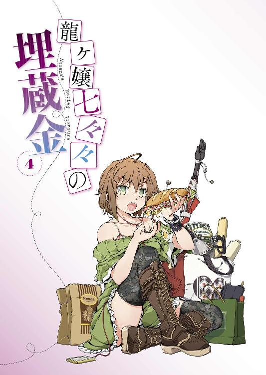
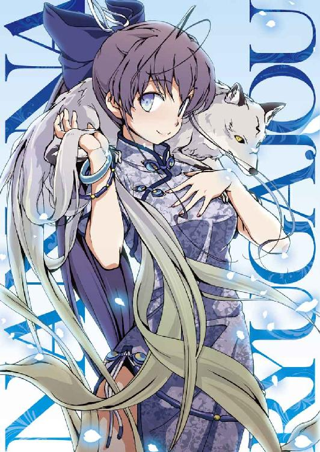
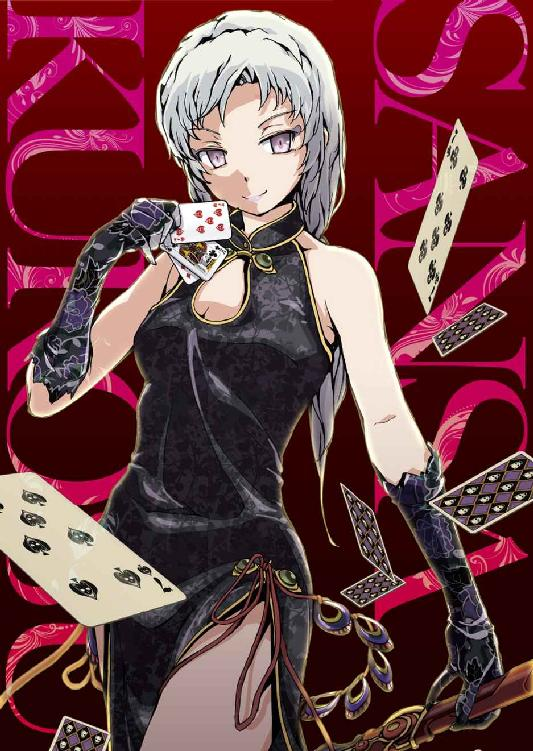
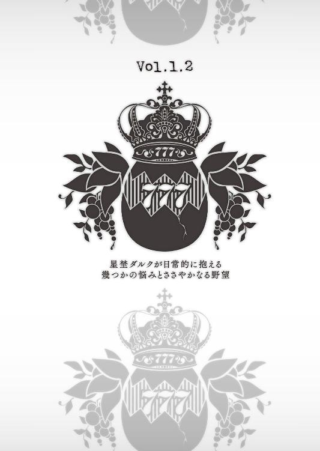
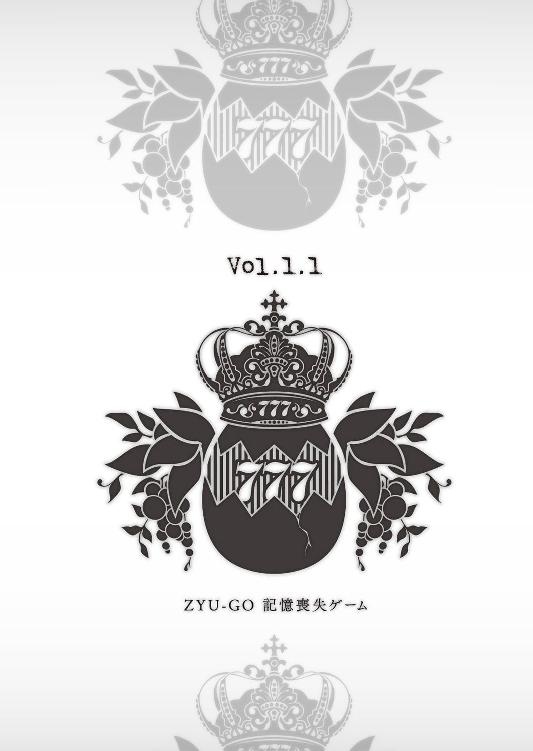

| 龍ヶ嬢七々々の埋蔵金 04 | |
| 鳳乃一真 | |
| KADOKAWA / エンターブレイン (2013) | |



本作品の全部または一部を無断で複製、転載、配信、送信したり、ホームページ上に転載することを禁止します。また、本作品の内容を無断で改変、改ざん等を行うことも禁止します。
本作品購入時にご承諾いただいた規約により、有償・無償にかかわらず本作品を第三者に譲渡することはできません。
本作品は本文縦組で制作されております。ごらんになるリーディングシステムにより、表示の差が認められることがあります。
重護たちがサウスレッドモールでの《遺跡》挑戦を終えた週末。
幸せ壮二〇二号室では、おなじみの面子がのんびりと時間を潰している。
その中の一人、この部屋の住人である八真重護は、ベッドに寝転がり、手に持った布袋を眺めていた。
それは、ベッドの隣でクッションに座り、早々に犯人とそのトリックを看破した探偵ドラマの再放送をつまらなそうに見ている、自称名探偵を名乗るお隣さん・壱級天災が所持する七々々コレクション《魔除けのお守り》だった。
なんでも持っていると魔を祓ってくれるらしい。
つーか、魔ってなんだ、魔って？
正直、使用用途がよく分からない。
そんなモノがあるかと思えば、今重護が寝転がっているベッドの下に隠してある《キラキラ噓発見器》、これは結構スゴイ。なぜなら相手の噓を完全に見抜くことができるからだ。かなり有能、ただし悪いことに使うと目が潰れてしまうので要注意。
他にも、対象を完全拘束する《どんな奴でも逃がさない鎖が飛び出す大きな釘》、影の中を泳ぐように移動できる《影かき》、他人の能力を完全コピーできる《ものまね眼鏡》、さらには使用者が望むこと全てを叶える《魔法使いの杖》なんて際立った能力を持った物もある。ついでに美容と健康に最適な仙茶を生み出す《茶葉がいらない急須》も忘れてはならない、重護たちの所属する冒険部の備品だ。
なんだか名前だけ聞くととっても微妙な雰囲気がするが、これらにはちゃんとした正式名称があり、その全てが世界中に存在していた世紀の秘宝なのである。
「そういえば、七々々ちゃんってどうして七々々コレクション集め出したの？」
重護がそう尋ねたのは、これら非常に残念な名前を付けた張本人であり、元所有者、さらには一〇年前にこの部屋で殺された女の子だ。
「ん？ どうしたの、急に？」
少女の名前は龍ヶ嬢七々々。一八歳で亡くなるまで数々の偉業を残し、今はマウスをカチカチと操りネトゲーをしながら、スプーンですくったプリンを堪能することを生きがい（もう死んでいるけど）にしている一風変わった地縛霊だ。
「いやさ、どうしてこういう秘宝みたいのに興味を持ち始めたのかと思ってさ」
七々々コレクションとは、生前七々々が世界中から収集してきた特殊な力が備わった秘宝の数々だ。そして未だにこの七重島のあちらこちらに隠されているそれらを、重護や他の学生たちは、それぞれの思惑を持って探している。
そんな重護の質問に、七々々は「うーん」と首を傾げる。
「そういうのが好きだったから」
「いや、それは前にも聞いたんだけど。そうじゃなくてさ、なんでも物事にはきっかけってもんがあるじゃん。だから七々々ちゃんが、こういう秘宝に興味を持ち始めたきっかけはなんだったのかな？ って思ってさ」
「ふむ、重護にしてはなかなか面白いことを訊くな」
そう上から目線で口を挟んできたのは、「つまらん」とテレビの電源を切った天災だった。リモコンを放り投げた天災は、七々々を見る。
「私も些か興味があるな、七々々殿。よかったら聞かせてもらえないか。どうせダルクが買い物から戻ってくるまでにはまだまだ時間がかかりそうだしな」
現在、天災の身の回りの世話役であり、本日の夕食係となった星埜ダルクの帰りを待っている状態である。
そんな天災と重護の視線を受けて、七々々は恥ずかしそうにはにかむ。
「別に話してもいいけど、そんな大した話じゃないよ」
そう言いながら、龍ヶ嬢七々々はにこやかな笑顔で思い出す、そのきっかけの物語を。
悪友と共に冒険した日々のことを。
＊ ＊ ＊
一方こちらは、七重島の吹き溜まりツクヨミ街。そこを事実上支配しているチーム・スリー・スカル。その本拠地ビルで、ＧＲＥＡＴ７の一人に数えられるリーダー黒須参差は、メンバーの一人である辻深鉄之進と向き合っていた。
「......というわけだ」
「七々々コレクション、そんなものが本当に......」
「まあ、お前には黙っていたがな」
参差は鉄に、七々々コレクションの存在と自分たちがそれを集めていることを打ち明けた。本来なら参差は鉄にこのことを話すつもりはなかったのだが、ある事情でそうするべきと判断したのだ。
「それが、ゆんが失踪したことに関係しているんですか？」
血走ったような目でこちらを睨む鉄、その表情には濃い疲労の色が見て取れた。
ゆんこと吉野咲希の突然の失踪。そのことに一番ショックを受けたのは、護衛役として一緒に第三高等部に復学した鉄だった。それまでのストーカー事件のこともあり、鉄はすぐに方々を探し回ったが、未だゆんの足取りはつかめていない。連絡がつかなくなった昨日から不眠不休でゆんを探す鉄は、傍から見ていても限界だった。
「おそらくな。なんにしても、こっちでも情報を集めている。お前は一旦休め」
「いえ、自分は......」
「私が休めと言ったらお前は休まなきゃいけねぇんだよ」
参差の睨みに、鉄はしぶしぶ頷く。
「その、姉御。一つ聞いてもよろしいでしょうか？」
「あん、なんだ？」
「龍ヶ嬢七々々とはどんな人だったんですか？」
「？ なんだよ、突然」
「いえ、七々々コレクションについては都市伝説としてなんとなくは知っていたのですが、それを集めたという龍ヶ嬢七々々については、自分はなにも知らないと思いまして」
「別にいいじゃねぇかよ、そんなこと」
「ですが、もしかしたらゆんを探し出すうえでなにかの手がかりになる......」
「ならねぇ、ならねぇ。ほらっ、この話は終わりだ」
あまり七々々との思い出は話したくないので、さっさと話を切り上げようとする参差。しかしそんな女心を敏感に察知などできない、融通の利かない鉄は、さらに尋ねてくる。
「昔なにかあったのですか？」
参差の素っ気ない態度に逆に突っ込んでくる鉄に、参差は思わず口を噤む。「だからテメェは女にモテねぇんだよ」と心の中で悪態をつきながら、「話すつもりはない」と口を開こうとした。
しかしそこで思い直す。
このまま鉄に休むように言っても、言うことを聞くかは怪しい。なら少しでも自分が話をして気を紛らわせてやるべきかもしれない。
数秒考えを巡らせた参差は、やがてため息とともに口を開く。
「ちょいと昔の話だ」
そして黒須参差は語り出す。
迷惑極まりないバカと過ごした日々のことを。
龍ヶ嬢七々々と黒須参差は、たまたま偶然、同時にあの当時のことを思い出した。
七々々が死ぬ前、七重島ができる前、二人して世界中で暴れまくった日々のことを。
それぞれが語り出す、自分が体験した出来事のままに。
二人の最初の物語を――１
よく蝶の夢を見る。するとある時分からなくなった。はたして自分が蝶の夢を見ているのか、それとも自分が蝶の見ている夢なのか。
昔なにかの映画で聞いた台詞だ。
これを言った登場人物は、自分の記憶があやふやで、自分が誰なのか分からないみたいな設定で、周りから浮いた妙にフワフワしている人だった。
たぶんそれって、今目の前にある現実に実感がもてなくて、なんだか不安になっちゃった、ってことだったんじゃないのかな？
とまあ、その映画を見たときの私なりの感想なんていうのは、その程度の実に大雑把なものだった。
だってしょうがない。学校の期末テストみたいに最後に答え合わせがあるってわけでもないんだから、その登場人物が、その時、その瞬間、どう思っていたかなんて分かるわけがない。だから精々、「こうなんじゃないかな？」って自分勝手に想像するしかない。
結局、他人の心の内なんてものを本当の意味で理解するなんて不可能ってことなんですよ、うん。
当時の私はそう結論づけた。
......だけど、今こうして振り返ってみるとね、これが結構小っ恥ずかしかったりするんですよ。いや、あれですわ、私も若かったんだろうね。登場人物がなに考えているのかさっぱり分からないからって適当な言い訳かまして想像力を働かすことを放棄して、終いには評論家ぶってそれらしい言葉並べて格好付けて。いや、本当にお子ちゃまでしたよ、あの頃の私は。
だけどね、今は違います。今の私なら、あの登場人物の気持ちが痛いほどよく分かりますよ。シンパシーを感じるっていうのかな？ これってユニゾンみたいな？
まあこれが俗にいう作品に対する共感ってヤツなんだろうね。
「やっばいなぁ、なんだろうね、この状況、訳分かんねぇ」
なぜなら私自身が、たった今自分の置かれている境遇をまったく理解できていないからです。
そんな私が現在立っているのは、どこにあるのかまったく分からない高級百貨店のかなり上の方のフロア。目の前にある窓から眼下の街並みを見下ろせば、暗い空の下、眩い街の明かりが、まるで光り輝く海のように広がっている。まさに百万ドルの夜景。だが残念なことに、それを楽しむ心のゆとりが今の私にはない。
「そしてなぜにチャイナドレスを着ているんだろう、私？」
そうなんです、チャイナです、チャイナなのです、やっチャイナなのですよ。
いや漫画とかテレビで見たことあったけどさ、実際着てみるとすごく落ち着かないんですよ。なんかスリットとか想像以上に深くて、手で押さえたくなっちゃうんだもん。これ、見えてない？ 見えてないよね？
「アイヤー、お似合いダヨ、七々々サン」
隣には、私にチャイナドレスを着せてくれた、片言の日本語を喋る細目の女の子が揉み手でニコニコ笑っている。彼女の名前は好ちゃんというらしい。
そんな好ちゃんに愛想笑いを浮かべながら、頭の中でもう何度目になるか分からない自問自答。
少なくとも、一昨日の夕方までは、私はいつもの日常の中にいたはずだ。
バイトやって、学校に行って、仲間七人でいつものファミレスのいつもの隅っこのテーブルを占領して、いつも作戦会議とかして......
なのに、なんで今こんなことになっているんだろう？
「おう、またせたな、七々々」
完全に現実感なくその場に立ち尽くす私の名前を誰かが呼んだ。
何気にそちらに目を向けびっくり。私と同じくチャイナドレスを着たメチャクチャ美人のお姉さんが、こちらに手を振りながら近づいてくるではないか。美貌アリ、スタイルも良し、なにより足のラインがヤバい。ただでさえ綺麗な足をしているのに、さらにヒールとスリット効果でより長く、なによりエロく見える。みごとなまでの脚線美。これがチャイナドレスの醸し出す大人の色香というヤツなのか。
「き、貴様、なにヤツ！」
反射的に身構えてしまった、なんだかエロかったから。
「なに訳の分かんねぇこと言ってんだ？ ついに頭が沸きでもしたか、この乳デブ？」
途端に愛想の良さそうな表情が歪み、まるで人を蛆虫のように見下してくるお姉さん。その睨みと私のことをそう呼んでくる失礼な女は、この世にたった一人しかいない。
「ま、まさか、参差？」
「あん、そうに決まってんだろ？」
私は目が飛び出すほど驚いた。
「えっ、だってさっきまで髪の毛ボサボサで、スカジャン着て、白いマスク着けた私服のヤンキーだったじゃん！ なのにこの変貌ぶりはなに！ なんでそんなに美人になっちゃったの!?」
「アホか。私は元々美人なんだよ」
堂々と胸を張る参差の言うことは、悔しいかな、その通り。だけど納得いかない。
「おかしいじゃん。参差といえば、普段は木刀担いでマスクしてコンビニの前で不良座りしているような場末のヤンキーなのに」
比喩的表現じゃなくて、彼女はマジでやっています。
「まあアレは世を忍ぶ仮の姿ってヤツだな」
なぜ世を忍ぶのにヤンキーの姿をチョイスするのかが疑問だが、それにしても服を着替えてお化粧しただけでこんなにも雰囲気が変わるものなのか？ 前々からただの不良じゃないとは思っていたけど......恐るべし、悪党・黒須参差。
「えっと、それでなんだけどさ、参差。一つ聞いてもいいかな？」
「なんだ？」
「なんで、ここにいる人たちは日本語で喋っていないの？」
現在私たちがいるのは、海外ブランドのショップが並んでいるフロア。そんなフロアの中、好ちゃんはともかくとして、ここに来るまでにすれ違った人たちからお店にいる人たちも全員、なにを喋っているのかさっぱり分からない。
「あん？ そんなのはここが日本じゃないからに決まってんだろ？」
「いや、だっておかしいじゃん。昨日の夜まで私たち、日本にいたじゃん。それで参差に言われるがままに電車乗って車乗って、妙に風が強い港町に着いて、そこからなんだかオンボロな船に乗って......」
「つまりなにが言いたいんだよ」
「だからなんで飛行機に乗っていない私たちが、外国にいるのかって聞いているの。だいたい私、パスポート持ってないし」
核心に迫る私の問いかけに、参差は真顔でしれっと答えた。
「んなの、密入国したからに決まってんだろ？」
「やっぱりか、コンチクショウ！」
私は参差に摑みかかった。
「なんだよ、気付いてたんじゃねぇかよ」
「気付くわ、そりゃ気付いてたわ！ 夜なのに明かりを全部消して海を進む船に揺られたりとか、海上で別の船に乗り換えたりとか、昼間歩いた街並みとか、看板の文字が全部漢字だったりとか、好ちゃんが「社長サーン、イラッシャーイ。ワタシ有能なガイドさんョ～」って片言の日本語で寄ってきたりしたときから、ここがどこかなんて薄々気付いてたわ！ だけどなにかの間違いだって思いたかったのよ！ きっとそういう海外の空気が味わえる地方のアトラクションだったらいいなぁ、とか必死に自分の心を騙くらかしていたのよ！ つーか、ふざけんじゃねっつーの！ なにが悲しくて知らぬ間に重犯罪させられなきゃいけないのよ！」
「あー、うぜぇな。いいから離れろ」
むにっ
泣き叫ぶ私の胸を、参差が容赦なく揉みやがった。
「なっ、なんだ、このやろぉ！ おっぱい揉むなよぉ！」
そんな涙目で胸をガードする私のことを参差が睨みつける。
「テメェ、さっきから聞いてりゃ、好き勝手言いやがって。人聞きの悪いこと言うんじゃねぇよ。そもそもテメェがついてくるって言ったんだろうが」
そう参差に睨みつけられ、私は一昨日のことを思い出した。
都内某所にあるいつものファミレスのいつものテーブル席に、異なる制服を着た七人の学生たちが集まっている。彼らは放課後になると決まってこのファミレスに集結し、ある極秘プロジェクトのための作戦会議を開いていた。
人々は彼女たちのことを《龍ヶ嬢七々々と世界に笑顔を振りまく六人の仲間たち》と呼んだ......ってなるといいなぁ、と思っている。
そんな自らの願望は置いといて話を戻すが、その日も私たち七人は、いつものように自分たちの計画について話し合っていた。
自分たちの夢に挑戦できる島を作る。
そんな途方もない計画を叶えるために、私たちは毎日のようにこのファミレスに集まり、活動していた。
だがその日はいつもに比べて絶望的に空気が重かった。
なぜなら、その日、私たちの夢が夢で終わろうとしていたからだ。
議長を務めるハルアキこと一鶴春秋がいつにもまして難しい表情で口を開く。
「では問題に対する明確な打開策が提案されるまで、《一鶴春秋と共に経済革命を目論む六人の同志たち》の活動は凍結するものとする」
ハルアキの言葉に、それぞれが難しい顔して席を立ち始める。
この日までに私たちが作り出した完璧な計画は、どうしようもない現実の前に終わろうとしていた。
一言で言えばお金が捻出できなかったのだ。
ここにいる六人（私以外）は各分野で新鋭と呼ばれ多少は名の知られた存在である。そんな皆が（一応私も）ありとあらゆる手を尽くし、大人たちに掛け合ったが、私たちの夢に耳を傾けてくれる大人など一人もいなかった。
私たちが思い描いた夢は、当たり前の常識という壁にぶち当たり、頓挫してしまったのだ。
そしてその日の作戦会議で、「万策尽きた」という結論に達した。
計画凍結という名の事実上の終焉。結果、この計画の実現のみを目指して集まっていた私たち七人は、解散を余儀なくされた。
「私がなんとかしてみせるから！」
それでも私は、帰ろうとするみんなに向かってそう叫んだ。そうしないと、私たちの夢が、繋がりが、ここで消えてしまうと思ったからだ。
私のなんの根拠もない叫びに、帰ろうとしていたみんなが立ち止まり顔を見合わせ、そしてどこか楽しそうに笑った。
「じゃあ頼むわ、七々々ちゃんよ。俺様も《双葉才兎の狂気の研究にその身を捧げる六人の下僕たち》の活動をこれで終わりにしたくないからさ」
才兎がそう笑ってファミレスから出て行った。他のみんなも似たように、「期待している」と言い残し出て行く。そんなみんなの後ろ姿を見ながら私は思った。
そうだよ。なんだかんだ言ったって、ここまで頑張ってきた計画を終わりにしたくないのは、みんなだって同じはずなんだ。その願いを、その思いをここで潰えさせちゃダメだ。大丈夫、きっとなにか手はあるはずだ。
「よっしゃ！ やってやる！」
私は新たな決意を胸にファミレスを飛び出した。
「ねぇ、参差。なにかてっとり早く大金稼ぐ方法ってない？」
そしてファミレスの前で、ちょうど目についた原付に跨ったスカートの長いヤンキー女に声をかけた。
彼女の名前は、黒須参差。六人の仲間の一人で、自らを《悪党》と称し、風邪も引いてないのに白いマスクをつけることをポリシーとする謎の女である。そんな参差になぜ相談したのかといえば、それは参差がヤンキーなのになぜか広い人脈を持ち、多方面に非常に顔が利く女だからだ。そんな参差だったら、なにか良い方法を知っているかもしれないと思ったのだ。
私の問いかけに、改造原付にノンヘルで跨る参差は、ポリポリと頰を掻く。
「まあ、あるにはあるな」
「マジで！ 教えて！」
思わず参差に詰め寄った。そんな私の瞳を参差は思いっきり睨みつけてきた。
「教えてやってもいいがよぉ、七々々ぁ。テメェ、さっきは随分とデケェことほざいていたけどよぉ、テメェはテメェの吐いた言葉に命を賭ける覚悟があるんか、あん？」
俗に言うメンチ切ってからデコ引っ付けての超至近距離でガン飛ばしてくるヤンキー女に、私は笑顔で頷いた。
「うん、賭ける賭ける。だからさっさと教えて」
「なんだか返事、軽っ！ マジで大丈夫か？」
「まっかせなさーい。絶対になんとかしてみせるから」
私はビシッと親指を立てた。
「......いつも思うんだが、テメェはなんの根拠もねぇのに、無駄に自信満々だな。もう目力とかありすぎて、逆に引くわ。......まあいい、なら私もちょうど用事があって、その場所に行くから、どうしても金を稼ぎたいって言うんだったら連れてってやってもいいいけど、来るか？」
「うん、行く行く」
そんな私の二つ返事に、参差は「んじゃ明日ここに来い」と集合場所と時間を告げると、原付のエンジンをかけ、「パラリラリ」と謎の高音をまき散らしながら去っていった。
その結果、私はチャイナドレスを着せられ、日本じゃないどこかにいます。
しかも現在、私と参差と好ちゃんは、運転手さん付きの高級車に乗って移動中です。ワケが分かりません、誰か助けてください。
「なんで、密入国？ 普通にパスポート取って飛行機乗ってくればよかったじゃん」
「私の都合だ、嫌なら帰れ」
「いや、帰れないし！ むしろ帰してよ！」
「金を稼ぐんじゃなかったのか？」
「......そうでした」
あり得ない現実にパニックを起こしておりましたが、そうなのだ。なんで自分がこんなあり得ない現実の中に身を投じているかと言えば、それはお金を稼ぐためなのです。
みんなの夢を実現するためだ、へこたれるな、私。
「それで、参差。私たちはどこに向かっているの？」
「あそこだ」
参差が窓の外を指差した。そこにあったのは高く聳えるビル群の中の一つだった。
「あそこになにがあるの？」
「行けば分かる」
ビルの前で高級車は停車、近づいてきた黒服のおじさんが、後部座席のドアを開けてくれた。そのまま下車し、いかにも超高級ホテルですよ、みたいなロビーに入ると、先頭を歩く参差にゴツイ黒服の人が近づいてきた。参差は、その人と日本語じゃないっぽい言葉で二、三会話すると、そのままエレベーターまで案内される。
そんな堂々と歩く参差の後ろを歩きながら、私は思わず訊いてしまった。
「参差、貴様は何者だ？」
「ただの悪党だよ」
上昇を始めたエレベーターはやがて止まり、扉が開く。
そして私たちがやってきたのは、眩い大人の世界だった。
「......ねぇ、参差。私、こういう場所テレビで見たことがあるんだけどさ。ここってもしかして、カジノってところじゃないんですか？」
「もしかしなくてもカジノだな」
目がチカチカしそうな煌びやかな内装、トランプを操るディーラーが立つテーブル台、スロットマシーンなどなど、テレビなどで見たことのあるようなギャンブル台があちらこちらに設置されている。そしてそれらに興じるのは、身なりの良い大人たち。
「うわっ、スゴい本物じゃん！ なんだかお金持ちっぽい人ばっかりいるし！ おおぅ、あそこにバニーガールが！ エロす、バニーガール、エロす！ ......いやいや、はしゃいでいる場合じゃなくて......あの参差さん。私未成年なので、こういう所に入っちゃマズくないでしょうか？」
「ああ、大丈夫だ。ここは真っ当なカジノじゃないから」
なにが大丈夫なんだろう？
だが、なんにしてもようやく参差が言わんとすることが分かってきた。
「つまりギャンブルで稼げってこと？」
「そういうことだ」
参差は表情を変えることなく、実にシンプルな回答をしてきた。
「いや、確かにお金が必要だけどさ。だけど、こういう場所でお金を稼ぐのって、なんだか違くない？」
そう言った途端、参差が「はぁー」と随分と重たいため息を吐き出したかと思ったら、苛立たしげに思いっきり睨みつけてきた。
「おいおい、なにご大層に鼻につく台詞吐いてんだ、この乳デブ。なんだ？ テメェん家は超がつく大金持ちで、億単位の大金ポンと出せるってご身分なのか、あん？」
「い、いや、出せないです。そもそも実家もありませんし」
「じゃあ一体全体、テメェはどうやってあんな大金を用意するつもりだったんだ、あん？」
「えっと、頑張って働いてお金を稼ごうと......」
「かーっ、前々から底抜けのバカだとは思っていたが、そこまで頭の中がお花畑だとは思わなかったわ。ざけんなよ、この夢見る少女。働いて稼ぐって、いったいどれだけの時間が掛かると思ってんだ。一生働いたって無理だよ、ぶぁーか」
「うっさい、バカ言うな！ 確かに普通じゃちょっと無理なことくらい私だって分かるわ！ それでももしかしたら、そんなお仕事があるかもって思ったんだもん！」
「ねぇよ！ 某大国の大統領暗殺だってそんなに高くねぇよ！」
「それでもなんとかする！」
「だったらどうするんだよ？ 誰かに出してもらうか？」
「そんなの！ ......そんなのこの数ヶ月で無理だって思い知らされたじゃん」
駆けずり回って大人たちと交渉した結果、鼻で笑われ、相手にもされず、今こうしてここにいるのだ。
「はん、私にしたらそんな当たり前のことに気が付くのに数ヶ月も時間が掛かったテメェ等全員のオメデタイ頭の中身を思い知らされたわ」
鼻で笑う参差は、私たち七人の中で、唯一出資の交渉に動かなかった。
「でも、十分見込みは......」
「確かに一鶴の意地汚ねぇ金勘定の才覚、双葉の変態妄想の詰め込まれた頭脳、コマの超天才的で誰もが見惚れる芸術センス、あと笑顔もマジ痺れる、があれば、あの計画は将来性だけじゃなく、金銭面でもかなり魅力ある提案だ」
なんだか変な主観が入ったような......、いやいやそれはともかく。
「だったら......」
「それで誰が一〇〇億ポンと出す？ 採算が取れる取れない以前の問題だ。ガキが考えたママゴトにそれだけの金を積む大人なんているか」
「ママゴトじゃない！ 私たちは真剣に......」
「それを決めるのはテメェじゃねぇ。現実に金を握っている力ある大人だ」
参差の物言いはいちいちムカつく。だけど悔しいけど反論できない。
「だから、だから自分でどうにかしようとしているんじゃん！」
「だからここで勝手に稼げって言ってんだよ」
「......でもここってカジノじゃん」
「話が戻ったな。はい、ここはカジノですが、なにか？」
「......なんかカジノとかギャンブルのお金って汚いっぽいじゃん」
素直に自分の気持ちを口にした瞬間、参差は本気でメンチを切ってきた。
「あー、うぜぇ。この乳デブ！ マジでうぜぇ！ この脂肪の塊腹立つ！」
むにっ
「って、おっぱい揉むなよぉ！」
「七々々、お前、マジでなんにも分かってねぇな。理想が喋りてぇだけなら自分ん家のトイレにでも籠もってひとりで吠えてろ。問題なのは、今の状況でどうするべきか、だろうが！ テメェひとりであんな大金稼ぐのなんてどう頑張っても不可能なんだよ！」
「だったらどうすれば......」
そう聞き返した途端、参差がこれでもかというほどの悪人面を浮かべた。
「持っている人間から奪い取ればいい」
「う、奪い取る？」
「一つ良いことを教えてやる。『金と人間は似ている』、っていうのが私の持論だ。世の中には真っ当に暮らす堅気の人間と薄汚い犯罪に手を染める汚い人間がいるように、金にも綺麗な金と汚い金がある。テメェが求めているのは、テメェが言うところのまっとうに稼いだ綺麗な金で、ここに溢れ返っているのは汚らしい金だ。そりゃ夢見る少女ちゃんにはさぞ汚らしく見えるだろうよ。だがな、金っていうのは、素晴らしいことに人間と違って、綺麗だろうと汚かろうと価値はまったく一緒なんだよ。それをどんな経緯で手に入れようと関係ない。等しく同じ価値で力なんだよ」
「......」
「綺麗だ汚いだ、なんて好き嫌い選べる立場だと思ってんのか、テメェは？ そんな上から目線でモノ言えるほど、テメェの夢は偉くもなんともねぇんだよ。それでもやりたいと思うんだったら四の五の言わず足掻け。足掻いて足掻いて足掻きまくれ。それができねぇんだったら、その耳障りな声で吠えるな、囀るな、一言も喋るな、耳が腐る」
熱く語る参差の言葉は私にとって衝撃的だった。
思わず聞きいってしまった私に、参差は最後にこう言った。
「と、まあ長々と講釈を垂れたが、やるかやらないかは、テメェの自由だ。テメェのやることくらいテメェで決めろ」
「やる」
私は即答した。
「へぇ、さっきまでゴネていたのに、随分とあっさり決めたな」
「参差の言うとおりだと思っただけだよ。結局、私たちの夢を実現するには、お金を手に入れるしかない。それでたぶん、そのお金は普通のやり方じゃ手に入らない」
自分の考えの甘さを反省しつつ、グッと拳に力が入る。
「ふん、良い心がけだ。それより七々々、お前ちゃんと金は持ってきたんだろうな？」
「ああ、うん。参差に言われたからちゃんと持ってきたよ。まさか賭け事のために使うとは思わなかったけど」
私はカバンからそれを取り出した。
「......なんだ、その貧乏臭い豚さん貯金箱は？」
「少ないバイト代からちょっとずつ貯めていた私のへそくり。たぶん三万円くらいはあると思う」
途端、参差の瞳からドバッと涙が溢れ出した。
「バカ野郎！ せっかく気合い入れて化粧したんだから、そういうのチラつかせるんじゃねぇよ！ 化粧が崩れるだろうが！」
目頭を押さえる参差。
自ら悪党を名乗る黒須参差だが、実は意外と涙脆かったりする。
「ほらっ、貯金箱寄越せ、換金してやるから」
「えっ、換金ってなんで？」
「バカか、ここは日本じゃねぇんだから、日本の金が使えるわけがねぇだろうが」
「あっ、そっか」
なるほどと思い、私は素直に参差に貯金箱を渡した。すると参差はハンドバッグの中から見たことのないお札の束を取り出し、私にくれた。
「なんかいっぱいあるけど、これって、いくらくらい？」
「そうだな、たぶん日本円にして二万くらいだな」
「ちょ、なんで少なくなってんのよ！ 貯金箱の中には三万くらいあるって言ったでしょ！」
「通貨の換金には手数料がかかるって相場が決まってんだよ。だいたい本当に三万入っているかも怪しいしな」
「失礼だな！ そんな騙すようなこと、私しないもん！ そこまで言うなら貯金箱割って中身数えろよ！」
「そんなことしたら豚さんがかわいそうだろうが！」
参差のガチな睨みに、「えっ、あっ、はい。そーっすね」と引き下がるしかなかった。
「じゃあ、後は勝手にやれ」
「あれ？ 参差はどっか行っちゃうの？」
「私は私で用事があるんだよ。......そう不安そうな表情すんな。ある程度は好に言ってあるから、分からないことはそいつに聞け」
参差の言葉に、私たちの後ろでニコニコ笑みを浮かべて立っていた好ちゃんが、「オマカセ！」と敬礼をした。
「じゃあな、期待しているぞ、七々々。《黒須参差が新たに構築する闇社会の新秩序を支える以下六人》の今後は、お前の働きにかかっているんだからな」
ニヤリと笑う参差の激励に、私は驚いた。
「ちょっと意外。参差はもしかしたらあんまりやる気ないのかなって思っていたから」
「金がなくて頓挫したからって、私もそこに一枚嚙もうとしていたんだ。そんで私がそうしたのは、そこに私なりの期待値を見出したからだ」
そう不敵な笑みと「がんばれよ」という言葉を残し、参差はカジノの奥へと消えていった。
参差もいなくなり、好ちゃんと二人っきりになってしまったが、私は怖くなかった。だって、参差が「がんばれ」と言ってくれたからだ。
私だけじゃない、みんなも、そして参差も追い求める夢があるのだ。
そのためにも、ここで頑張るしかない。
「よっしゃ、それじゃジャンジャンお金稼ぐぜ、好ちゃん！」
「オッケネ、七々々サン。お金ガッポガッポで、幸せもガッポガッポネ！」
気合いが入った私たち二人は、取りあえず目についたテーブルへと近づいた。
「好ちゃん、これってどうやってやるの？」
「簡単ネ。玉がルーレットのどの数字に落ちるか当てるだけネ」
なるほど、そう言えば見たことがあるな、コレ。あのグルグル回っている盤の中に玉を投げ込むヤツだ。
数字を当てるだけならルールも簡単そうだし、私にもできそうだな。
「ねぇねぇ、好ちゃん。どうやって賭けるの？」
「ルーレットの隣のテーブルに書かれている数字に自分のチップを置けばイイネ」
「ふーん。じゃあ、あの端っこの赤と黒のエリアはなに？」
「単なる模様ネ」
「そうなんだ。じゃあさ、今賭けた人は、なんで隣り合っている数字のエリアの真ん中の線にチップを置いたの？」
「ズルしているネ。ドッチかに入ったら、『ワタシ、ソッチに賭けたネ』ってイチャモンつける、反則スレスレの荒技ネ」
「へぇ、そんなテクニックがあるんだ。好ちゃんは物知りだね」
「そうネ。私、だいたいのことなら結構知っているネ」
胸を張る好ちゃん。これは頼もしい人が付いてくれた。
「よしっ、早速やってみよう」
私はディーラーさんにお金を渡してチップを受け取った。
＊ ＊ ＊
七々々に愛想の良い受け答えをした参差だったが、正直参差は、七々々たちが言い出した夢物語に、見切りをつけていた。
夢を現実に変えるための初期費用は一〇〇億。一鶴春秋がはじき出した金額は、参差が愛想を尽かすには十分なインパクトがあった。
現実的ではない。故に自分たちが思い描いたこの夢は実現しない。
叶わない夢ほど性質の悪いものはない。夢は人を盲目にする。その考えを免罪符に、人は今まで培ってきたものを全て捨て去る。参差に言わせれば、夢や憧れなど、人を惑わせる毒でしかない。
だから参差は、そんなマヤカシしか見ることのできない七々々が、ここで借金こさえて身売りするハメになるだろうと予想している。
参差は、この国に来て自分たちに声を掛けてきた好を七々々専用の通訳として雇ってやった。その好に、参差はこう言ってある。「手持ちがスッカラカンになったら、カジノの中をブラブラしろ。そのうち金持ちのエロ親父が大金チラつかせて寄ってくるだろうから、その賭けは全部受けさせろ」と。
勝負に勝つことができれば、それなりの金を手に入れることができるだろうが、負ければめでたく七々々はエロ親父の慰みモノ。まあそれが、叶わない夢を見続ける少女の上等な末路だろう、と参差は予想している。
尋ねられたから道は示した。入り口まで手を引いてやった。だが参差は端からこの道が地獄にしか続いていないことを知っている。理由はどうであれ、最終的にギャンブルなんかに望みを賭ける人間の末路など決まっている。ハイエナのエサだ。結果、骨の髄までしゃぶり尽くされ死ぬだけ。そんな人間を間近で見てきた参差にはよく分かる。
じゃあな、七々々。精々この国でよろしくやってくれ。
「さてと」
心の中で七々々に別れを告げた参差は、思考を切り替える。
参差がここにやってきた理由は、自らの野望の下準備のためである。
黒須参差の野望、それはこの世界に蔓延る裏社会に食い込み、やがては自らの組織を作り上げることだ。
参差は着々とその下準備を進めている。裏の世界を仕切る重鎮たちとのコネクション作りもその一つであり、それこそが、参差がこの国のこの大都市にあるこのカジノにやってきた理由だ。
使いきれない金と確かな地位を築いた大人たちが、表の世界のシガラミを忘れてギャンブルに没頭することができる。ここはいわばそういう特別なカジノなのだ。
そのような環境を用意できるのは、どんな存在か？ それは誰もが恐れる権力と暴力を持った存在・この国の裏組織だ。
いくらこのカジノで犯罪行為があろうがスキャンダルがあろうが組織の庇護を受けたこのカジノに手を出す人間はいない。手を出したら最後、死より恐ろしい報復が待っているからだ。
参差はそんなカジノを仕切る組織の幹部に会いに来たのだ。
一番奥の扉の前までやってくると、扉の前に立っていた黒服の男たちが近づいてくる。
「申し訳ありません、お客様。ここより先は立ち入り禁止です」
「本日、狼大人にお目通りをお願いしています、黒須参差と申します」
参差が喋る自国の言葉に、黒服たちは、「お待ちください」と身につけていたインカムで上と連絡を取る。
「失礼しました、お通しします」
男の言葉に、参差は愛想の良い笑顔を向ける。すると男はドギマギした表情を浮かべながら扉を開く。
奥からやって来た案内人の後に続き、通路を進み階段を上る。そして上階の最奥の部屋へと通された。
部屋のソファに腰掛けるのは、このカジノの主である狼。この界隈に住まう者たちは、尊敬と畏怖を込めて狼大人と呼んでいる。四十代だという話だったが若々しく見える。それほど厳ついということもない、むしろ痩身の優男といった感じだ。
「ほう、これは美しい」
狼は座っていたソファから立ち上がり、参差をにこやかに出迎えてくれた。
その反応に、参差は微笑みながら、心の中でほくそ笑む。
黒須参差は、確固たる人生観を持ち、独自の理論を持っている。
見た目に関する印象についてもその一つで、独特の考えがある。
人間は中身が重要だ、という人間がよくいるが、参差に言わせれば、それは非常にヌルい発想だ。確かに人の真価は中身であるというのは間違いないだろう。だが、人が他人の中身を理解するにはかなりの時間と労力が必要であり、それがどれほど面倒で手間のかかることか、というのを無視しているのがいただけない。
人は赤の他人の中身を理解するのに時間を割こうなどとは思わない、興味のない人間なら尚更だ。
参差は普段からヤンキーの格好をしているが、それは参差なりの研究のためだ。
人が人に与える印象について、それが参差の研究テーマだ。
大多数の人間は美しい者に目を奪われる。なぜか？ それは元来、人が美しい者に心惹かれる存在だからだ。
それと同じ原理、大多数の人間は、自ら進んで悪意に近づこうとはしない。好き好んで身の危険を買おうなどとは思わないからだ。
だから街でイケメンや美人を見れば、どうしても目が行ってしまう一方で、街で見るからに怖い人間、ヤンキーを見たら目を逸らす。
故に参差は、見た目の第一印象というのは全てにおいて大きなアドバンテージとなりうる、と考える。
初めて会う人間、さらに自分に対してまったく興味のない相手に、自分という存在を瞬時に印象づけようとするのなら、見た目こそが重要だ。
第一印象、全てはそこで決着すると言っても過言ではない。
最終的に相手に一〇〇点の好印象を持ってもらいたいとする。その時、第一印象があまりに酷いと、相手の最初の印象は〇点だ。だが、好印象なら最初から八〇点である。この後、一〇〇点に持っていこうとするなら、前者なら一〇〇点分の行動をしなければいけないが、後者ならその五分の一、たったの二〇点分でいい。
最初にどう見せるか、たったそれだけの違いで、後の展開にこれだけの差が出る。
黒須参差はそう考える。
「お初にお目にかかります、狼大人」
参差が流暢に喋る言葉を聞いて、狼が驚く。
「ほう、こちらの言葉を喋れるとは」
「なんでしたら、英語でも構いませんが？」
そう英語で尋ね返す参差に、狼は楽しそうに笑い、英語で返す。
「どうせだ、私たちの言葉で話したいな」
「かしこまりました、狼大人」
参差は自分には学が無いと自負している、なにせ中学中退だ。それでも参差はほぼ独学で身につけた六つの言葉を操り、理解することができる。
言葉もまた重要な要因。それができるかできないかで、相手からの印象はまるで違う。
もっとも参差に言わせれば、言葉とは友好のための道具だけではない。周りに無数に転がっている情報を淀みなく汲み取るための手段であり、なにより相手の思惑を察知するためのアンテナでもある。
このように、参差の理論は多岐に渡る。参差は持ち前の度胸と大胆さに加え、これら細かな理論に基づいた会話や仕草などを巧みに使い、相手の心に自らの印象を強く刻み込む。
物事における確立した理論や考えは、確かな力となってその人間に宿る。
参差の発想の正しさは、人脈の構築という結果として表れている。
参差は一六歳という若さで、幅広い人脈を築くことに成功している。
それは華鏡伍月のように血筋家柄によって、生まれつき与えられているようなモノではない。双葉才兎や睦巳駒のような才能による後押しがあって生まれたモノでもない。
ゼロから一つずつ、参差が積み上げてきたモノだ。
そこには品格も才能も存在しない。ただ薄汚く、それでも強固に積み上げてきた、参差の確かな力だ。
人と人が繋がっている限り、人脈は新たな人脈を生む。それは成長する枝葉のように広がり、参差のコネクションは、海外へと延び始める。
日本の裏社会に属する貿易商のコネクションにより、参差は狼と会談する機会を得た。
組織の幹部として絶大な権力を持つ狼との会談、それは野望を抱く参差にとって大きな一歩となるだろう。
そんな参差の理論は、狼との会合においても余すことなく威力を振るう。会話を初めてものの数分で、狼の反応に確かな手応えを感じていた。
その成果に満足しながらも、参差は先ほどから一つ気になっていることがあった。
それは、この部屋の片隅にある鉄格子の箱だ。一メートル四方ほどの箱の中、そこに入っているのは一人の妙齢の女性だった。美しい女性だが、その首に鎖付きの首輪が付けられている。さらには顔や着ているボロから伸びる長い手足は痣だらけで痛々しい。辛そうな表情を浮かべてはいるが、眼は死んでいない。こちらをただジッと見つめている。
なるほど、こいつはこういう趣味か。
内心反吐が出そうになったが、そんなのはおくびにも出さない。
たとえ相手が女をいたぶることに悦びを感じる最低の下種野郎だとしても、力を持っている人間。参差にとって今後必要になる大事なコネクションだ。
嫌な光景は視界から外し、参差はやるべきことに集中する。
椅子を勧められ酒や料理も出される。その中で、狼との会話は大いに盛り上がり、狼も上機嫌で酒を呷る。参差の経験上、かなりの好感触である。
会話がひと段落したところで、参差はふと先ほどの鉄格子の方に目を向けた。なんとなく気になったからだ。
だが、何気に向けた瞳は、すぐに驚きによって見開かれた。
さっきまで、牢の中には妙齢の美女が繋がれていたはずなのに、今は白い獣が一匹ぐったりしていたからだ。銀のような白い毛並、おそらく狐だろう。ただ面白いのが、その尻尾だ。床に扇状に広がるその尻尾は、一本ではない。思わず目を擦り、もう一度見てしまう。しかしそこにいるのはやはり白い狐。信じられない、まるでなにかの手品を見せられた気分だ。
「気付いたようだな、参差」
参差の反応を見た狼が、不敵な笑みを浮かべる。
「これはいったい？」
「そこにいるのは、白狐といってな、妖怪の類だな」
「妖怪？ 御冗談を」
その手のオカルトを参差はまったく信じていない。
「私も祖先を崇め、伝統を重んじる心は持っているつもりだが、正直、物の怪の類はまったく信じてはいなかったよ、ソレを見るまではな。だが、どうやらこの世の中にはこういうモノたちは、確かに存在するらしい」
狼の言葉を聞きながら、檻の中の妖怪に目を向ける。
「飼っているのですか？」
「いや、拷問をしているのさ」
「拷問、ですか？」
尋ね返す参差に、狼は酒を片手に語り出す。
「随分と昔の話だが、外国の勢力がこの国に押し寄せた時代があった。その当時、この辺りの海域には海賊どもが横行し、略奪行為が跡を絶たなかった。やがて海賊たちは捕まり晒し首になったが、盗まれた多くの宝は見つからなかった。それゆえ人々は、今もこの土地のどこかに宝が眠っていると噂した」
まるでマンガみたいな話だな、と参差は思ったが、もちろん口からは別の言葉を吐く。
「それは夢のある話ですね」
「それから数百年が過ぎ、ここはアジア屈指の大都市となったが、宝の痕跡など微塵も見つかってはいない。つまりはただのおとぎ話だったというオチだよ。少なくとも私はそう思っていた。......そんな時だ、私が管理するシマで妙な女の目撃情報があってね。なんとその女は狐に化けるそうなのだ。興味本位でその女を捕まえようとしたが、いつもスルリと逃げられる。部下たちは妖怪だと騒ぎ始める始末だ。そこで試しにその手に詳しい呪い師を雇ってみた。あまり期待はしていなかったが、効果はてきめんだったよ。その呪い師の力を借り、部下たちは女を追い詰め、ついには潜伏先を突き止めた。やがて女は呪い師によって捕まえられた。それがそこの狐だよ」
狼は鉄格子の中でぐったりする狐を指差し、話を進める。
「興味を抱いた私は、部下にその狐に関してなにか分からないかと、様々な文献を調べさせた。すると当時の文献の中に、その海賊が白い狐を連れていたという一文を見つけた」
「それはつまり......」
「どうやらその白狐は宝の番人であり、今でもその海賊の宝を護っているらしいのだ」
饒舌に語る狼の話は、正直、参差からすれば眉唾モノだった。だが実際、狼の言うとおりなら、それはかなり信憑性の高い話なのかもしれない。
「それで宝は見つかったのですか？」
「残念ながらまだ見つかっていない。そのために、こうして時間をかけていたぶっている最中だ。なに、そのうちに根を上げて、なにか喋るだろう」
その狼の言葉に、参差は引っかかった。
「つまり、その白狐は喋るのですか、人の言葉を？」
「ああ、人の言葉を話す。だからこの狐は人に化け、人を欺くことができたのだ。なんなら試しに話しかけてみるといい、もしかしたらなにかを話してくれるかもしれないぞ」
狼に促されるまま、参差は鉄格子の檻に近づいてみた。参差の気配を感じたのか、狐の瞳が参差を捉える。
「よう、狐。腹は減っていないか？」
参差は左手をテーブルの上にある料理に伸ばし、鶏肉を摘み上げるとそれを狐の前にチラつかせる。
興味なさそうな素振りを見せながらも、その瞳は鶏肉を追っている。狼に拷問を受けているという話だ。おそらくしばらくはなにも口にしていないのだろう。
参差は白狐をしっかりと見据えながら、少しずつ、ゆっくりと左手を檻に近づけていく。檻の手前、鉄格子の間、ついに檻の奥へと腕を伸ばし、白狐の眼前まで持って......
ガブリ
いきなり狐の鋭い牙が参差の左手に食いついた。
「美味しいか？」
そう尋ねる参差の左手は狐の口の中には入らず、しっかりと鉄格子の外にあった。だがそれだけではない。参差の反対側の右手は、鶏肉を咀嚼する狐の頭を撫でていた。
その姿に、狼から拍手が起こる。
白狐は参差をジッと睨みながら鶏肉を飲み込んだ。
「なんのつもりだ、娘？」
狐の口から出た言葉に、参差はほんの一瞬驚いたが、すぐにニヤリと笑みを浮かべる。「なに、私は動物が好きなんでね。撫でてみたかっただけだ」
「ふざけた女だ」
白狐が本当に喋ることに感心しながらも、参差は尋ねる。
「おまえ、日本語が喋れるのか？」
狐の口から出たのは、確かに日本語だった。
「我に人の言葉の種類など関係ない」
よく分からないが、どうやら何語でも喋ることができるらしい。
まあなんにしても、本物の化け物ってわけか。
白狐との会話を交わしたことで、参差は先ほどの狼の話を思い出す。
海賊の宝、くだらない夢物語だと思っていたが、あながちそうでもないらしい。
ふーん、海賊の宝ねぇ。
参差の心の中に、確かにときめくモノがあった。だが、すぐに自重する。
おいおい、これじゃ、どこかの乳デブと同じじゃねぇか。
下らない夢物語、とその考えを頭の外に押しやり、参差は鉄格子の檻から離れた。
「私はますますお前が気にいったぞ、参差」
席に戻った参差を、狼は掛け値なしに褒め称えた。その反応に参差は満足する。
人は血を重んじ、同族を尊ぶが、余所者は警戒し、敵と見なす。それは人の本能だろう。だが魅力ある者は、その垣根を簡単に突き破る。長い時間をかけて解くべき警戒心をあっさりと打ち砕く。
それが参差の考えだ。
今夜の会合はことの外上手く進んでいる、と参差は実感していた。
「ボス」
その時、部屋に入ってきた狼の部下が、静かに狼に近づき、耳元でなにかを囁いた。
それを聞いた狼の表情から一瞬笑みが消え、鋭くなった瞳が参差に向けられる。
「なにかありましたか、狼大人？」
笑顔で尋ねる参差に、狼は手に持った杯を呷る。
「今、賭場で少々跳ねている客がいるようでね。随分と派手な勝ち方をしているそうだ」
「それは、それは」
客が勝つということは胴元が損をしているということだ。だが、多くの金持ちが集まる不夜城での話、一晩に一人や二人、羽振りよく勝つ人間がいたとしてもそれほど騒ぐことではない。その何十倍もの人間が金を吐き出しているのだから。
そう頭で理解しながらも、参差の直感が、非常に不味いことが起こっていると警鐘を鳴らしていた。
大した問題ではないはずのことを、いちいち部下が報告してくるはずがない。報告してきたということは、それがただのバカ勝ちではない、ということだ。何より狼は参差にその話を振ってきた。つまり考えられる結論は一つしかない。
「どうやら、その娘は、お前の連れのようなのだが？」
狼の瞳に不信の色が灯る。
それもそのはずだ。友好の意思を持って挨拶にきた人間の連れが、賭場を荒らすほど勝っているのだ。こんなのは侮辱以外のナニモノでもない。これで反感を買わない方がどうかしている。
「今夜こうして杯を交わす参差の連れだ。楽しんでもらって実に結構だ」
狼は再び笑顔を浮かべて酒を呷ってはいるが、眼が笑っていない。参差は生きた心地がしなかった。
多くの部下をまとめ上げ、この賭場はおろかこの周辺一帯を仕切っている狼大人は、部下の前で喚き散らしたりはしない。この程度で動じるようでは部下に舐められかねないからだ。だからといって、このまま放置するほど、狼は寛容でもないだろう。
つまり狼はこう言っているのだ、「さっさとそのバカをどうにかしろ」と。
今回の対談の失敗は、参差の野望にとって大きな障害となりかねない。それどころか紹介人の顔にも泥を塗ることとなってしまう。それはあってはならないことだ。
「狼大人、申し訳ありませんが、少々席を外してもよろしいでしょうか？ 躾のなっていない猫を少々懲らしめてまいります」
参差は静かに席を立つ。
「そうか、期待しているぞ、客人」
その言葉が、確実に狼の不信を買ったことを現していた。
狼の部屋を退出した参差は、賭場へ向かう途中、先導する狼の部下から七々々が荒稼ぎしている金額を聞いて意識を失いそうになった。
豚の貯金箱に数万円しか入っていなかったヤツが、何をどうやったらこの短時間に家を建てられるほどの金を荒稼ぎすることができるというのだ。
ふざけている。ありえない。
「あいつ、マジでぶっ飛ばす」
そう怒りを露にする参差だったが、それと同時にある人物が自分に言った言葉を思い出していた。
「七々々ちゃんはたぶんなんでもできる子やから」
それは一昨日のこと。一鶴春秋の解散宣言と七々々の「なんとかする」宣言があったあの日、いつものファミレスを出たところで、参差にそんなことを言い出した女がいた。
そいつは華鏡伍月という、人を見透かしたようなイケ好かない女だ。
「稀におるんよ。思うがままに振る舞い、大望を成就させることのできる人間が」
「はん、巫女さんってヤツも冗談を言えるんだな」
本当か噓か分からないが、華鏡伍月は大昔から続く巫女の血筋にあり、人に見えないモノが見えるらしい。
「参差ちゃん、覚えておき。なんにでも例外はおるってことを」
それだけ言って「ほなまた」と伍月は、人ごみに消えて行った。そんな伍月の後ろ姿を見送り参差は思った。
「ああいうのが電波女っていうんだろうな」
その時はそう思った。
だが今思い返すと、それは予言だったのではないかという気がしてきた。
２
嬉しくて大はしゃぎする時の表現方法って色々あるけどさ。やっぱりＴＰＯっていうのは大事なんじゃないかと思うのです。
「あーっはっはっはっ、人がゴミのようだ！」
なので大佐風に喜んでみました、カジノなので。
勝ちに勝ちまくった私の前には、ズラリとチップが積み上がっている、まさに圧巻の光景ってヤツである。
「七々々サン、アンタ、バカツキ、アホツキね！」
隣では好ちゃんも大はしゃぎ。さらにいつの間にか、ギャラリーのお客さんにも囲まれ、今や注目のマトってヤツだ。
いやー、こうやって注目されるのってぇ、しょーじきぃ、恥ずかしいっす、テヘッ。
それにしても、ギャンブルって思っていたより簡単だな。これでお金貰えちゃうっていうんだからなんだか変な感じだ。
そんなことを考えていると、誰かがギャラリーを掻き分けてこちらへ来ようとしているのが見えた。
「あれ、参差じゃん。おーい、参差」
やって来たのは、しばらく前にどこかへ行ってしまった参差だった。
心なしか表情がひきつっているように見える参差は、チラリと私の前に積まれたチップの山を見た瞬間、とっても愛らしい笑顔でにっこり笑った。
「あらっ、スゴイじゃない、七々々ちゃん」
普段見たことのない笑顔に、一瞬ビクッと驚いてしまったが、褒めてくれた参差に私も笑顔を向ける。
「ぬっふっふっ、どうよ、参差。今日から私のことはギャンブルクイーンと呼びたまえ」
踏ん反り返る私の肩に参差はポンと手を置く。
「本当に、この乳デブはやってくれやがりましたわよね」
そんな参差はいきなり私に抱き着いてきた。
「えっ？ な、なに？ なんすか？」
ムギュッ
そしてオシリ辺りを思いっきり激痛が走った。
「にぎゃーっ、オシリ抓んなぁ！ ちょ、なにすんのよ、参差......さん？」
思わず敬語になってしまった。
なぜなら超至近距離にある参差さんが、鬼の形相を浮かべていたからだ。
「おう、乳デブ。テメェ、いいから黙ってついてこい。好、テメェはチップ持って来い」
まるで「テメェ等、放課後に体育館の裏に来いや」とか言う不良みたいに睨みつけてくる参差には、何か断れない雰囲気があった。好ちゃんもそれを察したのだろう、「りょ、了解ネ」とコクコクと頷く。
そして私は参差に文字通り、首根っこを摑まれて、連行された。
「それで、なんでこうなった？」
カジノを出たラウンジの一角。そこでなぜか床に正座させられている私と好ちゃんを、椅子に座る参差が見下ろしながらそう尋ねてきた。
「えっ、あのっ、なんで怒ってんの？ いや、むしろ褒めてくれる場面じゃない、ここ？」
「なんで、こうなったか、って聞いてんだよ」
声のトーン、低っ！ なんすか、その地獄から響いてきそうな重低音は？ そんで表情怖いっすよ、参差さん。
「いや、なんでって聞かれても......私はただ単純にルーレットやっていただけだけど？」
「それでどこをどうやったら、この短時間で、これだけチップが増えんだよ？」
大量のチップの乗ったテーブルを叩く参差の前で、隣の好ちゃんと顔を見合わす。
「いや、普通にどの数字に入るか当てていっただけだけど？」
素直にそう答えると、参差は不機嫌そうな表情のまま腕を組んだかと思うと「ん？」と首を傾げ、なんだかとんでもないモノを見るような目で私を見始めた。
「七々々、お前......まさか一点狙いばっかりしていたのか？」
「？ その一点狙いっていうのが分からないけど、数字を当てただけだよ？」
「それで？ 何回くらい当たったんだ？」
「全部当たった」
「ありえねぇだろ！ なんだそれ！ 配当三五倍だぞ！ ビギナーズラックにもほどがあんだろ！」
「？ そうなの？ よく分からないけど。そういえば、なんだか当てるごとにディーラーの人がたくさんチップくれたな」
「なんでよく分からねぇんだよ！ ちゃんとルール理解しているのかよ！」
「そりゃしているよ、失礼だな。どこの数字に玉が入ればいいか当てればいいんでしょ？ ちゃんと好ちゃんに教えてもらったもん」
額に手を当て、フラつく参差は、「怖ぇ、このド無知な夢見る少女、マジで怖ぇ」とブツブツ呟いている。
「しかもなんで、最高レートのテーブルで勝負してんだよ！」
「だって、好ちゃんが、稼ぐんだったら高いレートのテーブルに移動した方がいいっていうから」
「ソウネ、七々々さんのラッキーだったら絶対勝てるって私信じてたネ」
「素人煽ってんじゃねぇぞ、このエセガイド！」
「ところでさ、参差。これ全部で幾らくらいなのかな？」
そう尋ねた瞬間、参差が椅子から転げ落ちそうになった。
「自分がいくら持っているかも分からないって、そりゃいったいなんのボケだ？」
「いやいや、ボケてねぇし。失礼だな。真面目に聞いてんだって。自分で言うのもなんだけど、結構当てられたから、ちょっとはお金稼げたかな？ と思うんだけど」
「そんなに知りたきゃ教えてやる」
そして参差が口にした金額に、私は目が飛び出しそうになった。
「噓......私、そんなに稼いじゃったの！」
確かに目標金額からすればまだまだかもしれないけど、少なくとも私はそんな大金に触れたことなどない。
「本当だよ、ふざけんなよ、この乳デブ」
その参差の物言いにはさすがにカチンと来て、私は勢いよく立ち上がった。そして正座のし過ぎで足が痺れ、その場に崩れ落ちる。......って、そんなのはいいから！
「ちょっと参差、せっかくみんなのためにたくさんお金稼いだのに、いくらなんでも、ヒドくない？ これでちょっとは夢に近づいたんだよ？ もっと喜んでくれたっていいじゃん！」
「それ以前に勝ち過ぎなんだよ、テメェは！」
「？ いいじゃん勝っているんだから。なんの不都合があるのよ？」
すると参差は、なんとなく目を逸らす。
「その......色々とあるんだよ」
「なによ、色々って？」
「だから！ 勝ちすぎると、眼をつけられるって言ってんだよ、このカジノを仕切っている連中に！」
「そういうものなの？」
「そういうものなんだよ！ とにかく、そうなると後々面倒になるから、とりあえず勝った金は全部吐き出せ、いいな」
「それってつまり、わざと負けろってこと？」
「そうだよ」
「ヤダ」
「テメェ......」
「だって、これはみんなの夢を叶えるためのお金だもん。せっかく手に入ったお金をわざわざ捨てるなんて私にはできません」
胸を張る私に、参差は表情を引きつらせる。
「おい、七々々ちゃんよぉ。テメェ、さっきまでここの金は汚いとかどうとか言っていなかったか？」
「参差が言ったんじゃん、お金はお金だって」
「清らかな夢のためには、人は清らかであるべきだと私は思うんだけどね、七々々くん」
「コロコロと自分の考えを変えることほど、みっともないことはないんじゃないの、参差ちゃん？」
「ああ言えば、こう言いやがって」
「だいたい、ないなら奪え、っていったのは参差じゃん」
「奪う場所にもよるんだよ」
「だったらなんで連れてきたのよ？」
「まさか勝つとは......じゃなくて、こんなに大勝ちするとは思わなかったんだよ、バカ野郎！」
「へっへーん、残念でした」
「あームカつく、この脂肪マジ腹立つ！」
むにっ
「だからおっぱい揉むなぁ！」涙目で胸をガードする私の前で、参差は「はぁ」と重たいため息を吐く。
「おい七々々、どうあっても金を持って帰るつもりか？」
「というか、参差こそ、なにをそんなに怖がってんの？」
「怖がる？ ふざけんな、私は別に怖がってなんかねぇ」
「いや、明らかにビビってるじゃん？」
「あん？」
「ああ、そっか、怖いんだ。ヤンキーなのに、ここのヤクザが怖いんだ......ぷぷっ」
「おい、口の利き方気を付けろよ、乳デブ。なにも理解してねぇ分際で好き勝手ほざくな。それにな、私に怖いものなんてねぇんだよ」
そんなことは分かっているけど、私はそんな参差を鼻で笑った。
「いいよ、無理しなくても。そうか参差ちゃんは怖いんだぁ。ならしょうがないよね。うん分かった。そんな怖がり参差ちゃんのために、半分くらいなら負けてあげてもいいけどぉ？」
私の挑発に、参差の表情がみるみる真っ赤になっていく。
「いいのか、このままだとテメェの命にかかわるぞ」
「うん、それで？」
「......いや、だから」
「もう、なに言ってんの、参差。最初っから言ってるじゃん、命を賭けるって」
まったく、忘れっぽいヤツだな、参差は。
「お前、マジなのか？」
なんで信じられないって顔しているんだろ？
「むしろなんでそんなこと聞かれるかが分からないんだけど？」
「......」
「参差、私最初に言ったよね？ 絶対になんとかしてみせるって。私はそのためだったらなんだってやるよ」
呆然とする参差をまっすぐに見つめる。自分の意思をしっかりと示すように。
やがて、参差は静かに頷いた。
「お前の気持ちはよーく分かった。だったらここらで一攫千金を狙おうじゃねぇか」
「？ どういうこと？」
「おい七々々、お前宝探しに興味はあるか？」
「宝探し？」
参差の口から出たのは意外な言葉だった。
＊ ＊ ＊
「あの娘が、私への貢物だと？」
「些か元気過ぎるきらいはございますが、これが実に強運の持ち主。狼大人にも気にいっていただけると思いまして」
七々々との話を終え、狼の元へと戻った参差は、全力の作り笑顔で適当な話をでっち上げた。
「つまり、この一件は余興の一幕だと？」
「デモンストレーションが派手になり過ぎたことは深くお詫びします」
頭を下げる参差に、狼は「なるほど」と頷く。
「部下から話を聞いたが、驚くことにあの娘はなんのイカサマもしている様子がないそうだな。それであの結果だ。たしかにそれほどの幸運を持った娘を私は知らない。是非、手元に置いてみたいところだな」
「必ずやお気に召していただけると思います。ですが、まだ狼大人にあの娘をお渡しすることはできません。私がさせていただけるのは、あの娘を狼大人の庭へと招き入れるまでです」
狼が「ほう」と目を細める。
「では、私はあの娘をどう手にする？」
「狼大人直々に捕らえていただければと」
部下がざわつく。
「私に動けと？」
「狼大人、これは余興にございます。余興とは見て楽しむばかりではありません。その中に混じり、踊るのも一興にございます」
参差の物言いに、狼の部下たちがざわつく。
「ふふっ、なるほどな。確かにそれも面白そうだ。して、私はどう動くべきかな？」
話に乗ってきた狼に、参差は微笑む。
「賭場でなにかを手に入れる方法は、一つしかありません」
「賭け事であの娘を手に入れろ、というわけか。なるほど、確かに道理だな。だがそうなると、私はなにかあの娘の気を引く物を用意する必要があるな。金か宝石か？ あの娘はなにを欲しているかな？」
どこか芝居がかった狼の問いに、参差は恭しく頭を下げながら、そちらを指す。
「その白狐がよろしいかと」
狼の部下たちが再びざわつく。
「ほう、その物の怪がどういったモノかは先ほど教えたはずだが？」
「それ故、そう進言させていただいております」
「変わった娘だな。金や宝石に興味がないとは」
「あの娘が常に欲しているのはそのような物ではありません」
「ではなんだ？」
「存在しないモノにございます」
「存在しないモノ？」
「決して手に入らないモノ、あの娘は、それを常に求め続けております」
「なるほど。本当に変わった娘だ」
狼が楽しそうに「くっくっくっ」と笑う。
そんな狼の背後に控えていた部下の一人が一歩前に出た。
「ボス、失礼ながら一言。これはその女の罠ではないのですか？」
部下のその一言に、狼は今まで浮かべていた笑顔を引っ込め、その部下を冷たく睨みつける。
「だったらなんだ？」
「いえですから......」
「貴様は、私がその程度のことも見抜けないマヌケだと、そう言いたいのか？」
「いえ、そのようなことは......」
「そう思うなら黙ってそこに突っ立っていろ。まったく、これだから使えないクズは面倒だ。先ほどから参差が言っているではないか、これは余興だと」
狼に睨まれ、部下は「失礼しました」と慌てて後ろへ下がる。
そんなやり取りが目の前であったとしても、参差はまったく動じない。
端から狼に信用されているなどとは思っていないからだ。
ここで参差が提示すべきは、台本と結果だ。
狼がどのような展開で七々々を手に入れるかというシナリオを提示し、その結果実際に七々々が狼のモノになるという結末。
それが全て成就し、初めて参差の言葉は本物となる。
つまりそれまでは、噓を吐こうが話をでっち上げようがまったく信用されないだろうが関係ない。最終的に話が綺麗にまとまれば、過程などどうでもいいのだ。
なぜならこれ全てが、狼にとっては単なる余興だからだ。参差が自分をどれだけ満足させられるか、狼はただそれを楽しんでいるのだ。あくまで全ての基準は狼にある。
それゆえ参差がすべきことは、狼の興味をくすぐり、どれだけその気にさせるかだ。
「狼大人、これは狩りでございます。狩人は獲物をおびき寄せるためにエサを用意するもの。獲物が大物ならば、エサもそれ相応のモノが必要かと」
「確かにな。しかし勝負は時の運、しかも相手は強運の持ち主だ。はたして私は勝てるかな？」
「運に左右されるのは力なき者のみ。力ある者は、運などに勝敗を左右されません」
微笑む参差がスラスラと並べる言葉を聞き、狼が楽しそうに笑う。
「本当にキミは弁が立つようだな、参差。そこまでして私との繋がりが欲しいかね？ 自らの友を差し出してまで？」
「御冗談を。この黒須参差は、友を売るようなことなど決してしません」
狼の言葉の裏に隠された意図を読んだ参差は、のらりくらりとかわす。
「なるほど、では私も売られぬよう、参差の友となれるかな？」
参差の言葉の裏に隠されたもう一つの意味を正確に読み解き、意地悪く尋ねる狼に、参差は口角を上げる。
「狼大人が、あの娘を手に入れることができましたら、私たちは良き友になれるかと」
参差は臆することなく、狼の話に乗る。
部下たちの中には、言葉の裏に隠された意図が読み解けず、参差の無礼な言葉に憤りすら覚える者がいる中、当の狼は腹の底から笑う。
「いいだろう、その話に乗ろう。今夜は幸運の娘々をこの手にする狩りへと興じることとしよう」
狼の承諾に、参差は心の中でほくそ笑む。
どうにか狼の機嫌を取り直せたか、なんとか首の皮一枚繋がったな。
参差はあくまでも冷静だ。冷静に、七々々の戯言を否定する。頭のネジがトンだ口だけ女に見切りをつけ、自分の野望を優先する。
これで今度こそテメェとはおさらばだ、七々々。精々おっさんの愛人として余生を過ごしな。「いやさ、参差が『海賊の宝が手に入るチャンスがある』だなんて言いだした時は、本当に驚いちゃったよ」
にこにこ笑顔を浮かべる七々々の話を聞きながら、重護は渋い表情を浮かべる。
そんな重護に、一緒に話を聞いていた天災が尋ねる。
「どうした重護？ 奥歯にモノが詰まったような表情を浮かべて？」
「......いやさ、その参差って人の行動が妙に引っかかってさ」
「具体的には？」
「なにか好からぬことを企んでいるっぽいような......」
「ふむ、私も同感だ。話を聞いていると、どうも黒須参差には重護と同じ匂いを感じる」
「失礼だな、オイ！」
「違うというのか？」
「......違いますよぉ～」
「そっぽを向きながら白目を剝くな」
「まあ、なんにしても一番の問題は......」
「うむ」
「七々々ちゃんがまったくそのことに気付いていないことだよな」
「だな」
そんな共通の見解を持つ二人の前で、「本当に参差には感謝だよ」と七々々は「えへへ」と笑顔を浮かべていた。
＊ ＊ ＊
一方ツクヨミ街。
参差から話を聞いていた鉄は、素直な感想を述べた。
「外道ですね、姉御」
「いやぁ、それほどでもぉ」
「いえ、褒めていません」
素の表情で断言する鉄を、参差はつまらなそうに見つめる。
「ったく、相変わらず冗談が通じねぇな。いいだろ、あの頃は私も若かったんだよ」
「それで仲間を売るなんて......」
「はん、別にあの時私は七々々のことをそんな風に思っていなかったよ」
参差の物言いに反感を持ったが、それでも部下として参差の人となりを知る鉄は、その気持ちを飲み込み、続きを尋ねる。
「それで、姉御。その後はどうなったんですか？」
興味深そうな表情を浮かべる鉄に、苦い表情を浮かべる参差は続きを語り出した。狼と話をつけて七々々たちの元に戻った参差は、早速その旨を伝えた。すると七々々は大喜びだ。
「いや、マジですごくない！ お宝ですよ！ 海賊の財宝ですよ！」
「七々々サン、スゴイネ！ 勝てば、もっとお金持ちネ！」
と興奮気味の七々々と好。
そんな二人を見ながら参差は心の中でニタリと笑う。
精々今のうちにはしゃいでおけ。もうすぐお前はおっさんの愛人だ。
狼の部下の案内で、参差たちが通されたのは、カジノの奥にあるＶＩＰルームだった。
このカジノに集まる金と権力を持った人間の中でも、特に力ある人間だけが通される部屋であり、その名に恥じぬ通り、先ほど以上に金を持っていそうな客が七々々たちに視線を向ける。
参差たちが勝負のテーブルにやってくると、すでにテーブルの向かいには狼が座っており、その隣にはヒョロリとしたスーツ姿の男が一人ついている。
狼の隣に立つ通訳が日本語で七々々に狼の言葉を伝える。
「では早速勝負の取り決めをしたいと思います。まずアナタには、そのチップを全て賭けてもらいます。そして私はこの白狐を賭けます」
好とは違い、流暢な日本語を操る通訳の言葉に合わせ、狼の部下が台車に乗せた鉄格子の檻を運んでくる。その檻の中でぐったりとしている白い狐を見た途端、ギャラリーたちが驚きの喚声を上げ、好奇の視線を向けている。どうやら参差が思っている以上に、白い狐というのはこの国では特別な意味を持っているらしい。
その反応に狼はどこか満足げだ。
それを見て参差は思う。
なるほど、今回の勝負の会場にこのＶＩＰルームを選んだのは、白い狐を金持ちのギャラリー連中に見せることで自分の権力をアピールするのが目的ってわけか。確かに自分の力を誇示するには良い方法だな。
「うわっ、すっごい、本当に白いよ、あの狐さん！」
かくいう七々々も思いっきり食いついている。
そんな七々々を横目に見ながら、参差はこの後の狼のプランを予測する。
まずは七々々のチップと白狐を賭けた勝負を行う。勝負はもちろん狼が勝つだろう。これにより、白狐を賭けて勝利した狼の強さは益々誇示される。だがそれでは終わらない。勝利した狼は、打ちひしがれる七々々にこう提案するつもりだろう。「今失ったチップを取り返すために、自分自身を賭けてもう一度勝負してみないか」と。
もちろんその状況で、勝負を受けない人間などいない。
それは七々々とて例外ではないだろう。いや、七々々のような暑苦しい思考の持ち主ほど、こういう罠にハマりやすい。
七々々は今現在、自分たちの夢が実現する足がかりとなる大金を獲得した。これは間違いなく七々々たちの計画が実現するための一筋の光だ。だが、それはこの後の勝負で跡形もなく消え去る。それがどれだけ七々々を絶望させるだろうか。一度は摑みかけたチャンスが目の前で露と消えるのだ。これほど人を絶望に貶めることはない。そこで間髪入れず囁かれる、「それを取り戻すために、もう一度勝負しよう」と。七々々からすればたった今目の前で潰えた夢が再び目の前に現れたのだ、それに飛びつかないわけがない。そして再び負けるのだ。勝てない勝負に負けたのだと気付くこともなく。
正常な判断力を奪ってから、地獄に引きずり込む、抜かりのない完璧なシナリオだな。
「それで、どういう勝負をしましょうか？」
そんなこととは知らない七々々が、ウキウキした表情で通訳に尋ねる。
「勝負方法はブラックジャック。互いに一〇枚のチップを持ち、それを賭け合い、最終的に相手のチップを全て奪った方の勝ちとなります」
「ブラックジャックならやったことがあります。でも本場のルールはちょっと分かりません」
カジノ初心者である七々々の正直な言葉を聞き、通訳が微笑む。
「そう言われると思いましたので、今回は特別ルールでの勝負を提案します」
「特別ルール、ですか？」
「はい、手役などの細かなルールを廃し、ただ単純にどちらのカードの総数が『21』に近いかを競うだけの勝負にします」
「ああ、それなら大丈夫そうです」
「では詳しいルールを説明します。まず勝負するお二人には《親》と《子》の役所に交互についてもらいます。次にお二人に、ディーラーから二枚の手札が配られます。ただしその際、《親》は最初に配られた一枚をオープンした状態で場に晒します。この段階では、まだ互いに自分の手札を見てはいけません。この状況で、《子》にはそのゲームで賭けるチップの枚数のレートを決めてもらいます。レート一枚から三枚まで、さらに自分の持ちチップ以上を賭けることはできませんのでお忘れなく」
「ふむふむ」
「全ての準備が終わった所でゲーム開始です。まず《子》が自分の手札を晒し、手札のカードの合計を『21』に近づけていきます。念のために数字についてですが、10以上の絵札、Ｊ、Ｑ、Ｋは全て数字を『10』としてカウント。Ａに関しては『１』と『11』のどちらか好きな方を選ぶことができます。話を戻しますが、最初に手札を二枚晒した状況で、《子》が新たなカードが欲しい時はディーラーに『ヒット』の掛け声を。すると追加の一枚がディーラーから渡されます。もしこれ以上のカードが要らないと思えば、『スタンド』を。この時点で、そのゲームでの《子》の数字が確定します」
「えっと、この時もし『21』を超えちゃったら......」
「バースト、つまり負けとなり、《親》がカードを捲る前にそのゲームは終了となります」
「ああ、なるほど」と七々々が頷く。
「そっか。それを考えると、このルールだと《親》が有利ってことか。《子》が最初に数字を確定させるから、それを見て《親》が対応できる。《子》がバーストしちゃったらラッキーだし、《子》の数字を見て、カードを引くか引かないかを検討できる。あわよくば、最初の二枚だけで『ヒット』させることなく勝つ可能性もあるし」
「そういうことです」
「だから《子》がチップのレートを決められるんだ。ふーん、なるほどね」
「飲み込みが早いようで助かります。それでこのルールでいかがでしょうか？」
「はい、とってもフェアなルールだと思います」
にこやかな七々々の笑顔を見ながら、参差は内心苦笑する。
確かに飲み込みは早いようだが、根本的なところで七々々は勘違いをしている。
このルールは単純に、フェアさが求められる勝負ではない。
このルールで注目すべきは、一度に賭けるチップが最高でも三枚であり、かつチップを賭ける前に自分の手札を確認できない点だ。これが意味するのは、このルールは攻めづらく守りやすい、ということ。必然的に勝負が長引くことが予想される。長引くというのはどういうことか？ それは決着がつくまでにかなりの回数が行われるということ。単純に言えば確率の問題、行われる回数が多ければ多いほど偶発的要素は結果に反映されにくい。それが意味するのは、今現在アホみたいなビギナーズラックに恵まれているだけの七々々を狩るには最も適したルールということだ。
勝負が始まった。
最初の親は狼。進行役であるディーラーが二人の前にカードを配る。
この時ディーラーが使うのはシューケースと呼ばれる箱に入ったカード。このシューケースにはあらかじめシャッフルされた数組のデッキ（五二枚のトランプ）が入っている。上から見ると長方形である箱に横に立てられた数百枚のカードが収まっている状態。その中に収まっているカードを、ケースの横にある入り口から一枚一枚滑り出させる。
親である狼の前には表にした一枚と裏返しの一枚、子である七々々の前には裏返しのままの二枚のカードが配られた。
狼の前に置かれた表になっているカードは『Ｋ』。
これを受けて、子である七々々はこのゲームに賭けるチップの枚数を決める。
「うーんと、一枚で」
七々々が手元にある一〇枚のチップから一枚を場に置く、それを受けて狼も手元から一枚のチップを摘み、場に置く。
その様子を見て、参差は意外な印象を受けた。
イケイケでいきなり三枚賭けでもするかと思ったが、意外と冷静じゃないか。
ゲームは進行する。最初に子である七々々が手札を晒す。
七々々の手札は『８』と『Ｋ』。
つまり現在の七々々の数字のトータルは『18』。悪くない数字だ。
「ヒット」
七々々の強気に、ギャラリーがざわつく。
ちなみに参差は、「こいつアホだ」と思った。
現在『18』の七々々が受け入れられる数字は『Ａ』と『２』と『３』の三つだけ、一三分の三、確率で言うと二三％。かなり低い数字だ。
そしてショーケースの入り口に手を添えて待っていたディーラーが、中指で滑り出させたカードを、七々々の手元へと置いた。
七々々はそれを捲る。
数字は『２』、ギャラリーから「おお」という声が上がり、好が「ウッホー！」と奇声を上げる。ちなみに参差は心の中で「このビギナーズラック女」と思った。
これで七々々の数字は『20』。
「スタンド」
さすがにもう一枚引くなんて無謀はしないようで、この勝負の七々々の数字は『20』で終了。
次に親で狼の番。すでに晒されている『Ｋ』。狼はその隣に置かれた裏になっているもう一枚をあっさりと捲る。
数字は『Ｊ』。つまり狼の数字も『20』。
狼はもちろん「スタンド」と宣言し、このゲームは終了。互いの数字が同じだったので《ドロー》、引き分けとなった。
使われたカードが片づけられるのを見て、七々々が「まあ、そうだよね」とポツリと呟く。それを耳ざとく聞いた参差は、やっぱりかと思った。
最初七々々がチップを一枚しか賭けなかったのは、親である狼に配られ表になったカードが『Ｋ』だったからなのだろう。
ブラックジャックにおいて、もっとも出易い数字、それは10、Ｊ、Ｑ、Ｋが対応するところの『10』であり、確率にするとおよそ三一％もある。つまり片方がそれら『10』の対応カードであった場合、最初の二枚の組み合わせで最も多い数字は『20』。さらに言えば、もし『Ａ』だった場合は、『21』が確定する最強の組み合わせブラックジャックである。
なので片側が『10』だった場合に、合計数が『20』以上の強数字になる確率はおよそ三八％とそれなりに高い。つまり警戒すべき状況である、ということだ。
それを見越しての一枚賭けだったのだろう。
ただ運任せってわけでもないらしい、と参差は心の中で思った。
次のゲーム、親は変わって七々々。ディーラーがカードを配り、七々々に配られたカードのうち、表になったのは『６』。
それを受けて、子である狼が二枚のチップを場に置いた。
今回の勝負のレートはチップ二枚。
狼がカードを晒すと組み合わせは、『３』と『10』の計『13』。
ここで「ヒット」した狼が引いたカードは『７』で計『20』。
狼はもちろん「スタンド」を提示。数字を『20』に確定させて終了。
次に親で七々々のターン。表になった『６』、もう一枚を捲ると数字は『４』。七々々は「ヒット」を宣言。ショーケースから滑り出したカードを捲った七々々はにっこり。
カードは『Ｑ』、つまり合計『20』。奇しくも先ほどと同じ結果で終了。
......にはならなかった。
「ヒット」
笑顔の七々々の一言に、このゲームは終了だと思っていたディーラーと狼がギョッとする。ワンテンポ遅れて、ギャラリーたちが驚き、直後、参差はアゴが外れそうなほどあんぐりと口を開けてしまった。
バカだろ、コイツ。ここでヒットとかありえねぇ。
現在『20』である以上、ここでバーストしないためには『Ａ』を引くしかない。確率は八％未満、まず引けるわけがない。
というか、せっかくドローで引き分けなのに、なんでわざわざ負ける確率がバカ高い勝負をしてんだ、コイツ。
呆れ顔で七々々の横顔を見ている参差の視線に気付いたのか、七々々が参差の方を向いてにっこりと笑う。
「そんなに心配しなくても大丈夫だよ、参差」
別に心配してねぇよ、呆れているだけだ。
そんな参差の心の声なんか聞こえてない七々々は、ディーラーが恐る恐るシューケースから滑り出させたカードを受け取り、一言。
「だってこのカードは『Ａ』だから」
そして捲られたカードに、テーブルを囲む好とギャラリーたちが吠える。
七々々の引いたカードは『Ａ』。
この勝負、七々々の勝利。
「おいおい、マジかよ」
目を見開く参差は、素直に驚いた。
「へへーん、スゴイでしょ」
「おい、七々々。なんでさっきはヒットしなかったのに、今はヒットしたんだよ」
状況的には、今の二回はまったく同じ状況だったはずだ。
その疑問に、七々々は「うーん」と腕を組む。
「なんとなく分かるんだよね、次に何のカードがくるのか」
お前は超能力者か、と半ば呆れる参差に、ピースサインを向けてくる七々々。
だがその背後で、狼が変わらぬ表情であることも参差にはしっかり見えていた。
勝負は参差の予想通り、長期戦になっていた。そして状況もやはり予想通り狼が優勢である。
「ヒット」を宣言した狼がカードを捲り『４』を引いたことで、ギャラリーから拍手が起こる。これで狼の数字は『21』。「むすっ」と頰を膨らませる『19』の七々々に勝利し、チップを獲得。
これで現在、狼のチップが一四枚、七々々がチップ六枚である。
ある意味、参差にとっては予想通りの展開。
だがしかし、参差は内心では冷や汗をかいていた、この異常事態に。
すでに勝負は三二回戦に突入している。長丁場は予想していたが、狼がこれだけかかっても七々々を仕留め切れないことに、参差は焦っていた。
いくらなんでも時間がかかりすぎている。
そして参差はこれまでの勝負を見守ってきて、七々々に対して一つ認識を改めさせられていた。
こいつ、ただのビギナーズラックじゃない。
ビギナーズラックとは、ギャンブルに初めて挑戦する人間に頻発する幸運を指す。ルールもろくすっぽ理解していない素人に、型破りな幸運が舞い降り、実力の無い素人が勝負に大勝ちをする。これにより、その素人はギャンブルの楽しさと勝利の味を知る。
この現象を「幸運の女神の粋な計らい」などと鼻にかける人間もいるが、参差に言わせれば、「性質の悪い悪魔の勧誘」以外のナニモノでもない。
ビギナーズラックの特徴、それはすぐに終わることだ。
所詮は満ち引きのある運の産物であり、そのご利益はあっさりと消え去る。結果、初心者は勝った以上の金をすぐに吐き出し、その後もギャンブルに金を貢ぎ続ける熱心な信者になる、という寸法だ。
参差は先ほどまで、七々々のラッキーは、このビギナーズラックの産物であり、そんなツキはすぐに消えると思っていた。
だが、それでは説明がつかないほど、七々々はツキまくっていた。
どんなに際どい数字でも果敢に「ヒット」を繰り返し、限界まで数字を高くしていく。それでいて、どうにもならない時はたとえ数字が低くても必ず「スタンド」を宣言し、結果『21』オーバーのバーストを敏感に避ける。もちろん、結果としてバーストが出なかったわけじゃない。だが、それでもここまでたったの三回、しかもそれらは全て手癖の悪いディーラーがその見事な技を披露したときだけだ。それがなかったら七々々は間違いなくバーストしなかっただろう。
そう、これは、この状況は明らかな異常事態なのだ。常人ならとっくに負けている勝負なのだ。なのに七々々は劣勢だが、負けきらない。純然たる運だけで粘り続けているのだ。まるで何かに護られているかのように。
「ねぇ、参差。ちょっと聞いていいかな？」
そんな七々々がここにきて、後ろに立つ参差に声をかけてきた。
「あん？ なんだよ？」
「あのさ、さっきからおかしいんだけど？」
口元に手を当てるような仕草をしながら小声で話す七々々に、参差は眉を顰ませる。
「？ 何がだよ？」
「あのディーラー......」
「ディーラーがなにかインチキしているってか？」
「いや、そのディーラーの後ろに立っている人」
視線だけでギャラリーの一人を指す七々々。
「あの人さ、あのカードが入っている箱......えーっと」
「シューケース？」
「そうそのシューケースを見て、なんかサインぽいの送っているんだけど」
それを聞いて参差は、「へぇ」と口角を上げる。
「それで？」
「でね、たぶんなんだけど、それを送っている人が二人いるの」
「誰と誰だよ？」
「ひとりはディーラーの正面にいるお客さんの中の誰か」
そちらに目を向けるが、このテーブルは多くのギャラリーに囲まれているので、それが誰なのかは判別できない。
「もう一人は？」
「私の後ろにいない？」
それを聞き、参差はチラリと背後を見ると、たまたま目があった好が首を傾げている。
「さあな、人が多くて誰が誰だか分からねぇ。まあ、仮にいたとしてそいつらがどうした？」
「たぶんその人たちが伝えていると思うんだ。次になんのカードが来るか」
「誰にだよ」
「ディーラーと狼さん」
目を鋭くさせる七々々に、参差はイジワルな笑みを浮かべる。
「なるほど複数人でサインを出し合うことで、狼やディーラーが不自然によそ見をしないように工夫しているって言いたいのか」
「おおっ、まさかの以心伝心。まさに参差のおっしゃる通りです」
以心伝心じゃねえよ。そんなのはとっくに気が付いてたつーんだよ。
「ふーん、そうか。だがよ、七々々。シューケースは見ての通りカードが綺麗に収まっているんだ。あのディーラーの後ろに立っているヤツはどうやって次のカードを確認しているんだよ？」
「あのディーラー、常にシューケースの入り口に手を翳して、次に捲るべきカードに中指を当てているでしょ？ それを弄ぶみたいに軽く擦っているんだけどさ、時々、そのカードをクイッて上に押し上げているんだよ」
へぇ、よく気が付いたな。
「それで？」
「たぶんだけど、持ち上げる時に、一気に何枚か持ち上げるのね。そうすると、シューケースの上にカードの端っこがちょっとだけ浮き上がるでしょ？ それを見て、後ろに立っている人が次のカードを確認していると思うんだ、たぶん」
「なるほど面白い発想だな。だけどおかしくないか？ 狼に教えるのは分かる。次のカードが何か分かればバーストしなくて済むからな。だったらディーラーに教える理由はなんだ？」
「だから次に配らなきゃいけないカードじゃなくて、その後ろにある二枚目のカードを配っているんだって、たぶん。なんかさ、時々、あのシューケースからカードを引く時さ、微妙に変な時があるんだよね」
参差は心の中で大笑いした。
七々々がこの手の仕組みを知っていたとは考えられない。ということは、見破ったのだろう、勝負をしている間に。
ありえねぇぞ、コイツ。本当に初心者か？
普段から熱に浮かされたように、暑っ苦しい妄言をぺちゃくちゃ喋っているバカだから、いざ勝負が始まれば勝負に熱くなって周りが見えなくなるタイプに違いない、と思っていた参差だったが、自分の読みはまったく見当違いだったことを思い知らされた。
七々々はこの状況下において気味が悪いくらい冷静に物事が見えている。それは驚愕すべきことだ。
「ねぇ、もしかして......私、ハメられてない？」
またまた参差は腹の中で大笑いだ。
今更気付いたのか、という蔑みの笑いではない。勝負中にそのカラクリに気付いたという驚きの笑いだ。
「だったらどうする？」
参差は素直にそう尋ねた。単純に、七々々が次にどんな行動に出るのか、興味を持ったからだ。
七々々は少し驚いたような表情を参差に向ける。
「えっ、じゃあやっぱりイカサマやられているってことなの？」
「そうだな」
「つーか、なんでそんなに冷静？ えっ、もしかして参差は気付いてたの？」
「そりゃ気付くさ。なんせ私は悪党だからな」
ニタリと笑う参差の笑顔を見て、「ヤバいっす、悪党怖いっす」と七々々は慄いている。
「で、でもさ。イカサマしているんだったら、『イカサマだ』って言えば、反則で私の勝ちになるんじゃないの？」
そんな正論を口にする七々々に、参差は重たいため息をついた。
「言っておくが絶対に喋るなよ。言ったら最後、イチャモンつけているとか言って本気で殺されるぞ」
「ちょ、なんでよ？」
「ここが狼の仕切っているカジノだからだよ」
「？ だからなんなの？」
「わざわざオーナーが出張って珍しい品を賭けて勝負してんだ。そこにイカサマがあったなんて、いい笑い物だ。だから狼としては、そんなことは絶対にあっちゃいけないんだよ。だから全力でもみ消しにくるぞ」
「で、でもズルじゃん」
「別にズルを指摘するのは構わないさ。勝負は公平であるべきだからな。だが問題なのは、いったいどうやってそれを証明するか、ってことだ」
「そんなの今みたいに説明すれば......」
「それじゃなんの証拠にもならねぇよ。もしサインを出し合っている連中が『知らない、やっていない』って言ったら、それで終わりだ。むしろ神聖な勝負にイチャモンをつけたお前の非が問われる。良くて反則負け、悪くて見せしめに死刑だ」
「でもやっているじゃん」
「今問題にしているのは、どう立証するかってことだ」
「......証拠ＶＴＲとか？」
「誰が撮るんだ、そんなもん。結局、イカサマをしていることに気付いたとしても、今のテメェにはそれを立証するのは不可能ってことだ」
「それじゃ勝てないじゃん」
「勝てないな。なぜならこれはお前が勝てないことが決まっている勝負だからな」
「......マジっすか？」
「マジっす」
「......えーっと、ちなみにこの勝負をナシになんてできないよね？」
「できるわけねぇだろ」
「なんとかお願いしたら......」
「なるかアホ。だいたいテメェは今、狼に負けているんだぞ？ そんなお前が『やっぱり止めましょう』なんていって狼が頷くわけがないだろうが。狼にはなんのメリットもねぇんだからな」
「ですよねぇ」
七々々はそのままテーブルに突っ伏してしまった。
そんな七々々の肩に、苦笑を浮かべる参差が手を置く。
「まあここは素直に負けておけ、そんで終わったらさっさと帰るぞ。そうすれば失うのは金だけだ」
と、自然と口から出た言葉に、参差は自分で驚いた。
おいおい、なに言ってんだ。七々々はここで狼に貢ぐんだろうが。
そう思い直しながらも、単純に、七々々をここで失うのが惜しいという気持ちの方が参差の中では大きくなっていた。
まあ、狼に上手く話をつけるように何か考えるか。
参差はいかにして話をまとめるか、思考を回し始めた。
「ヤダ」
「......なんだって？」
だが、顔を上げた七々々のまさかの返事に、すぐに現実に引き戻される。
「こんな負けは絶対にヤダ。私は認めない」
ムスッと唇を尖らせる、七々々。
「あのな、この勝負を受けた時点でテメェの負けは決まってんだよ」
「そうかもしれないけど、納得できない」
「罠にハマるヤツが悪い」
「そうかもしれないけど、これを認めるのはヤダ」
「ズルだからか？」
「ズルはいけないけど、そうだからじゃない。なんかこの負け方はスッキリしないから嫌なの」
「なんだ、それ？」
「私はね、物事の仕組みがどうとか、正しいか正しくないとかなんてどうでもいいの。どんなに卑怯なことだって、スゴいと思えば素直に認めるし、どんなに正論を並べられたってムカついたら絶対に嫌なの」
七々々の言葉は参差にとってかなり意外だった。
七々々のような夢がどうこうほざくタイプの人間は、正義とされるモノが絶対に正しくて悪と決めつけられたモノは絶対に悪いと、判別するタイプだと思っていたからだ。
しかし七々々は悪を悪として否定しない。悪も一つの方法として認識している。
「......」
「私は自分が納得できないことを、素直に認めるのだけは絶対にしたくない」
「それで？」
「それであれはムカつくから負けたくない」
七々々のその言葉を聞き、参差は苦笑する。
結局、ただの負けず嫌いか。
だけど分からなくもない。なぜならその価値観だけは、参差も一緒だからだ。
「だったら証明してみせろよ、お前のエゴを」
ニヤリと笑い、参差は七々々のすることを黙って見守ることにした。
この負ける勝負で、コイツがどう足掻くか、見させてもらおうじゃねぇか。
参差が見つめる中、勝負は続き、狼がジワリジワリと七々々を追い詰めてゆく。
七々々はミスをしないが、それ以上に狼は絶対にミスをしない。なにせ次のカードが分かっているからだ。しかもディーラーのすり替えもあり、七々々は強制的にバーストさせられ、狼はかぎりなく『21』に近い数字を叩き出し続ける。
さらにここにきて、七々々は何か打開策を考えているのか、どんどん判断するスピードが落ちてきた。なかなか賭けるチップの枚数を決められず、ヒットかスタンドかの判断を下すのも先ほどまでより明らかに遅くなった。それは傍から見ていると、負けそうになって、あたふたしているようにも見える。
その姿に、狼やギャラリーたちがニタニタと嗤って見つめている。まるで極上のショーを見るかのように、負けそうな人間の顛末を今か今かと待っている。
参差は表情一つ変えず、目の前に広がる世の中の縮図を見つめる。特に思うことはない。ただ胸くそが悪いだけだ。
「すいません、ちょっとトイレに行ってきます」
そんな中、何を思ったか、七々々はそう宣言すると、いきなり席を立った。
「お、おい。ちょっと待て」
参差は慌ててその後を追おうとして立ち止まり、一緒についてこようとした好に命令する。
「ここの連中が何かしないか見張ってろ」
素直に「了解ネ」と敬礼する好を置いて、参差はすぐに七々々を追った。追いついたのは、唖然とするギャラリーの間を通って、ＶＩＰルームから出たところだった。
「なに、参差もお手洗い？」
「違ぇよ！ というか、勝負の途中でどういうつもりだよ？」
「生理現象なんだから仕方がないでしょ？」
「本当か？」
「......まあ正直、おしっこが出る気配すらないです」
「あのな」
「ちょっと集中して考える時間が欲しかったんだもん」
そう頰っぺたを膨らませながら、七々々は歩き出す。
「なにを考えるんだよ？」
「勝つ方法に決まっているでしょ？」
どうやら七々々はまだ勝負を諦めるつもりはないらしい。
「お前よくあの雰囲気で休憩して席を立てるな」
「立っちゃいけない謂れはないじゃん。学校の授業中だってトイレ行きたきゃ行けるもん」
図々しいんだか、鈍感なんだか。
「ところでさ、トイレってどっち？」
そんな七々々の質問に、監視として自分たちの後ろをついてくる狼の部下にそれを尋ね、参差はそれを教えてやった。
「それとさ、ついでにプリン用意してもらえるように頼んでみてくれない？」
「プリン？ プリンってあのプリンか？」
「他にプリンなんてないでしょ？ そのプリンだよ」
「......なんでだよ？」
「プリンを食べると絶好調になれるから」
なんだ、そのジンクスは？
トイレに入った七々々を見送り、参差は自分たちを監視している黒服に、プリンを注文。そのまま自分もトイレの中へと足を踏み入れる。七々々は個室の一室を占領しているようだ。参差もなんとなく化粧台の前に陣取り、七々々が出てくるのを待った。
そんな参差の耳に、トイレの中からブツブツと独り言が聞こえてくる。
「えっと、イカサマをされているから、たぶんこのままやっても無理......イカサマを見破って公表？ いや、それができないから困っているし。なら何か相手のイカサマをこう上手く使って......いや、ダメか。......どうする？ どうすれば、このブラックジャックに勝てる......」
まるで呪いのトイレみたいにブツブツと声が聞こえてくる。奇しくも三番目だし、トイレの花子さんみたいだ。
しかしその気味の悪い呟き声は突然止まった。
「......そうか。根本的に考え方が違うんだ。このブラックジャックにいかにして勝つじゃないんだ。大事なのはこのブラックジャックじゃ絶対に勝てないってことじゃん！」
その後、姫音と水が流れる音が聞こえてきたと思ったら、個室から七々々が出てきた。
その顔はなんだか晴れ晴れしている。
「何か思いついたのか？」
「うん、思いついた」
自信満々に手を洗い始める七々々は、参差に向かってこう言った。
「ねぇ、参差。ちょっとプリン食べながらアドバイスが欲しいんだけど」
結局、参差と話をしながらプリンを堪能した七々々は、実に三〇分間も勝負の席を中座し、ＶＩＰルームに戻ってきた。もちろん、狼の視線はおろか、ギャラリーたちの視線は非常に冷ややかだったし、ひとり残されていた好は、「七々々サン、遅過ぎネ」と半泣きしていた。
「すいません」と日本語でペコペコ頭を下げながら、勝負のテーブルに再び座る七々々。
しかしまったく悪びれた様子がない。
話している間も「早くしたほうがいいんじゃないか？」という参差に、「別にいいじゃん。トイレ休憩が何分かなんて決まってないんだから。それよりさ......」とまるで気にしていなかった。
鈍感、場の空気を読まないＫＹ......とは、この時に限っては参差は思わない。
わざわざ勝てない勝負を急く必要などどこにもない。優先すべきは、周りが望むように勝負の決着を早くつけることではない。いかにしてこの勝負に勝つのかを考えることだ。様々な重圧がある中で、それを自然とすることができるのは、一つの才能だと参差は思う。まあそうはいっても、参差はそれをしようなんて思わない。ここまで周りの雰囲気を読めないほど鈍くはないからだ。
「いけそうか？」
再び席についた七々々に、参差は尋ねる。
「うん、プリンも食べたし、なんだか漲っている感じがするから大丈夫」
どうやらプリンを食べることによって何かしらのパワーアップを果たしたらしい。
そして勝負が再開してすぐに、七々々の行動にその場がざわつく。
「じーっ」
ありえないくらいディーラーをガン見し始めたのだ。ギャラリーたちの視線も自然とそちらに向く。その視線を浴び、軽い動揺を見せたディーラーだったが、そこはプロ。すぐになにごともなかったかのように営業スマイルを浮かべ、慣れた手つきで、シューケースから取り出したカードを配ってゆく。
七々々がディーラーをガン見し始めてからの三ゲームは淡々と進んだ。ドロー、親の七々々が勝利し一枚獲得、ドロー。これで、七々々の持ちチップは六枚、狼が一四枚。
そして次のゲームで場が動き出す。
親は狼。表になったカードは『Ｑ』という状況。
七々々は目の前のカードに目もくれず、相変わらずディーラーを、というかその手元にあるシューケースをガン見している。「じーっ」と見過ぎて穴が開いてしまうんじゃないかというくらい見つめている。
「よしっ、ここだな」
そう呟くや否や、七々々は現在の手持ちチップの半分にあたる三枚を場に置く。七々々のこの行動に、会場がざわつく。それも仕方がないこと。もしここで七々々が負けた場合、残りチップは三枚。ここで負けて、次に子の狼が三枚賭けを宣告した場合、七々々の敗北が見えてくるからだ。しかも、今回親である狼の表になったカードは『Ｑ』。相手の手札が強数字になる可能性が高い条件だ。
この場面で三枚賭けは大勝負である。
七々々の三枚賭けを受け、狼も手持ちチップを三枚場に置く。
まずは子の七々々の手札オープン。
開いた瞬間、ギャラリーから感嘆の声が漏れる。
『Ａ』と『Ｊ』の組み合わせ、ブラックジャック。数字は最高の『21』。
この場面での三枚賭け、しかもブラックジャックを成立させた七々々に自然と拍手がおこる。
対戦相手である狼も目を見開く。だがすぐに気を取り直して、伏せられた方の手札を開く。開いたカードは『５』、もちろん狼は「ヒット」を口にしようとした。
「ちょっと待った！」
いきなり叫んだ七々々に、ディーラーが驚いて手を引っ込める。
その場の全員が注目する中、ゆっくりと立ち上がった七々々は、なにを思ったか、両掌をシューケースに向け、「こおぉぉぉ」と謎の声を発し始めたではないか。
「あ、あの、何を？」
その場にいる全員の疑問を、通訳が七々々に尋ねる。
「念を送っています。ジャパニーズ、マジナーイです。あっ、気にせず続けてもらって結構ですよ」
そう言いながら、今度は両手人差し指をシューケースの入り口に向けて、思いっきり睨みを利かせる七々々。
通訳はその旨を翻訳し伝えるが、突然少女が始めた奇怪な行動に、先ほど以上にギャラリーたちの視線がその指の示す方向に集まる。
そんな視線の中で、ディーラーはなんともやりにくそうにカードに手を触れる。
「喝！」
ビクッ
「あ、気にせずに続けてください」
七々々の叫びに驚いて手を引っ込めたディーラーが七々々を警戒するように恐る恐る狼にカードを配った。
結果、次に狼の捲ったカードは『９』。計『24』でバースト。七々々が勝利を摑みとる。これで七々々のチップは九枚に復活し、一一枚へと減った狼に一気に近づいた。
次のゲーム。親は七々々、表になったカードは『６』。先ほどの負けを受け、狼は慎重に一枚賭けを宣告。狼の手札は『８』と『４』。狼はこれをヒットするも、次にきたカードがまさかの『10』。計『22』でバースト。七々々が手札を開くことなく勝利を収める。これで手持ちのチップは一〇枚のイーブン。
七々々の快進撃は止まらない。
次の親は狼。この状況に難しい表情を浮かべる狼。しかし、表になったカードを見て、ニヒルな笑みを浮かべる。表になったカードは『Ａ』。つまりもう一枚のカードが『10』から『Ｋ』までだったら『21』確定という大チャンス。
しかしそんなピンチを前にしても七々々はまったく動じない。
「三枚賭けます」
そう強気にチップを三枚、場に置く。
「おい、七々々」
思わず声をかけてしまった参差に、七々々は微笑む。
「大丈夫だって、さっきプリン食べたから」
何が大丈夫なのかさっぱり分からねぇ、と表情を引きつらせる参差の前で、七々々が手札を開く。
七々々の手札は『７』と『７』。このブラックジャックでは細かなルールが省かれるのでこれは純粋に『14』。
だが、その数字を見て、参差は予感していた。いや、この場にいるすべての人間が、それを予感していただろう。
確率という考え方がある。それは様々な事象に対してつけられる予測となる数値であり、それがいかに難しいかを明確に示すバロメーターだ。五〇％で半分、三〇％はかなり厳しい、一〇％はまあまず無理、一％はあり得ない......。
それはひとつの判断基準、これによって、人が無謀な過ちを犯す機会が減ったに違いない。
だが、忘れてはならないこともある。確率が極めてゼロに近かったとしても、それは決してゼロではない、ということだ。
ギャンブルがなぜ人を狂おしいほどに魅了するのか？ それは人生と違い平等であり、全ての人間が等しく「ありえないもしも」を体験することのできる可能性を秘めているからなのかもしれない。
たとえどんなに弱い人間もどんなに貧しい人間もどんなに卑しい人間でも、それをなしえた瞬間、その人間は等しく英雄になれるからだ。
そしてことギャンブルにおいて、その「もしも」は必ずその時、その瞬間、もっともツキがある人間のところに訪れる。
故に、それを理解する誰もがそれを予見し、願い、切望する。たった今、もっともツキがある少女の捲るカードの数字を。
七々々が引いたカードはもちろん......
「こいつは縁起が良いですなぁ」
最高のツキを持った少女は、愛らしく笑う。
そんな少女が捲ったカードは『７』。
その瞬間、ギャラリーから大歓声が上がる。
『７』が三枚のスリーセブン。まずお目に掛かれないまさに奇跡。
そんな奇跡を演出した英雄にギャラリーは歓喜する。興奮のままに吠え、その偉業に拍手を止めない。この瞬間、間違いなくこの場にいるギャラリーは少女を崇拝する信者だ。しかしその英雄と戦っている人間はまったく逆の感情を抱く。恐怖と畏怖だ。その圧倒的な偉業の前に、どんなに力ある者も恐れ慄く。
『Ａ』が見えており、圧倒的有利のはずの狼が、震える手でカード捲る。その数字は、まるで今の狼の心境を見せるように『３』、その後、ヒットを繰り返すが、『４』、『８』、『Ｊ』でバースト。まさかの敗北。
この三回のゲームで七々々は一気に七枚のチップを増やし、逆転に成功。
しかしまだ決着はついていない、故に勝負はまだまだ続くことになる。
だがここで、次のゲームのカードを配ろうとしたディーラーを、七々々が手で制した。
「なんだか疲れちゃいましたね、狼さん」
七々々に急に声をかけられ、狼が通訳を見る。通訳がすぐに七々々の言葉を通訳する。
七々々が壁に掛かった時計に目を向けると、確かにそろそろ深夜に差しかかる時間だ。もっともここにいる人間からすればまだまだ宵の口である。
「そろそろ眠くなってきたので、勝負をお開きにしたいのですが？」
あくびを始める七々々の言葉を訳す通訳の言葉に、狼とギャラリーたちがざわつく。
この展開に、参差は「なるほど」と、七々々の思惑が予想できた。
つまり七々々はここで勝負を止めようと申し出るつもりなのだ。
参差は先ほど、プリンを食べる七々々からアドバイスを求められ、こう答えた。
『いくらこの場が狼の支配下でも、あからさまにオカシイことはできない。ここには、このカジノの客もいるからな』
このアドバイスを生かし、七々々はディーラーにギャラリーたちの注目を集めさせた。別にイカサマを指摘はしていない。だがその結果、一時とはいえ、狼たちのイカサマは止まった。
つまりイカサマを抑制することで、勝ちを呼び込んだのだ。
だがまあ、大前提として七々々自身の運があったからなのは否めない。
なんにしても、ここでの引き分け終了の申し出は、狼にとっても悪くない話だろう。狼はこの絶対的に有利な状況下で、七々々を仕留め切れず、この土壇場で圧倒的なツキを見せつけられ逆転されてしまったのだ。狼も参差同様に、七々々の異常さには気が付いているはずだ。狼は今の地位まで上り詰めたほどの男だ。狡猾であり、計算高い。もしここで勝負がつかなかったとしても、狼にとってはそれほどの損失ではない。たまたまやってきた運の良い小娘がカジノで大金を稼いで帰った、ということで決着はつく。確かに額としては大きいが、長い目でみればそれほど損失ではない。ここはカジノだ、幾らでも金は集まる。だから間違いなく狼はそれを受けるだろう、と参差は予測した。
「だから次の一回で決着をつけましょう」
「......はい？」
七々々の言い出したことに、参差は耳を疑った。自分の予測を根本的に裏切った七々々の言葉に。
笑顔を浮かべる七々々は狼に向かって続ける。
「この際チップの枚数は関係なし。次に勝った方が勝利ということにしましょう」
通訳は慌てて七々々の言葉を訳し、狼とギャラリーたちを驚かせる。
たった今、手持ちのチップの枚数がようやく狼を上回った七々々から提案された一発勝負に、ＶＩＰルームは否応なしに盛り上がる。
「おい、七々々。なんで手を引かねぇんだよ！」
参差は慌てて七々々を問い詰める。
「だって、どうしても海賊の宝が欲しいんだもん。それにあの狐さんが、たくさん怪我しているのって、狼さんにやられたんでしょ？ だったら助けてあげたいじゃん」
「だからって......」
「それにさ、わざわざこうしてカジノに来たんだからさ、どうせだったらちゃんとやりたいじゃん、本物の勝負ってヤツを」
にやりと笑う七々々を見て、参差は改めて思い直した。
コイツは冷静なんかじゃない。熱に浮かされたアホなのだと。
そんな七々々たちに向かって、狼の言葉を聞いた通訳が手を上げる。
「つまり決着は、次のブラックジャックで決めるということですか？」
通訳の問いに、七々々は首を横に振る。
「いえ、別のゲームを提案します」
「別のゲーム、ですか？」
「はい、ルールはこうです。使用するのは一組のトランプ五二枚。それをシャッフルし、テーブルに並べます。そこから互いに一枚ずつ引いてゆき、引いたカードの数字を加算してゆく。上限は今までやっていたブラックジャックと同じ『21』、ただし絵札は絵札の数字としてカウントします。その結果、上限の『21』までにいったい何枚のカードを引けるか？ という勝負です」
「つまり合計数ではなく、カードの枚数の多さを競う勝負、ということですか？」
通訳の問いに、七々々は頷く。
七々々の提示したルールに、参差は「なるほど」と思う。
確かにこのルールなら、ブラックジャックと違い、ゲーム中にディーラーの介入はない。七々々と狼だけ、これぞまさに七々々が望む純粋な勝負と言えるだろう。
「もちろん受けてもらえないようでしたら、それでも構いません。ですが、もし受けてもらえないようでしたら、今日はここで終わりにさせてもらいます」
計算してなのか、単なる偶然なのかは参差には分からない。
だが、七々々の今の言葉は、狼にとっては挑発だ。
このギャラリーの中で、小娘の勝負から逃げるようなことがあれば狼の威信にかかわる。最初のルールを反故にしようとしているのは七々々。しかし場の雰囲気は、狼がこの勝負に乗らなければいけない空気になっている。
案の定、通訳から七々々の言葉を聞いた狼の表情がピクリと動く。狼は楽しそうに笑いながらも、眼は獲物を見定める肉食獣のそれへと変貌した。
その狼が、通訳に自分の意思を喋らせる。
「なるほど、面白い勝負ですね、悪くはない。しかし些か刺激が足りない気がする。そこでどうでしょう、もう少しスパイスを加えるというのは？」
「スパイスですか？」
「さらに賭けの商品を増やそうと思うのですが？」
狼の言葉にギャラリーがざわめき、通訳の言葉に、七々々が目を見開く。
「えっと、なにを？」
「こちらは、お嬢さんが賭けたチップと同額のチップを上乗せします」
その前フリに参差はそういうことかと納得した。つまり、ここで七々々自身を賭けさせるってことか。それにより、狼はここで一気に決着をつけるつもりなのだろう。
案の定、狼は自分たちの方を指差してきた。
「代わりにお嬢さんには、そちらのお嬢さんを賭けてもらいましょう」
「......えっ、私？」
参差は唖然とした。なぜなら狼の指は七々々ではなく、自分を指していたからだ。
「あ、じゃあ止めます」
七々々はあっさりと引き下がった。
「って、止めるのかよ！」
「だって、参差に迷惑かけられないし」
そう弱々しく微笑む七々々に、参差はイラッとする。
こいつ、もうかなり私に迷惑かけているのに気付いてねぇ。
迷惑なんだか謙虚なんだか分からない。どこまで鈍感なんだ、コイツは。
イラつきながらも参差は七々々に尋ねる。
「勝てる自信はあるんだろ？」
「うん」
「だったら勝負しろよ」
「えっ、でも......」
先ほどまでの自信満々はどこへやら、オドオドする七々々に、参差はため息を吐く。
「テメェのやることに一枚嚙ませろっていってんだよ」
「本当にいいの？」
「ああ、構わない」
「でも負けちゃったらあの狼さんににゃんにゃんされちゃうんだよ？」
「安心しろ、私は駒以外とにゃんにゃんする気はない」
「でも、もしも私が負けちゃったら、参差だけに迷惑がかかるし」
「そんなことはねぇよ。お前が負けたら、お前も破滅だ」
「？ どういうこと？」
「よく考えろ。ここで私と別れて、お前はどうするつもりだよ。密入国したこの国で」
「......あっ」
「言葉も分からねぇ、金もねぇ、完全に終わりだぞ」
「本当だ」
「それが狼の狙いだ。狼にしたら、一応テメェには私っていう後ろ盾があるってことなんだ、だからそこを潰しにきたんだよ」
その後、路頭に迷った七々々を、この街を裏で支配する狼ならなんとでもできる。つまりそれこそが狼の真の狙いだ。
「というか、参差って私の保護者だったの？」
「そういうことだ」
「いや、むしろ私の方が偉いじゃん」
「偉くねぇよ、この乳デブ」
そう呆れながら、参差はなんでこうなったのか、と自問自答する。
参差は、ここに狼とのコネクションを作るためにやってきた。そのためには七々々を差し出すことすらなんの躊躇もしなかった。
だがここまでの勝負を見て、参差は七々々がやることをもう少し見たみたくなった。もしかしたら、どうにもならないことがどうにかなるかもしれない、という可能性を微かに感じてしまったからだ。
そしてたった今、参差にとって劇的に状況が変わった。
狼は参差を商品として見下した。これは参差にとって最も許せない屈辱的な扱いだ。
そんなことをされて、参差は黙っているつもりはない。
「んじゃ勝つね」
ほんの少し前まで見せていたオドオドした雰囲気など微塵も残っていない七々々は、にやりと笑う。
「そうしろ」
だから参差もニヤリと笑ってやった。
そして運命の一発勝負の火ぶたが切って落とされた。
狼は部下に命じ、封が切られていない新品のトランプの箱を持ってこさせる。
「勝負にはこのカードを使おうと思います。公平を期すため、これはあなたが開けてください」
そう言われ、七々々がトランプの箱を受け取り、透明のセルを剝がし、箱の中から新品のトランプを取り出した。
手の中で扇のように軽く開き、スペードのＡから順に数字が並んでいるのを確認する。
狼が手を差し出してきたので、七々々はそのまま狼にトランプを渡す。するとそれを受け取った狼が、ギャラリーを見まわし、ひとりの男を指差し、手招きをした。指差された中年太りの男は、驚いた表情を浮かべながら、おっかなびっくりテーブルに近づいてくる。
「次に公平を期すためにこの人にトランプをシャッフルしてもらおうと思いますが、どうでしょうか？」
その大役を仰せつかり、男は驚きの表情を浮かべる。
「はい、結構です」
七々々が承諾すると、狼は男にトランプを手渡し、一言口にする。
男は頷き、早速トランプを切り始めた。
その間に、狼はさらに部下に何かを命じる。するとすぐに数人の黒服たちが、大きなトランクケースを四つ持ってきた。
そして七々々たちの前で同時にそれは開かれた。
「うわっ」
トランクの中にはお札がびっしりと詰め込まれていたのだ。
思わず食い入る七々々。
「お嬢さんのチップを換金した金額に、この勝負で私が賭ける分を加えたものです。つまりこの勝負に勝った者が、この金を全て手に入れることができるのです」
ギャラリーから「おおっ」と声が上がり、七々々たちの後ろに控える好が、「うひょー」と驚いている。
「ちょ、さ、参差。あれっていくらくらい？」
七々々に腕を引っ張られ、参差はちらりとトランクケースに目を向ける。
「たぶん宝くじの一等前後賞くらいだな」
「ま、ま、マジっすか」
呆然とする七々々の前で、蓋をされたトランクがテーブル台の隅に積まれる。
そんな中、中年太りの男によってシャッフルを終えたトランプが狼の手に返された。狼はそれをテーブルの上に置き、横にスライドさせるように広げてゆき、トランプの線を作り上げる。
通訳の男が狼の言葉を伝える。
「先攻後攻、どちらでも好きな方を選んで結構ですよ、お嬢さん」
笑顔を浮かべる狼に選択権を譲られ、七々々は「うーん」と考える。
「やっぱりここは先手必勝......」
「後攻だ」
七々々の言葉を遮り、そう宣告したのは、参差だった。
「ちょ、参差」
「商品は私だ。今回ばかりは口出しさせてもらうぞ」
「むぐっ、分かったよ。じゃあ、後攻で」
先攻後攻が決まり、一発勝負の変則ブラックジャックが始まった。
まずは先行の狼の番、カードに手を近付け、慎重に選んでいく。やがて一枚を選んだ狼は、それを人差し指で自分の前まで手繰り寄せ、一気にカードを捲る。
狼の一枚目のカードは『４』、まずまずの数字だ。
続いては七々々の番。
七々々はじっくりと一列に並んだカードに目を落とす。
そんな七々々に参差が声をかける。
「おい七々々、どれを選ぶつもりだ？」
七々々が不思議そうに参差に目を向ける。
「なんで？」
「いいから捲る前に私に教えろ」
参差の言っている意味が分からず首を傾げる七々々は、やがて一枚のカードを選んだ。
「えっと、これ」
七々々が選んだのは狼が選んだカードから見て一〇枚隣の位置。七々々の選択に、参差は呆れた表情を浮かべる。
「お前は本当にすげぇよ」
「んで、なに？ 捲っていいの？」
「さっさと捲れ」
首を傾げる七々々が、勢いよく選んだカードを捲る。
『Ａ』、いきなり最少の『１』を引き当てた七々々に、ギャラリーから驚きの声が上がる。狼の表情にも焦りの色が見える。
続いて狼の二枚目、狼はじっくりとカードを選択、はやり最初の一枚目同様、自分の前まで手繰り寄せ、一気に捲る。
狼が選んだ数字は『２』、これも良い数字だ。これで狼の合計数は『５』。
七々々の二枚目。
「これ」
七々々は、なんとなしに一番端のカードを選択。
参差をチラリと見たが、参差はもうなにも言わない。
そして七々々が一気に捲ったカードは......
「よしっ！」
またもや『Ａ』。ギャラリーの驚きも尋常ではない。連続の『Ａ』引きで、七々々の合計は未だ『２』。
それを受け、いよいよ狼の顔色が変わった。
しばらくの長考の後、狼は一枚のカードを選択。
そして捲られた数字に、ギャラリーからため息交じりの声が上がる。
ここで狼が引いたのはなんと『Ｋ』、痛恨の失敗。これにより一気に『13』が加算され、狼の合計数は『18』になってしまい、絶体絶命。
逆に七々々は圧倒的有利、そんな七々々が次に選んだのは......
「んじゃ、今のヤツの隣でいっか」
たった今狼が選んだ場所の隣を指名。
それを見て、参差が七々々の肩を叩いた。
「おい、七々々。テメェはいいから黙って、その反対隣を選んでおけ」
「えっ、なんで？」
「いいから。......ああっ、やっぱもう三枚隣にしろ。それで間違いない」
参差の指示に、七々々が胡散臭そうな表情を浮かべる。
「えーっ、このカードあんまり嫌なんだけど」
「うるさい、黙れ。後でプリン買ってやるから」
「ちょっと、参差。言っておくけど、私はそんな安い女じゃないんだからね」
と言いながらも、七々々はしっかりと参差が指定したカードを捲った。
結果は『10』。
もちろん、七々々は参差に突っかかった。
「ちょ、参差！」
「安心しろ、つーか引っつくな、ウザい」
むにっ
「だから人の乳を気安く揉むなよぉ！」
胸元をガードしながら「グルルルッ」と唸る七々々に、参差がテーブルの上を指す。
「心配すんな、これでお前の勝ちは確定だ」
参差の言葉に眉を顰める七々々。そんな七々々たちの前で、狼が四枚目のカードを捲る。端から五番目のカードは『９』、ここで狼が21を超えてしまったので終了。結果、狼のスコアは『３枚』。
これで現在『12』の七々々が『９』以下のカードを捲れば勝利が確定する。
「んじゃ、これな」
「って、参差！」
そんな大事な局面でなにを思ったか、参差がヒョイと適当に選んだカードを捲ってしまう。
あまりにもあっさりと捲られたカードにその場の全員が一斉に注目する。
カードの数字は『９』。ギリギリ『21』。
「あっ、危なかったぁ」
その場にへたり込む七々々を見て参差がニヤリと笑う。
「いやー、さすが七々々ちゃん。とっても運がよくてらっしゃる」
「ふ、ふ、ふざけんじゃないわよ！」
「だからウザいから絡んでくんな」
むにっ
「だから揉むなぁ、気安く揉むなぁ！」
半泣き顔を浮かべる七々々を追い払った参差は、テーブルの向かいに立つ狼に極上の作り笑顔を浮かべる。
「狼大人、今回はなんとか私たちが勝たせていただきました」
「完敗だよ、参差。金と商品は部下に運ばせよう」
「ありがとうございます」
頭を下げる参差。
狼は立ち会ったギャラリーたちにジョーク交じりの簡単な挨拶を済ますと、ＶＩＰルームから出て行こうとした。
そんな狼に近づく者がいた。
それは七々々だった。
「えっと、握手を」
そう手を差し出す七々々だったが、狼はにこやかな笑顔を浮かべるだけで、けっしてその手を握ることはなかった。
七々々と参差は行きと同じく高級車に乗り込んだ。さらに現金がぎっしりと詰め込まれたケースとそれを「はぁはぁ」しながら撫でまわす好、それと両手に抱えられるほどのバスケットの中に傷ついた白い狐が一匹。
「ねぇ、参差。なんでさっき三枚目、私が選んだカードじゃダメだったの？」
参差に買ってもらったプリンのカップにスプーンを差し込む七々々に、参差は窓の外を眺めながら答える。
「お前がどうしようもなくツイている女だからだよ」
「なによ、それ？」
「どうやったら三回連続で『Ａ』を選べんだ、このバカツキ女は」
「えっ、そうなの？ っていうか、なんで分かるの？」
「狼がイカサマやっていたからだよ」
それを聞いた七々々は、驚きのあまりスプーンですくったプリンを落としそうになる。
「はい!? えっ、噓、いつ？ どこにもそういう余地なんかなかったじゃん！」
「狼が適当に選んだオッサンな、あれは狼の息のかかった人間だ」
「それじゃもしかして......」
「そうだよ、シャッフルしている時に小細工されたんだよ」
「どうやって？」
「パーフェクトシャッフルって知っているか？」
「？ なにそれ？」
「トランプの山をきっちり二等分して一枚ずつ嚙み合わせるようにして切るシャッフルの仕方だよ」
「ああ、あの半分こにして、パラパラパラッ、って一まとめにするヤツね」
「あれを八回連続でやるとシャッフルする前の順番に戻るんだよ」
「......マジで？」
「つまり新品のトランプでパーフェクトシャッフルを八回やると、キッチリと元の順番に戻るって寸法だ」
「えっ、それをやっていたの、あのカットした人が」
「途中で普通のカットを混ぜる素振りなんかを加えていたが、実際はフェイクで、パーフェクトシャッフルでしか切っていなかった」
「全然気づかなかった」
「だからその時、お前はこのトランクに詰め込まれた札束を見ていたからだろうが」
「そっか、私の気をお金に向けさせたってヤツだ。はーっ、なるほどねぇ。でも、それに気付いたってことは、参差はお金を見てなかったの？」
「見たさ。だがちょっと気になったことがあったんで、あのオッサンの方を注意していたんだよ」
「なに、気になることって？」
「あのオッサンにカード渡す時、狼が言っていたんだよ。『綺麗に切ってくれ』ってな」
「それって？」
「暗号だろうな、たぶん。そういう順番にシャッフルしろっていう」
「本当!? ......でもさ、それだと狼さんは、私が勝負の内容を変更するってことが、予め分かっていたってことにならない？ そうじゃないと前もって部下の人をギャラリーの人たちの中に潜ませておくなんてできないじゃん」
「もちろん、お前が途中で勝負を変更するなんて、狼にも分からなかっただろう」
「だったら......」
「だからそういうことだよ。狼は、いついかなる時にも状況に対応できるように、常に部下を潜ませているってことだよ」
「でも、そんなことしたって無駄になるじゃん。そんなこと滅多に起こる訳がないんだから」
「それを無駄と思わずに準備できるから、狼はあのカジノの支配者なんだよ。まあもっとも、それもテメェの運には勝てなかったみたいだけどな」
「ついでに参差のイジワルさにもね」
にやりと笑う七々々を参差は小突く。
「参差、それは分かったけどさ、だったらなんで狼さんは途中でイカサマするのを止めちゃったの？」
「お前が二回連続で『Ａ』を引いたからだよ。あれで狼は勘違いしたんだ。お前がイカサマを見破っているってな。だから早々に勝負を切り上げた」
「なんで？」
「あのままやってもお前は負けないと思ったからだよ。イカサマを看破しているんだったら、お前は全てのカードの配置が分かっているってことだ。だったら一番小さい数から順に引いていけばいいんだ。そうなったら、最初に『４』を引いた狼は絶対に勝てない」
「なるほど。でもそれで『Ｋ』を引いたのはなんで？」
「イカサマやっていることをギャラリーにバラしたくなかったからだよ。もしあの裏返しのトランプの数字とマークが綺麗に並んでいることが知られたら、それこそ一発でイカサマを仕込んだってバレるだろうが」
「そっか、私がイカサマを見破っているなら、小さい数からきっちりと捲っていくからそうすると自ずと、捲ったカードの並びでイカサマがバレちゃうんだ」
「だから狼は途中でさっさと負けることを選択したんだ。捲られるカードが一枚でも少なくなるようにな」
参差の語った解説に、七々々は「うわっ、なるほどねぇ」と感嘆の息をつく。
「じゃあ私に三枚目を選ばせなかったのって」
「もう相手は白旗を上げたんだ。わざわざイカサマを公表する必要はない。やり過ぎはよくない」
と、参差は噓を吐く。
「ふーん、そんなことになっていたんだ。でもスゴイよね。それであっさり負けられるのって。私だったらこれだけのお金を惜しんで、イカサマ続けそうだもん」
「信頼が金より重いってことをよく知っているんだよ。それに狼にしたらこの程度の金ははした金ってことだ」
「すごいね、狼さん」
「気付くのが遅ぇよ」
「まあ、それはともかくとして、そもそもなんだけどさ......」
「ああ」
「私、イカサマに気付いてなかったんだけど？」
真顔でそう自分を指差す七々々に、参差は苦笑する。
「だから言っただろうが、それでもきっちりと『Ａ』だけを引き当てるテメェはバカヅキだって」
イカサマの欠点は、それがイカサマであると分からないようにカモフラージュしなくてはならないということ。狼はそこまで計算して一枚目に『４』を引いた。しかしそんな狼の計算をあっさりとぶち破ったのが、この七々々の幸運だ。
ありえねぇだろ。
七々々の存在は、今まで参差が培ってきた知識と経験では測り知れない。
認めるしかないだろう、龍ヶ嬢七々々は自分の物差しでは測れない例外なのだと。
「七々々、私も一つ聞きたいんだが、なんで勝負の方法を途中で変えたんだ？ あのままブラックジャックをやっても、お前なら勝てたんじゃないか？」
そう尋ねる参差に、七々々は得意げな表情を浮かべる。
「もし例のイカサマを封じたとしてもあのブラックジャックをやっている限り、狼さんはまた別のイカサマを使ってくると思ったんだ。あのブラックジャックをやっている限り勝つことはできない。だから別の方法で勝とうと思っただけだよ。だってそうでしょ？ 私たちの目的は、あくまであのブラックジャックで勝つことじゃなくて、狼さんに勝つことだったんだから」
七々々の言った柔軟な発想に、参差は素直に感服した。
「なるほど、お前は大したヤツだよ」
『あの子はなんでもできてしまう子やから』
「すごい人だったんですね、龍ヶ嬢七々々さんという人は」
鉄は素直に感心した。
「どこがだよ！ 好き勝手やりやがって、こっちの考えなんて一切気にしねぇ、本当にムカつく女だったんだよ！」
そうウォッカのグラスを空ける参差。虫の居所が悪いのか、先ほどから棚に飾ってあったウォッカを取り出し、早いペースで呷っている。
「あの、姉御。飲み過ぎでは？」
「うるせぇ、誰のせいだ！ 私にこんな話をさせた鉄のせいだろうが！」
「いや、あの......すいません」
「ったく、あいつは昔から......」
酔っ払いのくだまき話はまだまだ続く。
＊ ＊ ＊
一方、幸せ壮二〇二号室。
「相変わらずとんでもない天運持っているよな、七々々ちゃんって」
「だな、もはや七々々殿の運の良さには驚く気も失せたな」
以前、七々々と勝負をした重護と天災は、改めて七々々の凄さを思い知らされた気分になった。
「もう、そんなことないよぅ」と恥ずかしがっている七々々。だが、こと七々々の運の良さに関しては、二人は正直呆れた気味。
それでも、それ以外の七々々の振る舞いには驚きと興奮を覚えていた。
「それで、七々々ちゃん。その後、どうなったの？」
続きが気になる二人に、「えーっとね」と七々々は、物語の続きを語り始めた。１
「なんじゃこりゃぁぁぁ！」
思わず叫んだ。叫ばずにはいられなかった。
名立たる有名ホテルの最上階にあるロイヤルスイートルーム、今夜私たちが宿泊するという部屋は、とてつもなく凄かった。
「えっ、なに、ここ？ どこかの宮殿？ ベルサイユ、ベルサイユなのここ？」
キョロキョロしながらロイヤルスイートの中を散策する。とにかく豪華で、とにかく広くて、部屋もいっぱいある。
「お風呂広いし、景色スゴイ！ でも外から見られちゃわないの、これ！ なんか無駄に色々あり過ぎて逆に落ち着かないっす！ っていうか、なんで二人なのに、それ以上に部屋があるの？ バカなの？ ロイヤル、バカなの？」
「ロイヤルバカはテメェだ。いいから少しは落ち着け、この貧乏人」
慌てふためく私とは正反対に、参差はいたって冷静だ。荷物を運んでくれたベルボーイの人に笑顔で礼を言ってチップを手渡すと、そのままソファに腰を下ろした。
「あーっ、疲れた。おい七々々、風呂入るからお湯張っておけ」
自分とはまったく違う、その威風堂々とした態度に、思わず「ラ、ラジャっす」と言うことを聞いてしまった。命令されるがまま、お風呂にお湯を溜めはじめてバスルームから戻り、私は引っくり返った。
なぜならいつの間にか全裸になった参差がペットボトルの水をごくごくと飲んでいた。
「ちょ、なんで真っ裸なのよ、参差！」
「うるせぇな、別にいいだろ」
慌てて指で顔を隠す私とは正反対に、全裸の参差は堂々としたものだ。普通逆じゃないの？
それにしても、参差のボディラインは素晴らしいの一言だ。均整の取れたその体つきは、まるで彫刻のようだ。
「くそっー、本当に無駄な肉がまったくついてない」
そう呟いたら、蹴られた。しかも吹っ飛んで床に転がったところを踏みつけられた。
「おい、コラッ。乳デブ、テメェ、私に喧嘩売るとはいい度胸じゃねぇか」
「いや、むしろ褒めたし！」
「テメェこそ、無駄に脂肪つけやがって」
「ぐりぐり踏むなよぉ！ おっぱい踏むなぁ！ っていうか、参差見えてる、全部見えちゃってるから！」
「見られて困るモノなど私の体にはない」
言い切った、真っ裸で言い切ったよ、この姉ちゃん！ なんていうか、男らしいっす、参差さん。
「おい、七々々。私が風呂に入っている間に、テメェは動物の世話でもしてろ。間違っても逃がすなよ」
「なんで、そんなに上から目線？」
「あん？」
「いえ、なんでもありません、どうぞごゆっくり」
そうバスルームに向かった参差を見送り人心地。
「それにしても、なんで参差、あんなに機嫌悪いんだろ？ せっかく大勝ちしたのに。意味分からないよ」
参差の理解できない癇癪にイライラしながらも、荷物の中に紛れた両手くらいの大きさのバスケットをテーブルの上に置き、そっとその蓋を開けた。
「うわぁ、やっぱり可愛い」
中に入っていたのは傷ついた一匹の白狐さんだ。バスケットの中からこちらを見上げる白狐さんに笑顔を向ける。
「こんばんは、狐さん」
「なんだ、小娘」
そう睨まれ、私は思わず飛びのいた。
「しゃ、喋った、狐が喋ったし！」
えっ、なに？ どゆこと？
「なにを驚いている？」
ぬっ、とバスケットから顔を出した白狐さん。やっぱり聞き間違いじゃない、本当に喋っているよ、この白狐さん！
「すごーい」
思わず詰め寄った私に、白狐さんはビクリと警戒の眼差しを向けてくる。
「どうも、初めまして。私は龍ヶ嬢七々々っていいます」
「そうか」
「狐さんの名前は？」
「ふん、小娘などに名乗る名などない」
プイッとそっぽを向く白狐さん。
「そっか、じゃあ私がつけてあげるね。うーん......、よしっ、今からキミはケテケテね」
「ケ......、ま、待て、小娘。なぜ勝手に変な名前をつける？」
「だって名前がないと呼びにくいじゃん」
「だが、よりにもよってそのような呼び名はなかろう！」
「大丈夫だよ、可愛いから」
「可愛くなど......」
「ねぇ、ケテケテはなんで喋れるの？」
「我の話を聞かんか、この小娘は！」
「なんだかケテケテの尻尾ってやたら大きいね。触ってもいい？」
「だから......」
それから二時間ほどして、ようやく参差がバスルームから出てきた。
「参差、お風呂長いよ」
「うるさい、私のやることに文句を言うんじゃねぇ。つーか、お前ら、大分仲良くなったみたいだな」
私の膝の上に寝そべるケテケテを見て、参差がニヤリと笑う。
「うん、私たち、もう仲良しだよ」
「ふ、ふざけるな」
「ぜぇぜぇ」と何か息苦しそうに顔を上げるケテケテが、参差を睨む。
「おい、娘。この小娘はいったいなんなのだ？ やたらめったら抱き着きおって、我はもうクタクタだ」
「もう、ケテケテは素直じゃないなぁ」
そう頭を撫でてあげると、ケテケテは再びぐったりとしてしまった。きっと疲れているのだろう。
「おい、七々々。そのケテケテっていうのはなんだ？」
「この子の名前だよ」
「そうなのか、狐？」
「違う、この小娘が勝手につけただけだ」
「可愛いでしょ、参差？」
「いや、まぶしい笑顔でそんなこと聞くなって、マジで引くから。つーか、お前、拾ったベビーパンサーの名前をゲレゲレにした口か？」
「なにそれ？ でもその名前もいいね。じゃあケテケテじゃなくてゲレゲレに......」
「ケテケテでいい」
膝の上で、ケテケテが疲れたような素振りで言った。
「頑固な狐だな、テメェは。素直に名前を教えればいいだけじゃねぇか」
「名とは、そう簡単に口にするものではない」
「ふん、古風な狐様だな。ところで七々々、好のヤツは来たか？」
「ううん、来てないけど。好ちゃんに何か頼んだの？」
「その狐の薬を買ってこさせているんだが、何やってんだ、あいつ？」
「もう夜中だよ、さすがにお店とかやってないんじゃないの？」
「まあいい。ところで私は腹が空いたからルームサービスを取るが、狐、お前も何か食べるか？」
参差の質問に、ケテケテの耳がピクリと動いた。
「......なんでもよいか？」
「ルームサービスで頼めるモノだったらな」
「......鳥を食したい」
「分かった。七々々はどうする？」
「えっと、参差はなにを頼むの？」
「そうだな、まあ夜も遅いし薬膳粥にでもするか」
参差の口から出た聞きなれない単語に驚いた。
や、薬膳粥？ なにその選択肢？ 夜食でそんな選択肢、普通出てこないよ。なんなの、そのデキる女のヘルシー思考は？
「ほらっ、どうするんだよ？」
参差に急かされ、急いでお腹と相談。
「えっと......ラーメン。あとプリン」
いや、お粥なんかじゃお腹いっぱいにならないし。
「ふっ」
「あっ、参差、今鼻で笑ったなコンチクショウ！」
そんな私を無視して、参差は部屋にあった受話器を手に取った。
「ちょっと、参差。なんで大盛りなの？」
私の前に置かれたラーメンのドンブリは結構大きかった。
「私の優しさだ」
「あー、本当に素晴らしい気遣いありがとうございました！」
ちくしょう、バカにしやがって！ ああでも夜中に食べるラーメンって美味しいなぁ、お腹空いていたから結構食べられちゃうかも。今度ダイエットしなくちゃ。......それにしてもこのチャーシューの代わりに乗っているプルンプルンした透明なヤツなんだろう？ 半月形で結構大きいけど？ ......まあなんでもいいや。
そんなラーメンをズルズルと啜る私の隣では、ケテケテがお皿に乗った鳥の丸焼きにダイレクトに牙を突き立てガツガツと齧りついている。これが肉食獣の食事風景なのか、かなり野性味あふれる食べっぷりである。
それに比べて、参差はまぁ腹立たしい。お風呂上がりのバスローブ姿という実にエロい格好をした参差は、小さな茶碗によそわれたお粥を丁寧に食べている。お粥を掬い上げたレンゲを口元に持ってきて、「ふぅふぅ」と冷まし、それを口に運ぶ。なんでそう感じるのか分からないんだけど、参差の行動はいちいちエロかった。レンゲで掬ったお粥に息を吹きかける仕草とか、それを口に含む仕草とか、口から放す仕草とか、とにかく全てがエロく感じた。思わずラーメンを食べるのを中断して見入ってしまうほどに。
そんな夜中の食事を終え、私は食後のデザートのプリンを楽しみ、鳥の丸焼きを一匹平らげたケテケテは満足そうにお腹を膨らませソファの上に寝転んでいる。
「さて、腹も膨れたところで、さっそく宝の話を聞かせてもらおうか」
参差がそう切り出すと、ケテケテは「むっ」としたように表情を引き締める。
「ちょっと参差、そういうのは明日にしようよ。もう夜中だし、私もお風呂入って寝たいよぉ」
「寝たきゃ勝手に寝ろ。だが、私は今聞きたいんだ」
そう態度を崩さない参差に、思わずため息が出る。
「もうワガママだな、参差は」
途端、参差が私を睨みつけてきた。
「本当にうるせぇな、テメェは！ いいから黙ってろ！ お前がいると私の考えがメチャクチャになるんだよ！」
「な、なによ、そんなに怒鳴らなくてもいいでしょ？ 人を邪魔者みたいに言わないでよ！」
「だから邪魔だって言ってんだよ、私は！」
「あっ、今カッチーンときた！ もう分かった！ こうなりゃトコトン参差の邪魔する！」
「なんでそうなんだよ！ 腹が立ったんならどっか行けよ！」
「どっか行ったら、参差の思惑通りじゃん！」
「この乳デブは性格悪いなぁ！」
「性格のこと参差に言われたくないもん、この性悪！」
「テメェに言われたくないんだよ、この頭の中お花畑バカが！」
「私バカじゃないもん！ この前のテストだって学年で七位だったもん！」
「そういう物差しでしか物事が言えないからお花畑だって言ってんだよ！」
「いい加減にせんか！」
ぎゃいぎゃいと言い合いをし、今にも取っ組み合いの喧嘩を始めようとした私と参差の間を誰かが遮った。
「ちょ、邪魔しないで......っていうか、お姉さん、どなたですか？」
私たちを遮ったのは謎のお姉さんだった。
「まったくうるさい小娘共だ」
そしてお姉さんは一瞬にして白い狐に化けた......いや、そうじゃない、ケテケテがお姉さんに化けていたのだ。
「す、すごい、ケテケテって喋るだけじゃなくて、人にも変身できるんだね！」
思わず拍手。
「おいコラッ、邪魔すんな、化け狐」
「参差と言ったな。お前こそ、我に聞きたいことがあったのではないか？」
睨み合うひとりと一匹。やがて参差が「ふん」と不機嫌そうに椅子に腰を下ろした。
「でもさ、なんでケテケテって女の人に化けるの？」
「あん？ なに言ってんだ、七々々。そいつが女だからだろ？」
「でも、この子、男の子だよ」
持ち上げて、ケテケテのオマタを参差に見せる。
「本当だ、ついているな」
「止めんか、馬鹿者！」
ケテケテがジタバタと暴れ回り、私の手から逃げ出した。
「無礼にもほどがあるぞ、小娘！ このような辱めを受けたことなど久しくないわ！」
「もう、そんなに怒らなくてもいいじゃん。大げさだなぁ」
そう笑う私を、ケテケテが睨みつける。
「おい小娘。貴様は今、我をただの狐と蔑んで考えたな。ならもし我が貴様と同じ人間だったらどうなるか、置き換えて考えてみろ」
そう言われたので、私は「ほわんほわんほわん」と想像してみる。
ソファに座っているのは半ズボンを穿いた一人の子供、とっても愛らしい中性的な顔立ちで髪の毛が長い。服装なら男の子だけど、髪型は女の子。だからどっちなのか分からない。そんな愛らしい子供の性別がとても気になった女がいた。
「ほらほら、怖くないからお姉さんに見せてみろ」
女の名は黒須参差。参差は欲望丸出しのケダモノのような表情でその子に近づく。
その子は「止めてよ」とジタバタ暴れる。しかしそこは所詮幼い子供の力、参差をどうこうするなどできはしない。
「そんな怖がるなよ。私はただお前が男か女か知りたいだけだ」
その子を押さえつけた参差が、ズボンに手をかける。涙を流し嫌がる子供を前に、参差は恍惚の表情を浮かべる。
その所業、まさに鬼畜。
そして参差はその子のズボンを脱がし、無理やり両足を開かせた。
「ほう、可愛いのが付いているじゃねぇか」
黒須参差は、実に下種な表情で「げへへ」と笑うのであった。
「ほわんほわんほわん」と想像終了。
「なるほど確かに、人間に置き換えたらえらいことになるね。っていうか、参差、サイテー。あんな小さな子供に何してんの。捕まっちゃいなよ、犯罪者。ていうか、死ね」
「おいコラ、いきなりなに人を蔑んだ目で見てんだ、テメェは。今なにを想像した？」
「参差の犯罪現場の再現ＶＴＲ」
「なんだ再現ＶＴＲって！ テメェの頭の中の妄想だろうか！ それは明らかに再現じゃねぇよ、捏造だよ！」
「いや、ゴメン。マジでちょっと......引いたわ」
「引くな！ 勝手な妄想で、私に引くな！」
閑話休題、しばらくいがみ合った末、ようやく話が進む。
「つまり、お前たちの目的は私の護る宝、というわけか」
「そういうことだ、狐」
「ふん、あの連中と同じ目的か」
ケテケテが言っているのは、たぶん狼さんのことだろう。
「だからテメェを助けたんだろうが。それくらいしかテメェを助ける理由なんてねぇよ」
「ちょっと、そんな言い方止めなよ、参差」
「事実だろ？」
「......まあ、そうだけど」
私はしゃがんで、ソファの上に寝そべるケテケテと同じ目線で口を開く。
「ケテケテ、私たち、どうしてもお金が必要なんだ。だから宝の在り処教えてくれない？」
「宝を手に入れて、どうするつもりだ？」
「私達の夢を叶える」
「夢とは？」
「私たちの島を作る」
「そんなものを作ってどうする？」
「みんなで幸せになる」
そう伝えると、ケテケテは私の瞳をジッと見つめてきた。そしてコクリと頷いた。
「いいだろう、明日我が案内しよう」
「随分と聞き分けがいいじゃねぇか、狐」
「助けてもらった礼だ。不満なら教えるのを止めるが？」
不敵に笑うケテケテに、参差は「分かったよ」と苦笑する。
「なら宝探しは明日だ。私はもう寝る。テメェ等も好きなところで勝手に寝ろ」
参差はそれだけ言い残すと、ベッドルームへと行ってしまった。
「本当に自分勝手だな、参差は。でもありがとうね、ケテケテ」
「礼を言われることではない」
そう言って、ケテケテはソファの上で丸くなってしまった。
「さて、それじゃ私もお風呂に入ろっと」
鼻歌交じりでワクワクしながらバスルームへ。
広くて綺麗なバスルームで体を洗い、ブクブクしたジャグジーのお風呂に「ふにぃ」と浸かる。あー気持ちいい、そして目の前の一面の窓から見える景色は絶景。ずっと眺めていられそうだ。参差がなかなか出てこなかったのも分かる気がするな。
気付けば、地平線に太陽の光がうっすらと見えていた。
高級ホテルの最上階からの日の出を堪能し、バスルームから出ると、ソファで丸くなるケテケテが目についた。そんなケテケテを抱き上げ、寝室の一つへと向かう。
そしてケテケテと一緒にベッドへ。
「おい、小娘。なぜ、オイ......我がお前と一緒に寝なければならない？」
「いいじゃん、一緒に寝ようよ」
「......まあいい」
両手両足を目一杯広げても、それより大きなベッドに潜り込み、ベッドの上で丸くなっているケテケテに気になったことを聞いてみる。
「そういえばさ、ケテケテはどうして海賊の宝を護っているの？」
ケテケテはしばらく黙っていたけど、やがてポツリと言った。
「かつての友との約束だからだ」
「それって宝を持っていた海賊の人のこと？ 悪い人だったんじゃないの？」
「元はただの漁師で、悪人などではなかった」
「なんでそんな人が海賊に？ もしかして、あれ？ 漁ができなくて海賊に転向したってヤツ？」
「......外の国からやってきた者が、この国から宝を持ち出そうとしたからだ」
思わず口を噤んだ私を余所に、ケテケテが静かに語り続ける。
「その当時、この国は様々な国と国交があった。だが、そのほとんどが侵略と呼ぶに等しいものだった。外から流れ込んできた異国の者たちは、この国から多くのモノを奪っていった。富と力、そして人々の笑顔もな」
「......」
「そやつは清華という名の漁師だった。清華には別に何か大望があったわけでもなかった。ただ、今ある現状をどうにかしたいと考え、行動しただけだった。それで清華がしたことが外国の船を襲うことだった」
「宝が持ち出されるのを阻止しようとしたんだね」
「だが清華の志を理解した者などほとんどいなかった。清華の行動は、他の人間の目には、略奪行為を繰り返すただの海賊としか映らなかった」
「......」
「そして清華は処刑された、それだけだ」
「そっか」
「......何も言わぬのか？」
「なんで？」
「貴様のような小娘のことだ、我を慰めようとするかと思っただけだ」
「まだ、慰められないな」
「まだ、とは？」
「私はまだケテケテのことをよく知らないし、その清華さんって人のこともよく知らないから」
「......」
「だからさ、もうちょっとお話ししよ」
「好きにしろ」
その後、他愛もないことをケテケテと話した。少し話して、少し笑って、少し悲しくなって、そしていつの間にか私は寝てしまった。
＊ ＊ ＊
「......もしもし」
「参差サーン、おはよ、ですヨー」
宝探し当日。早朝から鳴り響く携帯電話の着信音に叩き起こされた参差にとって、その声はかなり苛立たしいものだった。
「おい、好。テメェ、昨日なんで来なかった？」
「もう遅いから帰って寝たネ」
「殺すぞ、テメェ！」
電話を終え、自分たちが宿泊するロイヤルスイートに上がってきた好が、荷物から瓶を取り出した。
「？ なんだ、それ？」
「塗り薬ネ。これでどんな怪我でもばっちりネ」
ニコニコと笑う好が瓶の蓋を開ける。そして......
「臭ぇ、なんだ、この匂い！」
「良薬はこんなもんネ」
「分かったから蓋しろ！ マジで臭い、鼻がもげる！」
叫ぶ参差に、「まったく、薬持って来い言ったり、しまえ言ったりホント日本人ワガママネ」とむくれる好。
「私に言わせりゃ、テメェ等の自分勝手さの方がどうかしていると思うがな」
「それで、どうなっタ？」
「なにがだよ？」
「お宝ネ。いつガッポガッポになるネ？」
「本当にアコギだな、テメェは」
参差は昨日の夜のことを好に掻い摘んで説明した。
「その洞窟にお宝があるカ？」
「らしいな」
「なら早速みんなで行くネ」
そう椅子から立ち上がった好に、参差は首を横に振る。
「いや、お前にはちょっと頼みたいことがある」
参差は一枚のメモを取り出した。
さっさと好を部屋から追い出した参差は、二度寝に入る。次に起きたのは昼前、シャワーを浴びて目を覚まし、あくびをしながら起きてきた七々々とその脇に抱えられたケテケテと一緒にルームサービスで遅い朝食を済ませる。
身支度を整え、いよいよ出発。とりあえず必要になるモノを購入するために繁華街へ。
しかし参差はなにか釈然としない気持ちを抱えていた。
原因は七々々にある。
自分たちの夢に挑戦する島を作るために、この国にやってきた七々々は、カジノで大勝ちし、狼との勝負に勝利、そして今こうして妖怪である白狐の案内で宝の在り処へと向かっている。
「なんだかなぁ」
悪いことなど一つもない、着実に七々々は夢に向かって歩んでいる。しかもそれは気味が悪いくらいトントン拍子に進んでいる。
これが伍月の言っていたなんでもできてしまう人間ってヤツなのかねぇ。
そう考えると、なんだかバカらしい気分になる。
ちなみにそんな、なんでもできてしまうらしい人間であるところの七々々は、「絶好の宝探し日和ですなぁ！」と叫びながら、先ほど購入した金属バットをブンブン振り回している。意味が分からない。
「なんでこれから洞窟探検すんのに、金属バット買ってんだ？」
「そりゃ、これで一発ドカンとかっ飛ばすためだよ」
「......あーもうなんでもいいや。好きにしろよ」
「そういう参差こそ、昨日とは打って変わっていつもの格好だね？ なんで、外国来てまで、白マスクつけてんの？」
七々々の言うとおり、参差の本日の格好はボサボサ髪の毛に白マスク、スカジャンという地元のヤンキースタイルだ。
「この方が落ち着くんだよ。あと化粧がメンドイ」
なんだかやる気のない参差は、前を歩く美人に声をかける。
「おい、狐。本当に懐中電灯だけでいいのか？」
振り返る美人、それは人の姿に化けたケテケテだ。
「今朝からずっと小娘が言っているような古代の罠などは存在しない。中は入り組んでいるが、ただの洞窟だ」
朝食を食べながら、七々々は「やっぱり宝が隠された遺跡にはトラップがいっぱいないとね」と目を輝かしていたが、ケテケテの「そんなものはない、ただの洞窟だ」という一言に、がっかりしていた。
「ツマラナイの」
「テメェは冒険活劇の見過ぎだ。いいからさっさと宝取りに行くぞ」
タクシーに乗り込んだ三人は、そのまま移動を開始する。
「そういえば、狐。なんでテメェは男に化けないんだ？ お前、男じゃねぇのかよ」
「何かと都合がいいからだ」
「なるほど、つまりケテケテはオカマなんだね」
笑顔でポンと手を叩く七々々。
「違うわ、ボケ！」
「随分といいツッコミだな、狐」
ニヤリと笑う参差に、ケテケテはため息を吐く。
「この小娘は昨日から散々この調子だ。いい加減我も慣れた」
「その割には楽しそうに見えるがな」
「冗談を言うな」
「それで、なんでケテケテはオカマになったの？」
「だから違うと言っている！ 女の姿をしているのは女の方が何かと便利だからだ！」
「よく分かっているじゃねぇか」
さすが物の怪、人を騙す方法を心得ている。
「そういえば、好ちゃんは一緒じゃないの？」
「ああ、あいつにはやってもらうことがあったんでな、別行動だ」
タクシーに乗った三人は、ケテケテの案内で、都市部から少し離れた場所にある海岸沿いに移動。タクシーを降りて、草むらへ。獣道を進み、崖の下にある岩場へと足を踏み入れる。そのまま足元に気を付けながらしばらく移動すると、目的の場所である洞窟の前へとやってきた。
「ここは？」
「我が住処にしている場所だ」
そこで参差は、昨日の狼の話を思い出していた。たしか狼は洞窟で白狐を捕らえたと言っていた。どうやらここがそうであるらしい。
「いくぞ」
ケテケテに続き、参差と七々々も続く。
入り口はそれほど大きくなかった洞窟だったが、奥は思いのほか広い。天井も高く、奥行きもある。何より洞窟の天井の所々が外と繋がっているらしく、光が差し込んでおり、中もそこまで暗くない。これなら懐中電灯を使う必要もなさそうだ。
参差は適当に通路の一つを覗き込んでみるが、すぐに行き止まりになっていた。別の通路も覗き込むが同じようなモノ。
「そんなに深くなさそうだな」
「それは結界のせいだ。本来、この洞窟は奥深く、かなり入り組んでいるのだ」
そう話すケテケテは、洞窟の一角で足を止めた。
「これだ」
ケテケテが指差した場所には、妙な杭が地面に突き刺さっていた。
「なに、この杭？」
黒い鉄でできた杭をツンツンする七々々。
「その杭が干渉し、我の力を弱めているのだ」
「どういうことだ、狐？」
「この土地に強力な結界を張るため、我はこの地に流れる龍脈の力を使った。故に、この土地と術を使っている我は特別な関係にある。だが先日、妙な呪い師にこの杭を打たれ、龍脈は大きく乱れ、その結果、我の力は悉く弱まってしまった」
「それで狼の部下に捕まったってことか？」
「そうだ。今のままでは結界を破ることはできん。そこでお前たちには、この洞窟のあちこちに刺さった杭を抜いてもらいたい」
「面倒だな、そんなの自分ですりゃいいだろ？」
「この杭には妙な術がかかっていてな、我には触れられぬ」
「難儀なこったな」
ケテケテの話を聞き、七々々が頷く。
「了解、ケテケテ。じゃあサクサク抜いていこうよ、参差」
「へいへい」
参差と七々々は手分けして洞窟の中を歩きまわり、目についた杭を次々と引っこ抜いていく。時間がかかると思われたが、結界が張られているという洞窟内はそれほど広くはなかったため、すぐに計一一本の杭を抜き終えた。
「あとは、その真ん中にある大きなヤツか」
参差たちの作業を手伝わず、洞窟の真ん中に立っていたケテケテの隣には他のと比べて太く長い杭が地面に突き刺さっている。
見るからに一番強力そうな杭だ。
「それが最後の一本、その杭が龍脈の中心に打ち込まれているせいで、我の力は弱まっているのだ」
「つまりこれを抜けばケテケテの力は完全に復活するってことだね？」
目を輝かす七々々に、「そういうことだ」とケテケテが頷く。
そんな二人のやりとりを見ていて、参差はため息が出た。
ただ地面に突き刺さった杭を抜くだけで、お宝ゲットか。本当に楽なもんだな。
そうどこか苛立つ参差は、さっさと杭を抜くべく手を伸ばそうとした。
「ちょっと待って、参差。準備運動するから」
「？ なんで？」
意味が分からず、屈伸運動を始めた七々々を見る参差。
「だってその杭を抜いたらケテケテと戦わなきゃならないからさ、今のうちに体温めておこうと思って」
まるで空を見上げて今日の天気を呟くように、七々々の口から自然と出た言葉に、ケテケテが目を見開く。
参差もまた、七々々が言った言葉の意味が一瞬理解できなかった。
「......は？ 何を言ってんだ、テメェ？ なんで私たちが狐と戦わないといけねぇんだよ？」
「だって、この杭を抜かせるために私たちをここまで連れてきたんでしょ、ケテケテ？」
七々々の問いにケテケテは何も答えない。
「ちょ、ちょっと待て、七々々！ じゃあ何か？ コイツは端から宝を私たちに渡す気なんかなかったっていうのか？」
驚く参差に、逆に七々々が驚いたような表情を浮かべる。
「参差こそ、なんでそんなことに気付かないの？ こういう駆け引きこそ参差の十八番じゃないの？」
七々々からのまさかの指摘、思わず口を噤む参差。
たしかに少し考えれば分かることだ。普段の自分ならそんな単純な構図を想像できないはずがない。しかし今はそんな考えまったく出てこなかった。なぜか？ 理由はすぐに思い当たった。
七々々の存在だ。どうせ七々々がいれば苦労せずに宝が手に入るのだろう、と思い込み、無意識に思考を停止させていたからだ。
「......七々々、お前こそ、なんでその狐が私たちを騙すなんて思ったんだ？」
「ケテケテがそういう子だから」
「なんだ、そりゃ？」
「死んだ人のために何百年もこの土地を護ってきたんだよ？ そんな子が昨日今日やってきた私たちにおいそれと宝をくれるわけないじゃん」
確かに道理だ。だけど納得できない。
「お前、昨日はあんなにこの狐と仲良くしてたじゃねぇか。なのになんでそんなに疑える？」
「別に疑ってなんていないよ。昨日ケテケテとたくさんお話ししたからこそ、そう思ったんだよ。ケテケテだったらそうするなって」
相手の心理を読み取り相手の裏を掻く。相手がコソコソと隠していることを暴き、それを利用する。それが参差の発想だ。
だが七々々の言った発想は、似ているようでまったく違う。
相手を理解したからこそ、相手がそうするだろうと疑わない。ケテケテを理解したからこそ、自分たちを利用すると疑わない。
七々々の発想とはつまりそういうことなのだろう。
「それでこいつは私たちを殺そうとするっていうのか？」
「そりゃするよ。大事な約束を守るためだもん。ケテケテは宝を狙う私たちを絶対に許さない。それにね、ケテケテを侮っちゃダメだよ、参差。ケテケテはただの狐なんかじゃないよ。何百年も生きている狐の神様でしょ？ 私たち人間なんかより、よっぽど頭がいいに決まっている」
そう自分たちを利用しようとしているケテケテを貶すことなくむしろ評価する七々々に、参差はただただ驚くばかりだ。
「だ、だったらわざわざ杭を抜いてやる必要なんてないじゃねぇか？」
「でもさ、そうしなきゃ私たちも宝を手に入れることができないじゃん」
「そりゃそうだが......」
「ケテケテは宝を護りたい、私たちは宝を手に入れたい。宝を手に入れるには、ケテケテの力を解放してこの洞窟の結界を破るしかない。どちらにしても、まずはこの杭を抜くしかない。あれだよ、あれ。『虎児を得ずんば、虎穴伊豆？』」
「『虎穴に入らずんば虎児を得ず』だ。テメェは本当に学年七位か？」
そう呆れながらも、それ以上に参差は自分に呆れていた。
龍ヶ嬢七々々は、参差に言わせれば、妄言を喚き散らす頭の足りない夢見る少女だった。努力もしない、考えの足りない、他人に頼るだけの口だけの人間、自分が最も忌み嫌う人種だと思っていた。
だがこの国にきて、参差は七々々が時折見せる、全てを達観し見抜いたような言葉と行動にドキリとさせられ続けている。
伍月の言った通り、確かに七々々はなんでもできる運命みたいなものを持っているのかもしれない。
だがそんなことなど関係なく、七々々は、驕ることも侮ることもなく、ただ目の前にあるチャンスを摑もうと、必死に努力している。知恵を振り絞り考え、相手のことを深く知り、結果を出そうと懸命に挑戦し続けている。
そう理解したからこそ、参差は思う。
七々々がなんでもできる人間なのではなく、そんなふうに頑張る七々々だからこそ、華々しい運命が七々々の前に現れるのではないかと。
運命は決まっていない、自らで摑み取るものだと参差は考える。
しかし伍月の言った通り、例外はあるのだろうと、参差は思ってしまっていた。
だが、やはり例外なんてものはない。
先に進むべき道は、それを追い求める者の前にしか現れないのだ。
目の前の少女、龍ヶ嬢七々々のように。
参差はようやく自分が七々々を侮り舐めていたことを理解した。龍ヶ嬢七々々は、参差たち集まった七人の中で、ただ一人なんの実績も実力も持っていない、明るく騒いでいるだけの単なるマスコットくらいにしか思っていなかった。
だが根本的なことを忘れていた。
この七人を集め始めたのは他ならぬ龍ヶ嬢七々々である、ということを。
「ねぇ、参差。私たちがしたいのはさ、絶対に無理って言われていることじゃん。それでもやろうとするなら、それ相応のことをしなきゃいけないってことでしょ？ だったら私たちは今ここで、狐の神様であるケテケテをやっつけるくらいのことをしなきゃいけないんじゃないのかな？」
目の前の化け狐女を前に、金属バットを担ぐ七々々がにやりと笑う。
「随分と楽しそうじゃねぇかよ、七々々」
「うん、実は私、こういうノリが大好きなんですよ、参差さん」
そう答えた七々々に、参差は素直に笑う。声に出してゲラゲラ笑う。
「そいつは奇遇だな、七々々ちゃんよ。私もこういうノリは嫌いじゃない」
参差はニヤリと笑って、白いマスクを剝ぎ取り、七々々の隣に並ぶ。
七々々と同じ視線に立つために。
そんな二人と対峙し、化け狐がクスクスと笑う。
「面白いな、小娘共。我の思惑を知っていてそれでも杭を抜くか」
「ケテケテのためだけじゃないよ。私たちのためでもある」
「そうか。......先に謝っておこう、七々々、参差。我は友との約束のため、これから貴様らを食い殺す」
「いいねぇ。んじゃ私も先に謝っておく。私は自分の夢のために、ケテケテをぶっ飛ばして約束を破かせる」
そして七々々は大地に刺さった杭の前に......
それを一気に引き抜いた。
同時に白狐が唸り声を上げる。
途端、ドクンと心臓が脈打つように、洞窟が揺れる。同時に辺りの景色がぐにゃりと歪み、一瞬にして洞窟の中の景色がガラリと変わった。まるでどこか別の場所にワープしてしまったみたいだ。
「結界が破けたってヤツか」
辺りを見回した参差は、再び視線を目の前へ。
しかしそこにいたのは先ほどまでの女ではなかった。
「でけぇ」
そこに現れたのは、巨大な白銀の狐。大きさは四、五メートルありそうだ。何より目を引くのが、その尻尾の数。七本の尾がユラユラと逆立っている。
「行くぞ、小娘たち」
巨大な化け狐が、参差と七々々に向かって突進してきた。
２
ケテケテがその大きな体で暴れ回るたびに、洞窟が揺れる。
「これ、崩れないよな!?」
頭上からパラパラと降ってくる小石を手で防ぎながら、私と参差はとにかく逃げる。
ケテケテはあの巨体だ、普通に追いかけられたらすぐに追いつかれてしまうだろう。だが幸いなことに、この入り組んだ洞窟の中では素早く動き回ることができないらしい。
そんなケテケテに追いかけられながら、私たちはただがむしゃらに突っ走る。
「おい、七々々。どうするつもりだ？」
「とりあえず、逃げる」
「それから？」
「逃げながら考える」
瞬間、隣を走る参差のチョップが私の頭にめり込んだ。
「お前バカだろ！ こうなることを見越していたんじゃねぇのかよ！ だから金属バット買ったんじゃねぇのかよ！」
「いや、そうなんだけど、まさかケテケテの真の姿があんなだなんて思わなかったんだもん」
「だからって狐の神様相手に金属バット一本でどうにかなるって思ったお前の発想がスゲェよ！ 他に何かないのかよ？」
「うん、なんにも考えてない」
「お前バカだろ！ 本当にバカだろ、バーカ、バーカ！」
「人をバカバカ言うな！ 走りながらバカバカ言うな！」
「くそっ」
そう言いながら隣を走る参差がポケットから取り出したモノを見て驚いた。
「参差さん、それってもしかして銃ってヤツじゃないんですか？」
「万が一のために準備していたんだよ」
「銃刀法違反！」
「ここは日本じゃないからいいんだよ！」
「本当に？」
「うるせぇ、バレなきゃいいんだよ！」
走りながら銃口を後ろに向けた参差が引き金を引く。
しかし何も起こらない。
「あれ？ あれ？」
「それ、たぶんあれだ、参差！ 安全装置ってヤツ！ この前映画で見た！」
私の必死の叫びに、参差が必死になって銃をカチャカチャ弄る。
「なんかたどたどしいな、この悪党！ こういう時は華麗な銃捌きを見せるのがお決まりじゃないの！」
「うるせぇ、銃なんか撃ったことねぇんだよ！」
それでも準備を終えた参差は、振り向きざまに銃をぶっ放す。
二発の銃声が鳴り響く。
命中したかは分からない。だが後ろを追いかけていたケテケテの姿が不意に消える。どうやら間合いを取り、物陰に隠れたようだ。
私たちも近くの物陰に隠れながら、辺りを見回す。
時折、岩などの物陰に、白い毛並みが「ゆらりゆらり」とお化けのように動いているのが見える。
どうやらこちらの様子を探っているらしい。なんにしてもようやく息を整えることができる。
「おい七々々、私に考えがあるから囮になれ」
隣に座り、肩で息をしている参差がそんなことを言い出した。
「なにか思いついた？」
「ああ、もうこれしかねぇ」
その参差の真っ直ぐな瞳を見て、私は強く頷いた。
「どうすればいい？」
「私が合図をしたら、あの化け狐の気を引け」
「了解、任せたよ」
頷く私を残し、参差が岩陰に隠れながら離れてゆく。ケテケテを警戒しながら移動を終えた参差が、向こうで手を振ったのが見えた。
それを見て、一気に岩陰から飛び出し、持っていた金属バットを構える。
「おい、コラッ、ケテケテェ！ 私とタイマンで勝負じゃ！ かかってこんかい！」
その途端、ヌッと物陰から姿を現したケテケテが全力で突っ込んできた。
「ひゃああああ！」
慌てて飛び避けるも、持っていた金属バットを取り落としてしまった。背後を見れば、ケテケテが背後の岩の壁を削りながら大きく曲がって、再びこちらに突っ込んでくる。
冗談じゃない、あんなのと正面切って戦ってどうこうできる相手じゃない。
「って、それより、参差は？ 参差はどこ行った？」
辺りを見回すと、こちらに背を向け、全力で走り去る参差の後ろ姿が見えた。
「ちょ、参差？ どこ行くの？」
叫ぶ私の声に、参差が走りながら顔だけ振り返る。
「おい、七々々！ 私が出口に逃げ切るまでなんとかそいつの相手していろ！」
そこで私は理解した。
「ちょっと待たんか、こらぁー！ それってつまり、参差だけ逃げるための時間稼ぎってことじゃないの！ おい、コラッ！ 走るスピード上げるな！ 全力ダッシュすんなぁ！ 参差このヤロォ、裏切りやがったなぁ！」
私の叫びもむなしく参差がどんどん遠くなり、代わりにケテケテが勢いよく突っ込んでくる。
なので全力で走り出す。
「ちくしょう、参差のばかぁ！ 生きて帰ったら絶対に駒に言いつけてやるからなぁ！」
とにかく走る。奥へ奥へとひた走る。
「ん？ なに、あの光？」
やがて、狭くなった通路の奥に、妙に明るい光が見えた。どこかに繋がる出口かもしれないと思いそちらへと向かう。
そしてその場所へ出た瞬間、私は目を疑った。
「ここって、宝の部屋？」
辺り一面、金銀財宝。宝箱に、凝った彫刻、調度品などが所狭しと並んでいる。
そこは文字通り宝物庫。
だけどその中で、私の目に留まったのは奥の台座に乗せられていた一本の剣だった。
「これは？」
そこに飾られていたのは鞘に収まった立派な剣、見事な装飾の鞘も凝った作りの柄も、その端から伸びる紐も全てが美しい。
思わず手を伸ばし、それを摑む。
「ここまで逃げてくるとはな」
その声に振り返ると、宝物庫の入り口にケテケテが立ち、逃げ道を完全に塞いでいた。
「その剣を元の位置に戻せ、七々々」
私が手に持った剣を見て、グルグルと咽を鳴らし威嚇してくるケテケテ。
だけど何か奇妙な違和感を覚えた。大事なものだから触るな、と言っているわけではないようだ。心なしか、何かを恐れているような感じもする。
そう思ったので、ちょっと剣をケテケテに向けてみる。
するとケテケテがちょっとビクッとなった。
「......ほほぅ」
口元が自然とにやりとなる。
「とう」と勢いよく鞘から剣を抜いてみた。
ビクッ
「てい」と振り上げてみた。
ビクッ
「ほわちょーっ」と素振りをしてみた。
ビクビク
面白いように反応するケテケテに、私は確信を得た。
「この剣、なにか分からないけどケテケテの弱点と見た！ なら覚悟！」剣を振り上げ、「うりゃー」とケテケテに突進。
パン
そして私は見事にケテケテの尻尾の一つに払い飛ばされた。
床に積まれた金貨の上を転がり、思わず蹲る。
「おおっ、結構痛いし......」
そんな私をケテケテが鼻で笑う。
「相変わらず単純な小娘だ」
「じゃあ、驚かないでよ！ 勘違いしちゃったじゃん！」
だが、そうは言っても、剣を握った私に、ケテケテはやはり突っ込んでこない。まるで何かを恐れているように、私から慎重に間合いを取っている。
やっぱり何かあるんだ、この剣。だけど、その理由がさっぱり分からない。
しかしその均衡状態も長くは続かなかった。
ジリジリと距離を詰めてきたケテケテが大きく吠える。
「これで終わりだ、七々々！」
ケテケテが勢いよく四肢を踏み込んだ、その瞬間だった。
「ぐぎゃぁぁぁ！」
突然ケテケテが咆哮を上げる。思わず背後を振り返るケテケテの視線の先を見て、自然と笑みが零れた。
「随分苦戦しているみたいじゃねぇかよ、七々々」
「参差ぁ」
ケテケテの背後に立っていたのは、先ほど逃亡しやがったと思った参差だった。しかも参差の手には、先ほど洞窟入り口で抜いたあの黒い鉄の杭たちが握られていた。
その一本がケテケテの背中に突き刺さっている。
「もしかしたらと思ったが、やっぱりこの杭は、お前には痛いみたいだな」
「おのれぇ！」
振り向きざまに爪を振るうケテケテだったが、さきほどよりも明らかに動きが鈍い。もちろん、それを見逃す参差じゃない。
正確に間合いを取りながら、やり投げの要領で杭を投げつける。それがグサリと突き刺さるたびに、ケテケテが悲鳴にも似た咆哮を上げる。三本、四本、そして五本目が突き刺さったところで、ついにケテケテの巨体は地面に崩れ落ちるように倒れた。
「お、おのれ」
チャンスは今しかない。
私は一気に間合いを詰め、ここぞとばかりに、手に持った剣を構えた。
「ケテケテ覚悟ぉぉぉ！」
グッ......
剣を握った手に刺した手ごたえが伝わってくる。だが......
「あれ？」
それが思ったより刺さらない。むしろケテケテを覆う白い毛に跳ね返される。慌てて後ろに下がり、今度は横薙ぎの一撃をお見舞いする。
しかし......
スッサッ
「えーっ」
それもケテケテの白い毛を数本撒き散らすことしかできない。
「おい、早くしろ、七々々！」
ケテケテを牽制するように杭を構える参差が、手こずる私に叫ぶ。
「参差、どうしよう？」
「あん？ なんだよ？」
「この剣、全然切れない」
思わず手に持った剣を掲げる。すると、参差の表情がみるみる真っ赤になっていく。
「ふざけんなぁ！ お前それ、そこの一番奥に飾ってあったヤツじゃねぇのかよ！」
「そうだけど......」
「なんで全然切れねぇんだよ！ そんななまくら、ご大層に飾ってんじゃねぇよ！」
「私に怒鳴らないでよ！ 私が飾ったわけじゃないもん！」
「そういうのは、天下の名剣とかで、なんでも切り裂くとかじゃねぇのかよ！」
「私だってそう思ったもん！ だけど全然切れないんだって！」
「あれじゃねえのか！ 念じたら切れ味が増すとか！ 寿命を捧げると切れるようになるとか！ あれだ、血だ、手首切って血を吸わせろ！」
「そんな呪いの剣だったら、私、嫌だって！ 参差やってよ！」
「あーっ、私は呪いとかそういうオカルトは専門外だからパスだ。いいから黙ってテメェが命を捧げろ」
「ちょっと変なこと言わないでよ！ なんか怖くなってきちゃったじゃな......」
そこでぐらりと視界が反転した。
えっ？ ウソ？ マジで魂吸われちゃ......
「お前に頼みがある、この宝は俺たちの国のモノだ。外からきた連中に持ち帰らせるわけにはいかない」
目の前に男の人が立っている。日に焼けた浅黒い肌と優しい笑顔が印象的な男の人だ。
特に背は高くないと思うのだが、私はなぜかその人を高く見上げていた。
「よかろう、その願い、聞き届けよう」
口から勝手に言葉が出る。自分の声なんだけど、まるで自分じゃないみたいだ。
そしてとても悲しい気持ちになる。悲しくて悲しくて泣きたくなってきた。
涙は自然と溢れてきて、止まることなく頰を伝い、流れ続ける。
遠くに人だかりが出来ている。真ん中には縄で縛られたあの男の人がいた。両脇には鎧を着た兵隊さん。その周りを囲む人たちは口ぐちに男の人を罵倒する。
そんな中で、兵隊さんは腰の剣を引き抜き、男の首に振り下ろした。
私はそれを見ているしかなかった。ただただ泣いて見守るしかなかった。
泣いた。ずっとずっと泣き続けた。
そしてそのたびに思った。男との、清華との約束を守ろうと。この宝を護り抜こうと。
それから幾月もの時が経った。とてもとても長い時間だ。
人が生まれ死に、それを何度も繰り返し、世界はどんどん変わっていく。
その中で、私は変わらない。ただ清華との約束を守り続ける。
だけど、ある時からふと思ってしまった。
私はいったいいつまでこの宝を護っていればいいのだろうか？ いつになったら彼との約束を果たすことができるのか？ それに終わりはあるのか？ いや、清華がいなくなった今、この宝を護り続けることになんの意味があるのか？
それでも私は護ってみせる、友との約束のために......
そして今日もひとり泣き続ける。
清華、寂しいよ。オイラ、ひとりはとっても寂しいよ......。
そしてようやく見つけることができた。
――この約束を果たす方法を。
「......っかりしろ、七々々！ おい、七々々！」
私は「はっ」となって顔を上げる。
長い時間意識が飛んでいた気がするが、さっきから全く時間は経っていないようだ。
そんな私の目の前で、参差がゆっくりと大地に伏せるケテケテの顔の正面に立ち、そして手に持った杭を構えた。
「いくら化け物でも、こいつを脳天に打ち込めばくたばるだろう」
冷たく言い放つ参差に、ケテケテは一切の抵抗をしない。
「さっさとしろ」
「悪いな、白狐」
「何を謝る」
「うるせぇ、気分だ。じゃあな」
「ダメ、止めて、参差！」
私は参差に飛びついた。
「邪魔すんな、七々々！」
「止めて、参差！」
「情けをかけるんじゃねぇ！ コイツは宝を護ろうとしている！ そして私たちは宝を奪おうとしている！ そこに同情の余地なんてねぇんだよ！ 私たちは略奪者だ！ 自分たちの目的のために、ただ奪う、それだけだ！ 邪魔するなら殺す、それが奪うってことだ！」
「違う、そうじゃない！」
「違わない！ それがこの宝をずっと護ってきたこの白狐へのせめてもの礼儀だ！」
「そうじゃないの！ 参差の言っていることは間違ってない、でもそうじゃないの！」
「？ 何が言いたい？」
「もうケテケテは宝を護るのを止めたいと思っている」
その一言で、参差の体から力が抜けた。
「どういうことだ？ だったらなんで、コイツは私たちを殺そうとした？」
「そうしないと約束が守れないからだよ」
「なんだ、それ？ 意味が......」
「ケテケテは、自分が誰かに殺されて、宝を奪われないと、約束が果たせないって思っているの。そうしないと、清華さんとの義理が果たせないって思っている」
「......記憶を見られたか」
どこか観念したような面持ちを浮かべるケテケテが私の握っている剣を見る。
「その宝剣には特別な力がある。その剣を握った者は、切りつけた相手の記憶を切り開き、相手の記憶を見ることができるのだ。特に強い思いのある記憶をな」
「そっか、それで私はケテケテの記憶を見たんだ」
「約束っていうのはなんのことだ、白狐？」
事情を知らない参差がケテケテに尋ねる。
「我は友とここにある宝を護ると約束した。その約束を全うするために、我はここを護ってきた。そしてそれは私が果たせなくなるまで続く」
「そんでお前はもうここを護るのに疲れたってわけか。だったら約束なんて破っちまえばいいだろうが」
「それはできん、我にとって清華はかけがえのない友、その約束を違えることはできん」
「だから死ぬまでか」
そう呟いた参差は、手に持った鉄杭を思い切り地面に叩きつけた。
「アホらし、まったくバカじゃねぇのか、コイツ。これだからタマが付いているヤツっていうのは理解できねぇ」
いきなりそんな下品なことを言い出した参差にツッコもうと思って、私は口を噤んだ。
参差がめちゃくちゃ苛立っていたからだ。
「本当に腹立つぜ、テメェらは！ 義理やら人情やら約束やら家族のためやら......お前ら、バカじゃねぇのか！ そんなの勝手な自己満だろうが！ そんなの、誰も望んでねぇんだよ！ 死んで守られる約束だぁ？ そんなのがあってたまるか！ 死んだら全部終わりだろうがよ！」
怒りのままに、その辺に飾られていた宝を蹴り飛ばした。それはまるでここにいない誰かに対しての叫びのようにも聞こえた。
参差は腹にため込んだ怒りを消すように、大きく息を吸い、そして吐いた。
「テメェは殺さねぇ」
「参差」
「勘違いすんなよ、七々々。私は悪党だから人が嫌がることが大好きなんだ。おい、白狐。私はテメェがもっとも嫌がることをする。テメェを生かしたまま、ここの宝全部かっぱらってやる、一つ残らずだ。それでテメェは約束を果たせず、これからもおめおめと生きていけ」
吐き捨てるような参差の言葉、それを聞いた大きなケテケテは、望みを絶たれたように打ちひしがれる。
「なら、我はこれからどうすればいい？ 約束を守れなかった我はどうすればいい？」
何かに尋ねるように天を見上げる大きなケテケテ、その瞳には光るモノがあった。
「ならこれからは私と一緒にいよう」
そんなケテケテに手を伸ばし、私は笑顔を向けた。
「バカなことを言うな、七々々。我はそんなことを望みはしない」
「ダメ、私たちに負けたケテケテに拒否権はないの。ケテケテはもう、私のモノなの」
戸惑うケテケテと微笑む私を見る参差が呆れた表情を浮かべる。
「わ、私のモノって、テメェなに言ってんだ？」
「だって私、ケテケテのこととっても気にいったんだもん。だからケテケテは私のモノにする。そうすればケテケテは寂しくないもん」
「......」
「それでも最初に謝っておくね。私は間違いなくケテケテより先に死んじゃうから。でもそれまでは私のそばにいてほしい。ケテケテがいてくれたら、私は一生楽しいから」
大きな体をしたケテケテは、小さい、元の大きさに戻ってしまった。
そして小さくなったケテケテは、笑顔を向ける私を見上げ、やがて観念したかのようにポツリと呟いた。
「好きにしろ」
「じゃあ決定ね」
素直じゃない白狐の頭を、私は優しく撫でた。
「結局、テメェ本意じゃねぇか」
そんなニヤリと笑う参差が私を小突く。
「そういう言い方しなくてもいいじゃん」
「だがまあ......私はその考え、嫌いじゃないぜ」
そんならしくなく、優しく笑う参差に、私は思わず抱きついた。
「なっ！」
「参差、ありがとうね。戻ってきてくれて」
どんどん参差の顔が真っ赤になってゆく。
「う、うぜぇから抱き着くなぁ！」
むにゅ
「だから人のおっぱいを気安く揉むなぁ！」
洞窟の中、出口へ向かう途中、参差の足取りはとても遅かった。
「もう、何やってんの、遅いよ、参差」
「うるせぇ、この洞窟は複雑なんだ。メモしておかないとたどり着けないだろうが」
結局私たちは宝をそのままに洞窟を出ることになった。あれだけの量の宝を運び出すのも一苦労だし。それに関しては全て参差がやってくれるそうだ。
だけどあの切れない宝剣だけは私の腰に下がっている。不思議な力の備わっている宝剣。このおかげで、私はケテケテの気持ちを知ることができた。これは私にとって、とても大事な戦利品だ。
その代わりといってはなんだけど、あの台座には金属バットを飾っておいた、なんとなく。
元の大きさになったケテケテは私の腕の中でぐったりしている。どうやらあの杭に刺されて動けないらしい。
「七々々、参差。お前たちには、我の本当の名を教えよう、我の名前は......」
重々しく語り出したケテケテの頭をクシャクシャと撫でる。
「いや、ケテケテはケテケテでいいよ」
「だな、お前はもうケテケテでいいよ。七々々のペットの」
「ぺ......こ、小娘たち、我をペット扱いとは、どこまでも無礼な！ こう見えても、オイラは......」
「「オイラ？」」
「し、しまった」
慌てふためくケテケテ。どうやら地が出てしまったらしい。まあ、記憶を覗いていたから私は分かっていたけどね。ケテケテがとっても優しくて寂しがり屋の白狐だって。
そんなケテケテに、参差がイジワルな笑みを浮かべた。
「やっぱ、お前ケテケテで決定な」
「オイラをケテケテと呼ぶなぁ！」
こうしてこの土地での私たちの冒険は終わった。
＊ ＊ ＊
宝探しの翌日、スーツを着込んだ黒須参差は、ひとりカジノにある狼の部屋へと訪れていた。
「待っていたぞ、参差」
ソファに腰掛ける狼。部屋の壁には、狼の部下たちが並び、参差を睨みつけている。
そんな中、狼の前まで進んだ参差は、恭しく頭を下げる。
「狼大人、ご要望通り宝の在り処を突き止めてまいりました」
参差の言葉に、部下たちがざわめく。
「ごくろうだったな、参差」
「ボス、これは？」
意味の理解できない部下の一人が、狼に尋ねる。
「別におかしなことはなかろう。ただ私があの狐から宝を奪うように、参差に依頼をしていただけだ」
「しかし、そのような話は聞いていませんでしたが？」
部下の言葉に、狼は冷たい瞳を向ける。
「なぜお前たちに、いちいち私のやることを言わなければならない？」
「も、申し訳ありません。では先日の勝負も？」
「全ては私の計画通りだ」
「ですが、なぜそのような手間を？」
「少しは考えろ、なぜ私がそうしたのかを？ そして疑え、裏切りモノの存在を」
ざわつく部下たちは互いの顔を見合わせ、戸惑いを見せる。そんな部下たちを狼が見据え、そして不敵な笑みを浮かべる。
「私は裏切り者を決して許さない、それを忘れるな」
狼の命令で部下が全て引き下がったところで、参差はクスクスと笑う。
「お見事な演技でした」
「こう見えても若い頃は役者を目指していたこともあってね」
狼はポケットから小さなメモを取り出し、それをテーブルに置いた。そこには、参差が書いた芝居の詳細が書かれていた。
「それで、参差。いつから気付いていた？ 好が私の部下だと？」
狼の問いに、参差は微笑む。
「最初から......と、申し上げたいところですが。確信を持ったのは、そのメモを好に見せた時の反応です。それまでは半信半疑でした」
「それでも疑いは持っていたというわけだ。その根拠は？」
「私たちは訳あって、船でこの国へとやってきました。身なりもそれほど綺麗ではありませんでした。そんな私たちにタイミングよく、日本語が喋れるガイドが近づいてくるというのはあまりにも話が上手過ぎる。そう思っただけです」
「それでもあえて雇ったと？」
「やましいことはありませんでしたから。それは、あそこで狼大人に恥をかかせた私たちを泳がせていただいていたことで、狼大人には承諾いただけていたと解釈していますが？」
狼大人は「なるほどな」と頷く。
「さて、それでは本題に入るとしようか、客人。このメモによると、どうやら私と何か取引をしたいそうだが？」
鋭い視線を向けてくる狼に、参差は臆することなく口を開く。
「私とあのバカはケース四つの大金と海賊の財宝を手に入れました。ですが、それだけです。財宝を現金に換えることもそれを日本へ持って帰ることも私たちにはできません」
「なるほど、それを私にしろと？」
参差は洞窟の地図をテーブルに置く。
「まずは財宝の八〇％を狼大人に献上させていただきます。それで今回のこちらの不手際はなかったことにしていただけたらと」
「それは随分と大盤振る舞いだな」
「ここで欲をかけば、ゼロになりかねません。それに何より遺恨を残したくない、私はこれから狼大人と長らくお付き合いさせていただきたいと思っていますので」
参差の言葉に、狼が「ほぅ」と目を細める。
「私がお前と取引することで、何か利益はあるのかね？ やろうと思えば、私は今お前たちが持っている全てを奪うことすらできるのだぞ」
「もちろん存じております。ですがそうなると、狼大人は、今後私たちが生み出す利益に絡む権利を失うことになりますが？」
「権利だと？」
「これから私たちは一〇〇億を稼がなければなりません。そのマネーロンダリングと日本に持ち込むのを狼大人にお願いしたいのです」
参差の口から出た意外な言葉に、狼は大笑いする。
「一〇〇億か、それは随分と大金だな。本当にそれだけの額をお前は稼ぐことができるのかね？」
ちなみに、その問いに対する参差の答えは「ノー」だ。だが......
「私たちなら、可能だと確信しております」
参差の強気の瞳を見つめる狼は、やがてニヤリと笑った。
「商談成立だ、黒須参差。これからもよい関係を築いていこう」
「是非」
立ち上がり、手を差し出してきた狼の手を、参差は握る。
紆余曲折はあったが、参差は狼とのコネクションを作ることには成功し、当初の目的は達成した。
ついでに七々々の目的をアシストする手段を確立することもできた。
どうせあのバカは、ここまで物事を考えてなんていねぇだろうしな。まったく、面倒なこった。
握手を交わし終えると、さっそく狼が参差に言う。
「さっそくだが参差、依頼したいことがある。あの七々々という娘を私はとても気に入った。どうしても手に入れたいと考えている」
そんな狼の意地の悪い依頼を聞き、黒須参差はにこやかに笑う。
「申し訳ありません、狼大人。私は友を裏切らない女なので」
「まったく、あいつは昔から世話のかかるヤツだった」
不機嫌そうに酒臭いため息を吐く参差。
そんな参差を、作り笑いを浮かべる鉄が褒める。
「そうは言っても、しっかりとコネクションを作るとは、さすが姉御です」
「まあな、私を舐めんなって話だ」
鉄のヨイショにご満悦の参差。
機嫌が良くなった参差に、ほっとしながら、鉄は改めて口を開く。
「ですが安心しました」
「あん？ 何がだよ？」
「やはり姉御は、姉御です」
「？ 何言ってんだ、鉄？」
「結局、姉御は七々々さんを売らなかった。それに白狐を殺さなかった」
「たまたまだ。別に私はあいつ等のことなんてなーんとも思ってねぇしな」
なんとなく視線を外す参差。その頰は、酒のせいか別の理由か、仄かに赤い。
「自分は姉御の部下でよかったと思います」
そんなことを真顔で言う鉄の言葉に、参差は無言で立ち上がると、鉄の前に立った。
そして思いっきり足を上げて、踏みつけた。
げしっ、げしっ、
「あ、姉御、痛いです」
「うるせぇ！ なんでテメェはそういうことを本人目の前にして言えるんだよ！ 本当に恥ずかしいんだよ、テメェは！」
「は、恥ずかしかったんですか？」
「恥ずかしくねぇよ！ うるせぇよ！」
げしっ、げしっ......
「はあ、はあ、はあ」
気が付けば、ブーツで蹴られ過ぎた鉄が床で伸びていた。
ゆん捜索のために昨日から不眠不休で動き回っていた鉄が目の前で伸びている。
「......ふっ、まったく世話のかかるヤツだ」
床に伸びる鉄に上着を掛けた参差は部屋を後にする。
「ぐっすり眠りな」
はたしてこれは計算ずくの行動なのか、はたまた体裁を取り繕っていい話にしたのか、その答えは参差にしか分からない。
「あっ、姉御。ここにいたんだ」
廊下に出た参差に、小悪魔ファッションの女の子が近づいてきた。そして一枚の紙を差し出す。
それを見て、参差は「ふむ」と考える。
「唯我一心か」
＊ ＊ ＊
「......っていうことがあったんだ」
笑顔で話し終えた七々々。それを聞いていた二人の表情は思い思いだ。
「カジノで大勝ちして、海賊の宝を手に入れたというのが大した話じゃないというのは間違いだと思うがな」
七々々が語った冒険活劇のような話を聞き終えた天災は、素直にそう思った。
「ちなみにそれからはどうしたんだ、七々々殿？」
「それからは半年くらい、参差とケテケテと世界中を回ったんだ。そこでも色々なことがあったんだよ。それで最終的にお金が貯まって、この七重島を作ることができたんだ」
「何か、随分簡単に言い過ぎな気もするが......まあ、なんにしてもそれがきっかけか」
「うん、あの宝剣のおかげでケテケテと仲良くなれた。それで思ったんだ。もしかしたらこういう笑顔になれる宝がもっとあるんじゃないかって。......と、まあ色々と思うところはあったんだけど、改めて思うと、私は単にああいう冒険みたいなことが好きだったんだと思うんだ。だからもっとやりたくてやっていた、ってところかな？」
「なるほどな」
「重護はどうだった、私の話？」
そう七々々に尋ねられ、重護は頷く。
「うん楽しかった。そして羨ましかった」
「何が？」
「その参差って人が」
重護の右手がなにかをニギニギしていた。
「......もう重護とは口利かない」
「えっ、なんで、そうなるの！ 俺何もしてないじゃん！」
「おい、重護。右手」
天災の指摘に、自分の右手を見た重護の表情が青くなる。
「いや、違うんですよ、七々々ちゃん！ 自分別にそういう意味で言ったんじゃないんですよ！ ただ七々々ちゃんと一緒に冒険したって話がうらやましかっただけで、決して参差って人がことあるごとに七々々ちゃんのおっぱいをモミモミしていたのが、血の涙が出るほど羨ましいなんてこれっぽちも思ってなくて！ このイケない右手が俺の意思に反して動いたというか......」
そんな必死に訴える重護を完全無視する七々々に、天災が尋ねる。
「ところで七々々殿。話に出てきたケテケテという白狐は、今はどうしているのだ？」
「私が死んじゃうまではこの島にいたけど、今はちょっと分からないな。自分の国に帰っちゃったか、私と一緒だった時みたいに、世界中をふらふらしているか？ もしかしたらまだこの島のどこかにいて、みんなのことを見守っているかもしれないよ」
そう笑い、七々々は窓の外に目を向け、少し寂しそうな表情を浮かべた。
「また会ってみたいな」
＊ ＊ ＊
夕飯の買い物帰り、星埜ダルクは鼻歌交じりでニコニコと歩いていた。そんなダルクは、ふと立ち止まった。
妙に尻尾の大きな白い狐が、目の前をトコトコと横切ったからだ。
「うわぁ」と目を輝かせるダルクは、白い狐にそっと近づき「おいでおいで」と手招きする。
どこかムスッとしてふてぶてしい白い狐は、ダルクとチラリと見て、やがて近づいてきた。嬉しさのあまり興奮気味のダルクは、恐る恐る狐に手を伸ばし、その頭を撫でる。
「うわっ、フカフカだぁ」
そんな幸せいっぱいのダルクが腕に下げていた買い物カバンに、白い狐は「すんすん」と鼻を鳴らす。それに気づいたダルクは「なにか美味しそうな匂いがしますか？」と買い物カバンの中を探して見る。
「あっ、これですかね？」
それは今夜みんなで食べるおかずにと買った、商店街にあるお肉屋さんのコロッケだった。紙袋に入った六つのコロッケを取り出した瞬間、狐の瞳がコロッケの袋を追いかける。
「それじゃ、ボクのぶんを一つお裾分けしますね」
しゃがんだダルクが袋からコロッケを一個取り出した瞬間、狐は突然ダルクの膝に足を置き、コロッケの袋に顔を突っ込んだ。
「へっ、えっ、はへぇ！」
テンパるダルク、そんな慌てふためくダルクをよそに、白い狐はガツガツと袋の中のコロッケをむさぼり食う。
「だ、ダメですって、そっちじゃなくて、こっちですよぉ！」
ダルクの必死の叫びに、袋の中のコロッケを全て平らげた狐が袋から顔を出し、ダルクの手に握られたコロッケにバクリと嚙みついた。
驚いたダルクが道にひっくり返る。
咥えたコロッケを器用に一口でペロリと飲み込んだ狐は、道にへたり込み呆然とするダルクを見る。そして......
「ごちそうさまでした」
そう頭を下げた狐は、最後にダルクに近づき、その頰をペロリと舐めて、何事もなかったかのようにトコトコと歩いて行ってしまった。
あまりの出来事に、ダルクはしばらくその場から動けなかった。
「......今晩のおかずどうしよう」
この時のことをダルクは天災たちに話すことはなかった。
喋る白い狐に晩御飯のコロッケを全部食べられてしまったなどと言っても信用されないと思ったからだ。
＊ ＊ ＊
重護の携帯に徒然景虎からのメールがあったのはその夜のことだった。
そこで重護たちは、冒険部部長・唯我一心が刺されて病院に運ばれたことを知った。
命に別状はない、という報告にほっとしながらも、その犯人と思しき人物の名前に目を見開いた。
「ゆんちゃんが、犯人？」
了

１
皆さん、こんにちは。ボクは星埜ダルクといいます。天災の身の回りの世話をする付き人をしています。趣味は洋服作り、主に天災の着る服を作っています。
天災にはお洒落に限らず、何事にも形から入る癖があります。なので、テーマを決めるとそれに合った格好をしたがります。ですが、突然言い渡された突拍子もないテーマに合った服を準備しようとしても、そうそうあるモノではありません。
「だったらダルクが作れ」
たぶんそれがきっかけだったと思います。
それからというもの、ボクは天災のために頑張って可愛い服を沢山作っています。
だけど出来上がった服を見て、天災はいつも怒ります。
「こ、こんな、可愛い服、私が着るわけないだろうがぁ！」
「そんなヒドイよ、せっかく作ったのに」
顔を真っ赤にする天災に「イヤだ！」と頑なに拒否され、ガッカリしてしまいます。
「天災にならきっと似合うと思うんだけどな......」
「なら貴様が着てみろ、ダルク」
そして無理やり服を脱がされ、自分の作った服を着させられます。
「......似合っているな」
「に、似合ってなんかいないもん！」
いつもこんな感じです。
こんな風に女の子の服を着てはいますが、ボクは男です。
本当はこんな格好したくありません。だけど、天災に命令されて仕方なくこんな格好をしているのです。
そんなボクですが、天災の付き人をしているからといって、いつも一緒にいるという訳ではありません。極力、天災と一緒に行動するように心がけているのですが、その、......やっぱり天災は女の子ですし、諸々の事情で常に一緒という訳にもいきません。他にも天災から命令を受けて別行動することもありますし、ひとりになりたそうな時は離れるようにしています。あと、なにも言わずに置いてけぼりを食らう時もあります（イジワルです）。
その日のお昼休みも、天災が「来るな」とどこかへ行ってしまったので、ボクは自分で作ってきたお弁当を食べ終えると、中庭へとやってきました。
現在ボクたちが通っている第三高等部には三つの校舎があります。その中心には噴水つきの中庭があり、みんなの憩いの場となっています。
お昼休みということもあり、ベンチや芝生で友達と昼食を食べている学生の姿がチラホラ見受けられる中、運よく空いているベンチを見つけることができました。
大きな木の下にあるおかげで、ちょうど日陰になっているベンチです。時々、枝葉の間から零れる太陽の光がキラキラと輝いてとても綺麗です。
ベンチにひとり腰掛けると、肩に掛けたカバンから本を取り出します。
それは最近、ボクがハマッている作家先生の本です。
内容はその......恋愛小説です。男のボクが読むというのは、ちょっと恥ずかしいのですが、でもとっても面白いのです。
お互いのことが好きなのに、それを上手く伝えることのできない女の子と男の子の恋物語。ふたりのもどかしい恋心を感じるたびに、いつも胸がドキドキしてしまいます。
こういう本を読んでいることを天災に知られるのは恥ずかしいと思っているので、ひとりの時しか読めません。基本ボクは天災と相部屋なので、天災に見つからないようにこっそりと隠しています。ですが先日、ベッドの下に隠しておいた恋愛小説が、部屋に戻ったら机の上に置かれているというハプニングがありました。しかも表紙が分からないように付けていたブックカバーが外されていました。とんだ公開処刑です。慌てふためくボクの肩を叩き、ニヤリと笑った天災の表情は今でも忘れられません。それ以来、こうしてカバンに入れて、常に持ち歩くようにしているのです。
さっそく栞の挟まれたページを開き、そこに並んだ文章に目を落とします。前に読んだ時から少し時間が経っていたので、それまでの内容を思い出しながら文章を目で追っていきます。すぐにボクは本の世界に夢中になりました。
ふたりが織り成すもどかしくも切ない恋のお話に、胸がドキドキしっぱなしです。
「あれ、星埜さん？」
「ひあっ！」
なので突然声をかけられ、思わずベンチの上で飛び上がってしまいました。
慌てて顔を上げると、そこには同じクラスで学級委員をしている夢路百合香さんが立っていました。小動物のような瞳にメガネをかけ、フワフワした髪を三つ編みにしているとっても可愛らしい女の子です。ちょっと恥ずかしがり屋なところがあるようですが、学級委員として周りに気を配ることのできるとても優しい子でもあります。
夢路さんはボクの上げた声に驚いてしまったようですが、すぐに笑顔を浮かべ、ボクが驚いて取り落としてしまった本を拾ってくれました。
「星埜さん、こういう本が好きなんですか？」
「へっ？」
「ごめんなさい、ちょっと内容が見えてしまって」
「えっ、いやっ、その......そ、そんなことは......」
慌てて言い訳をしようとしました。男のボクがこんな本が好きなのがバレたら、とっても恥ずかしいからです。
「私もこの本とても好きですよ」
「えっ、本当ですか？」
「はい、だからページを見ただけで何の本か分かりました」
確かに夢路さんは拾った時にチラッとしか本の中身を見ていませんでした。それだけで何の本なのかが分かってしまったのだとしたら、夢路さんはそうとうこの本を読んでいるということなのでしょう。
「本当に、好きなんですね」
「はい。ふたりとも相手が自分のことを好きでいてくれているかもしれない、と思っているのに、今の関係が壊れてしまうかもしれないと、自分の気持ちを素直に伝えられない──そんなふたりの気持ちに共感してしまいます」
「わ、分かります！ ボクもそう思います！」
自分とまったく同じ感想を持っている人に出会って、思わず声を大きくしてしまいました。だけどすぐに、そんな自分の行動に恥ずかしくなって俯きました。
夢路さんもクスクスと笑っています。
ううっ、変なヤツだと思われてしまったでしょうか？
「星埜さん、よかったら少しお話ししませんか？」
それから、ベンチの隣に腰を下ろした夢路さんと、ボクは楽しくお喋りをしました。
自分が好きな本の話をしたり、好きな作家さんは誰なのかを話したり、それにお互いのことも少し話しました。
そんな話をしていて驚いたのが、夢路さんが小説家を目指しているということです。とってもステキだと思いました。きっと夢路さんの書くお話は綺麗で素敵なお話なんだろうなと思いました。ぜひ読んでみたいです。
素直にそう伝えると、夢路さんは頰を赤く染め、恥ずかしそうに俯いてしまいました。
「じゃ、じゃあ、もし書けたら、星埜さんに読んでもらってもいいですか？」
「えっ、読んでもいいんですか？」
「はい、ぜひ感想を聞かせてほしいです」
思わず「楽しみです」とはしゃいでしまったボクに、夢路さんは「約束ですよ」と可愛らしく笑ってくれました。
すると、お昼休みの終了を伝える予鈴のチャイムが中庭に鳴り響きました。
「あ、もうこんな時間ですね。急いで教室に戻りましょう」
そう立ち上がったボクに、一緒に立ち上がった夢路さんがにっこりと微笑みました。
「今日は星埜さんみたいにステキな女の子とお話しできてとっても嬉しかったです」
夢路さんと楽しくお話しできたのは嬉しかったのですが、ちょっとショックでした。
ううっ、ボクは男なのに。
でも確かに女の子と間違われても仕方がないのかもしれません。
なにしろボクが着ている制服は女子のものですから。クラスメイトは天災ともうひとり以外、間違いなく全員、ボクのことを女の子だと完全に勘違いしています。この学校でボクが男であると気付いている人はまったくと言っていいほどいないでしょう。
なんだか心が折れそうになります。......いやいや、こんなことではいけません。女の子の格好をさせられていても、ボクは男です。その気持ちだけは決して忘れてはいけません。......ですがこのままだと、何か色々とマズイ気がします。ここは何か手を打たなければなりません。
そこで身近にいる他の男の子に注目してみることにしました。
「開けろ、重護！ 貴様の作る不味い夕食を食べにきたぞ！」
日が沈んでしまったこの時間、天災とボクがいる場所は、ボクたちの住んでいる幸せ荘二〇三号室のお隣さんである二〇二号室の前です。
「......お前らさ、本当に前ぶれなく突然やって来るよな」
天災の近所迷惑なドアノックを受けて、嫌そうな表情を浮かべて出てきたのは、八真重護くんです。
鋭い目つきが特徴的で、背丈もボクなんかより全然高いですし、体つきも鍛えられていて引き締まっています。確かに目つきは悪いですが、顔立ちだって悪くありません。悔しいですが、ちょっとカッコイイと思っています。
だけど変態です。メイド服に欲情し（先日から逆にキライになったそうですが）、メガネに対して異様なほどの執着があります（メガネフェチという人種です）。
この要素だけが、ボクが唯一重護くんに優っている点だと思っています。
「ほら、お前もさっさと入れ、女装変態付き人」
「へ、変態じゃないもん！」
まったく、失礼してしまいます。
天災とボクは（厳密には天災だけですが）、先日のトランプ大会の罰ゲームとして週にふつか、こうして重護くんのウチにご飯を食べに来ています。罰ゲームなのに、ご飯をご馳走になりにくるのは変な気もしますが、そういう罰ゲームなので仕方がありません。
なのですが、最近はふつかと言わず、三日も四日もこうして重護くんの部屋にご飯をご馳走になりにきます。
「あ、天災ちゃん。ダルクちゃん、こんばんは」
それは重護くんと一緒に住んでいる女の子がこうしてとっても喜んでくれるからです。
「ふん、今日も来てやったぞ、七々々殿」
彼女の名前は龍ヶ嬢七々々さんと言います。長い髪をまとめた可愛らしいリボンと大きな瞳、とっても明るい笑顔が特徴的な女の子です。
一応言っておくと、七々々さんは重護くんと同棲している彼女という訳ではありません。あんな趣味の偏った変態である重護くんに彼女がいる訳がありませんから当然です。
では七々々さんは何かというと、その正体は、なんとこの幸せ荘二〇二号室に取り憑いた地縛霊なのです。
ちょっと変わった地縛霊さんで、誰にでも見えてモノに触れたりもできますし、プリンも食べられます。本当に地縛霊なのか疑わしいですが、七々々さんが地縛霊だと言い張っているので間違いないでしょう。
「今日もきてくれたんだ、嬉しい♥」
「し、仕方ないだろう、七々々殿。これは罰ゲームなのだからな。断っておくが、本当は来たくないのだからな」
そう強がっていますが、天災は七々々さんというお友達ができて内心とても喜んでいますし、こうして二〇二号室に遊びに来るのが満更ではないのです。
これまで天災と一緒にいて思ったのですが、天災はたぶん他人との関わり方がかなりへたっぴです。それは、天災の生い立ちや、育った環境、お父様とのことなど、色々とあるからなのだと思います。まあそれ以前に、付き人のボクが言うのもあれですけど、ちょっと性格も変わっていますし。
だからボクが知る限り、天災には友達といえるような存在はいませんでした。前に通っていた第一高等部でもいつもひとりでいました。
だから先日の一件で、こうして、七々々さんや重護くんと仲良くなれたのはとてもよかったと思っています。
そのおかげで、最近は無駄な虚勢を張ったりすることもなくなってきた気がします。相変わらず説明下手ですけど、それもちょっとはよくなってきたと思います。
それは天災にとって、とても良い傾向だと思います。
今日も今日とて天災は七々々さんと喋りながら、テレビを見たり、ゲームをしたりしています。
そんな光景に微笑みながらも、ボクは視線を重護くんに向けました。
なにしろ今日のボクの目的は、重護くんの男らしさを盗むことにあるからです。
重護くんはエッチでガサツでエッチです。それはある意味でとても男らしい特徴だと思います。そんな重護くんの行動を真似ることで、きっとボクも男らしさを身に付けることができると考えたのです。
なのでじっくりと重護くんを観察したいと思います。
現在、台所に立っている重護くんは、どうやら皆の晩御飯を作ろうとしているようです。材料を見たところ、本日の夕食は『お肉たっぷり野菜炒め』のようです。先日も同じメニューが出てきました。どうやら重護くんの料理のレパートリーは極端に少ないようです。なるほど、そういうところもなんだか男っぽい気がしてきました。
鼻歌交じりに、包丁で野菜を切っていきますが、なんだか包丁捌きは危なっかしいです。野菜の大きさもバラバラです。というか、切る前に野菜を洗っていませんでした。
な、なるほど、これが男らしいというヤツのようです。勉強になります。だけどなんだかイライラしてきました。
フライパンを火にかけました。すぐに油を注ぎ、野菜を投入......って、ちょっと待ってください、何をしているのですか！ まだ油が十分に熱せられてないではないですか！ ああっ、そんな全部いっぺんに入れたらダメです！ まずは火の通りにくい物から順番に......って、それ以前に、野菜の前にまずはお肉からでしょう！
「なあ......」
ああもう、混ぜ方が雑だからフライパンから野菜が落ちてしまっているじゃないですか！
「おい......」
なんで落ちた野菜を拾ってフライパンの中に戻すんですか！ 汚いじゃないですか！ 火を通せば大丈夫とか思っているんですか！ そういう問題じゃないのです！ これは......
「だから、隣に立ってなにガン見してんだよ、ダルク」
「......あれ？」
気が付くと、ボクはいつの間にか重護くんの隣に立っていました。どうやら重護くんのダメっぷりを見ているうちに無意識に近づいてしまっていたようです。
そしてボクを見ながら、余所見をしてフライパンで炒め物をしているので、重護くんが振るフライパンからまた野菜が飛び出しました。もうダメです、我慢の限界です。
「代わってください」
「......へっ？」
「代わってください、ボクが作ります！」
「う、美味ぇ」
肉野菜炒めを摘んだ箸を口に入れて味わった重護くんが呻きます。
「ふっ、どうだ重護、参ったか？」
「だからなぜお前が自慢げなんだ、天災？」
ご満悦な天災に、重護くんのツッコミが入ります。
「ご飯のおかわりもありますよ」
結局あれから、ウチからエプロンを持ってきて、ボクが全部作ってしまいました。ご飯と炒め物だけでは寂しかったので、付け合わせになりそうなおかずを数品と卵スープも作ってみました。どれも「美味しい」と好評で、とてもよかったです。
そんなやり取りを、プリンを食べながら見ていた七々々さんが言いました。
「ダルクちゃんは良いお嫁さんになるね」
笑顔の七々々さんのひと言は、グサリとボクの心に突き刺さりました。
その夜、お風呂で浴槽に浸かりながら、ボクは「はぁ」と大きなため息をついてしまいました。やはりボクには重護くんのように振る舞うのは無理なのかもしれません。なんだか気が重くて「ブクブク」とお湯の中に沈んでしまいそうです。厳しい現実に「いっそ、男であることを止めてしまおうか」なんて考えが頭を過ってしまったくらいです。
ですがボクは挫けません、いつかきっと立派な男になってみせます！ その......いつか、ですけど......。
と、とにかく気を取り直してお風呂から上がることにします。パジャマに着替えて部屋に戻ると、先にお風呂を済ませた天災がベッドの中で寝息を立てていました。
天災を起こさないように気をつけながら、髪を乾かし、肌水でお肌のケアをします。落ち着いたところで、ポットでお湯を沸かして紅茶を淹れることにしました。
時間をかけて淹れた紅茶はとても良い匂いがします。クッションに腰を下ろし、カップに注がれたカモミールを「ふぅふぅ」しながら飲んでホッとします。お風呂上がりで、ちょっと熱いですが、ボクはなるべく寝る前に温かいものを飲むように心がけています。リラックス効果もありますし、代謝が上がって身体にも良いと雑誌に載っていました。
紅茶を啜り、「ぽーっ」としながら、なんとなくお昼に夢路さんとお話ししたことを思い出しました。
カバンからあの恋愛小説を取り出して、なんとなくページをパラパラと捲ります。
ちょうど指が止まった場所は、女の子と男の子がふたりきりで街を歩いているシーンでした。
それはデートとかそういうことではありません。ふたりが所属している文芸部で使う備品の買い出しに、たまたまふたりが行くことになったシーンです。
ふたりともこの機会を心の中では喜んでいるのに、恥ずかしがって上手く話すことができません。ただ黙々とお店に向かって歩いていくだけです。
その時、女の子がふと足を止めます。そこにあったのは、彼女がよく訪れる静かな喫茶店でした。彼女はここで紅茶を飲みながら本を読むのが大好きです。そして彼女が男の子を初めて意識した場所でもあります。
この喫茶店には、彼女のお気に入りの席があります。窓際にある陽の光が差し込むぽかぽかと暖かいテーブル席です。彼女はそこでいつも本を読んでいました。
ある休日、いつものようにお気に入りの席で紅茶を飲みながら本を読んでいた彼女は、何気なく本から顔を上げました。すると、たまたま通りの向こうにあるバス停に立っていた男の子と目が合いました。彼女は慌てて開いていた本で顔を隠します。男の子も気恥ずかしそうに視線を逸らせました。だけどお互いに、相手が気になり、そうっと視線を向けます。そしてまた目が合ってしまい、すぐに視線を外します。それはバスがくるまでのほんの数分間の出来事でした。だけど、彼女の胸に男の子の面影を残すには十分な時間でした。
それは一年前のことであり、ふたりが同じ高校に通い始める前のことです。
高校に入り偶然同じ部活に入ることになった彼のことを、彼女はもちろん覚えていました。ですが、彼はどうなのか、彼女には分かりません。
「この喫茶店、素敵なお店だってずっと思っているんだけど、なかなか入る勇気がなくって」
彼がポツリと呟きます。その理由を彼女は尋ねました。すると彼は照れくさそうに笑い、そして彼女に言いました。
「その......初めてキミを見た場所だから、もしキミと出会ったらどうしようって考えてしまって」
彼女は驚きました。彼は自分と目が合ったことを覚えてくれていたのです。
「だけど、今日はキミと一緒だから入ってみたい。だから、えっと......よかったらキミのお気に入りの紅茶を教えてくれないかな？」
真っ赤になって俯く男の子の言葉に、女の子の中に先ほどまであった緊張が噓のように薄れていきました。そして自然と浮かんだ優しい笑顔で「うん」と頷くと、彼と一緒に喫茶店へと入っていきました。
──ふたりの距離が一歩近づいたシーンです。
とてもステキなシーンだと思います、何度読んでも胸がドキドキしてしまいます。
本を閉じて余韻に浸ります。そしてこのお話が大好きだと言っていた夢路さんの笑顔を思い出しました。夢路さんはおしとやかで可愛らしい女の子です。言葉遣いも丁寧ですし、とても優しかったです。
そんなことを考えながら、ボクの目は自然とベッドに眠る女の子に向きます。
「なんだか天災とは正反対だな」
ベッドの中で「むにゃむにゃ」と寝返りを打つ天災はとっても可愛いと思います。ですが些か性格が破天荒過ぎます。それになによりとってもイジワルです。いつもボクを弄ります。ヒドイです。天災も女の子なのですから、もう少し夢路さんのようにおしとやかになってくれたらなぁ、と思います。
なんとなく先ほど読んでいたシーンを自分と天災で再現してしまいました。
もちろん、ボクが男の子の方で、天災が女の子の方です。
「天災、よかったらお茶を飲んでいかない？」
「断る。なぜ私が付き人に付き合わなければならない」
踏ん反り返る天災がボクを見下しました。
......違います、そこまでリアルに想像したら妄想にはなりません。
もう一度です。
「天災、よかったらお茶を飲んでいかない？」
俯く天災が恥ずかしそうにボクをチラチラと見上げます。
「......まあ、ダルクがそう言うなら、付き合ってやる」
「ふひーっ！」
妄想したら、なんだか変な声が出てしまいました。慌てて口を押さえて天災を見ます。大丈夫でした、天災は「すぴすぴ」と寝息を立てたままです、気付かれてはいません。ホッとしましたが、妄想のせいで胸のドキドキが収まりません。いつもより紅茶が効いているのでしょうか？ 体中のポカポカが取れません。それどころか完全に目が覚めてしまいました。
どうやら眠くなるにはもうちょっと時間がかかりそうです。
仕方がないので、学校の帰りに買ってきたばかりの雑誌に手を伸ばします。それは七重島限定の女性ファッション雑誌『NanNan』、七重島の女子学生をターゲットにした月刊誌、その最新号です。
......その、違うんです。女性誌ですけど、違うんです。男のボクが読むのは違うかもしれないですけど、違うんです。最初は天災が買ってきたんです。だけどすぐに「つまらん」と言って放り捨ててしまったのです。それを暇な時に読んでいたら、とても面白くてついつい購読を......。ま、まあ、それはともかくとして雑誌を開きます。
それからしばらくして、ページを捲っていた手が止まりました。
そしてそこに掲載されていた記事に、ボクは見入ってしまいました。
２
次の日、ボクは天災をつれて、とある喫茶店にやってきました。
「ここだよ、天災」
「まったく、なぜ私が付き人に付き合わなければならない」
お店のドアを開くと「カランコロン」というドアベルの音が響きます。「いらっしゃい」と白髭が特徴的なマスターさんが出迎えてくれました。
凝った木製のテーブルと椅子が並び、内装も落ち着いています。全体的に静かで温かみのある印象を受けるお店です。こういう雰囲気、ボクはとってもいいと思います。
ボクたちみたいな学校帰りの学生のお客さんがいる中で、マスターさんが案内してくれたのは窓際の席でした。ふたり掛けのテーブルが埋まってしまっているということで、数人で利用する広めのテーブルです。
「それで？ なんで急にまた、この店に来たいと思ったんだ？」
椅子に腰掛けてすぐに、天災がさっそくそう突ついてきました。
「えっ？ えっと......そうそう、ここの紅茶がとっても美味しいって本に紹介されていたんだ。だから天災に美味しい紅茶を淹れてあげる参考になるかなと思って......」
「......」
マズイです、ちょっと言い淀んでしまいました。天災はこういうところに敏感に反応するのでとってもマズイかもしれません。大丈夫でしょうか？ ......うっ、やっぱりダメでした。天災がボクのことを不審そうな瞳で見ています。
マズイです、ピンチです。
ですが、慌てません。こういう時は......
「それに、ここのシフォンケーキはとっても美味しいんだって」
「ほう、どれどれ」
天災がテーブルに置かれていたメニューを開きました。ちょっと嬉しそうに目をキラキラさせています。やりました、なんとかごまかせました。天災の甘いもの好きを巧みに利用したボクの勝利です。
天災がメニューに書かれたケーキを選んでいるうちに、頭の中で昨日読んだ雑誌の記事を復習しておくことにします。
それは、『これであなたも彼氏とラブラブ♥』という見出しの記事でした。
記事の内容をかいつまんで説明すると、なんでもこの喫茶店には意中の彼と仲良くなれるという伝説のマグカップがあるというのです。
この喫茶店のマスターさんはティーカップやマグカップの収集家らしく、お店に訪れたお客さんを自慢のコレクションでおもてなししてくれるそうなのです。そんなマスターさんのコレクションの中に、そのマグカップがあるそうなのです。
見た目も形も謎らしく、どれがそのマグカップなのかは分かりません。
ですが、そのマグカップで彼氏とお茶をすると、相手と両思いになれるというのです。
ちょっとウソ臭い気もしますが、雑誌記者さんの調査によると、実際にこの喫茶店を利用したのをきっかけに、好きな人と付き合うことのできた女の子は多いそうです。
自分に関心がなさそうだった意中の人とたまたまこの喫茶店でお茶をしたら、急に自分を見てくれるようになった。ずっと友達みたいな関係から踏み出せなかったのに、このお店でコーヒーを飲んだ彼が急に優しくなって「好きだ」と言ってくれた。ぶっきらぼうだった彼が、この店で一緒にコーヒーを飲んだらとても優しくなって、自分を大事にしてくれるようになった、などなど。喜びの声はとても多いようなのです。
記事の最後にも『間違いなし』と書いてありました。
力強い念押しでした。きっと本当に違いありません。
そう記事の内容を思い出していると、天災が持っていたメニューを置きました。
「よし、私はシフォンケーキと紅茶にするか」
「えっ！ だ、ダメだよ、天災！ 紅茶じゃなくて、コーヒーにしなきゃ！」
「？ なぜだ？」
だって紅茶を頼んだらティーセットが来てしまいます。ティーカップではないのです。目的のカップはコーヒーを飲むためのマグカップなのです。
「ほ、ほらっ、シフォンケーキだからコーヒーの方が合うよ」
「そうか？ 私は紅茶の方が合うと思うがな？」
「だ、ダメ！ 紅茶じゃダメ！ コーヒーじゃなきゃダメ！」
必死に訴えます。ここで紅茶を頼まれては全てが終わってしまうのです。
「い、いや、テーブルに乗り出すことはないと思うが......だが、私はブラックのコーヒーはちょっと苦手だ」
「砂糖とミルクを入れれば大丈夫！」
「だが、喫茶店のコーヒーは風味や香りを楽しむモノだと思うし、砂糖とミルクを入れてはそれらが台なしになってしまうような......」
「風味も香りも関係ないの！ こんなお店のコーヒーなんてインスタントと変わらないの！ だから砂糖ドバドバ、ミルクもジャバジャバ入れちゃってもいいの！」
「ど、どうした、ダルク？ なぜそんなお店に対する暴言を大声で叫ぶ？」
......確かに言い過ぎました。あの天災がたじろいでいます。そしてなんだかカウンターにいるマスターさんがこちらを睨んでいる気がします。
とりあえず、「こほん」と咳払いをしながら椅子に座り直します。
「と、とにかく、ここのお店はコーヒーがオススメだから」
「いや、今ここのお店のコーヒーはインスタントと変わらないと言ったではないか」
「いいから！」
「わ、分かった。ダルクがそこまでいうならそうしよう」
天災は渋々といった感じで頷きました。なんだか今日の天災は素直な気がしますが、なんにしても成功です。
「じゃあボクも同じにするね」
「？ 待て、ダルク。お前は今日、紅茶の淹れ方を見にきたのではないのか？」
うっ、そうでした。そういう設定でした。
「そ、それは、こ、こんな喫茶店のマスター風情が上手に紅茶を淹れられる訳ないし！」
「......なんだか、今日は暴言吐きまくりだな、ダルク」
その通りです、なんだかまたマスターさんに睨まれている気がします。ううっ、あとでマスターさんに謝らないといけません。まあ、なんにしてもここまでは上手くいっています。さっそく注文することにしましょう。
そう思ったところで、「カランコロン」というお店のドアベルが鳴り響きました。どうやら新しいお客さんが入ってきたようです。
「このお店はケーキが美味しいそうですが、コーヒーもオススメらしいですよ」
「へぇ、楽しみですね」
ちょうど入り口が、ボクの席から見て真向かいにありましたので、入ってきたふたりに目が留まりました。そしてそこに現れたふたりに思わず目を見開いてしまいました。
なぜなら現れたのが、夢路さんと重護くんだったからです。
ボクの表情の変化に気付いたのでしょう。天災も後ろを振り返り、入り口に目を向けます。そしてなにを思ったか、ふたりに向かって手を振り始めたではないですか。
「おい、重護」
天災の声に、入り口にいたふたりもこちらに気が付きました。
ふたりとも驚いています、なんだかあたふたしています。だけどすぐに、なに食わぬ顔でこちらにやってきました。
「こ、こんにちは、星埜さん、壱級......じゃなくて、天災さん」
天災は壱級と呼ぶと「私はトンチ小僧ではない、名探偵だ」と怒ることは、クラスでは知られていますので、夢路さんが慌てて言いなおしました。
そんな夢路さんの隣に嫌そうな表情で立っている重護くんに、天災が尋ねます。
「それで、ここで何をしているんだ、重護？」
「いや、最近テスト勉強教えてもらっているから、そのお礼にケーキを奢るって話になってさ」
何かにかこつけて、女の子とお茶をするなんて、この変態野郎は侮れません。
「そうか。どうだ、ふたりとも？ 店も混み合っていることだし、どうせだから相席しないか？」
天災の提案に「えっ！」と夢路さんが戸惑います。確かにそれなりにお客さんがいますが、席が空いていない訳ではありません。
「それともあれか？ ふたりだけの方がよかったかな？」
ニヤリと意地悪く笑う天災に、夢路さんが慌てて手を振ります。
「そ、そんなことないですよ！ ね、八真くん！」
「えっ！ えーっ、......そうっすね」
顔を真っ赤にする夢路さんとは反対に、重護くんはちょっと残念そうです。
「では決まりだな」
結局、夢路さんたちと相席することになってしまいました。
夢路さんがボクの隣に腰を下ろしたので、重護くんは必然的に天災の隣に腰掛けます。
「テメェ、天災。後で覚えていろよ」
「ふん、知らんな」
向かい側ではふたりがそんなことを言い合っています。こちら側では、夢路さんが肩から掛けていたトートバッグを下ろしていました。その時、その中がチラリと見えてしまいました。あまり人のカバンを覗くのは失礼ですので、目を逸らそうとしました。ですが、それを見つけてしまい、逆に釘付けになってしまいました。
「あっ」
思わず声が出てしまいました。夢路さんはボクの視線に気付いたのか、カバンの中に目を向けます。そしてボクが『NanNan』の最新号に注目していると理解した途端、顔を真っ赤にしてしまいました。
「ち、違うんです、星埜さん！ わ、私は別にそういうつもりではないんです！ ただちょーっと、もしそうだったらなぁ、と思ってしまっただけで！」
夢路さんが手をブンブン振りながら慌てています。軽いパニックです。テンパって聞いてもいないのに自分の犯行を自供する犯人みたいになっています。
「？ どうかしましたか、夢路さん？」
向かいに座る重護くんにそう尋ねられ、夢路さんは「な、なんでもありません！」と余計に赤くなってしまいました。
そんなふたりを交互に見て、ボクは察してしまいました。
なんということでしょう、夢路さんは重護くんが気になっているみたいではないですか。こんな異常性癖者を好きになってしまうなんて、思わず夢路さんの趣味を疑ってしまいました。恋は盲目とはよく言ったものです。
「あっ、あの、星埜さん。このことは、な、内緒で......」
そんな、今にも消え入りそうなか細い声で恥ずかしそうにお願いしてくる夢路さんに、ボクは微笑みました。
「大丈夫です、内緒にします」
そうです、よく考えてください。夢路さんは恥ずかしがり屋さんなのです。そんな夢路さんが、気になる異性との仲を進展させようとがんばっているのです。むしろ応援してあげなければなりません。確かに重護くんはド変態ですし、悪事を企む悪人ですが、女の子を守るために身を挺す一面も持っています。ですから夢路さんに悪いことをしようなんて思わないはずです......たぶん。それに、こういった危険な火遊びは、将来作家を目指す夢路さんには良い経験になるはずです。
そう思いながらも、ボクは内心気が気じゃありませんでした。
なぜなら、夢路さんはボクと同じ目的でこのお店に来たということだからです。
夢路さんが重護くんを連れてきてしまったことで天災に伝説のマグカップでコーヒーを飲ませることのできる確率が下がってしまったかもしれません。
幸いなのは、夢路さんがボクの目的を知らないことでしょう。不服ではありますが、ボクは学校では女で通っています。だから夢路さんには、ボクと天災が女の子同士でお茶を飲みに来ているだけに見えているはずです。
相席なので、どうせだから一緒に注文しようということになり、夢路さんも重護くんもメニューを見ます。
「うーん、このシフォンケーキ美味しそうだな。じゃあ、俺はこれと紅茶にするか」
「えっ！」と驚いたのは夢路さんです。
「や、八真くん、コーヒー頼まないんですか？」
「はい、ケーキを考えたら紅茶の方が合うかなと」
「そ、そうですよね」
ああっ、なんということでしょう。夢路さんが目に見えて気落ちしています。今にも死んでしまいそうな表情をしています。
それに比べて、重護くんはヒドイです。何が紅茶の方がシフォンケーキに合いそうですか。どうせ格好つけて言っているだけです。絶対に紅茶の味なんてどれも一緒にしか感じないはずです。
そんなつまらない見栄で夢路さんをがっかりさせるなんて許せません。
「ううっ」
テーブルに立てたメニューの裏で夢路さんが「しょんぼり」してしまっています。向かいに座る重護くんには見えないでしょうけど、隣に座るボクからは丸見えです。ダメです、夢路さん。ここで諦めたらダメです。
そう思い、ボクは、「トントントン」と夢路さんの肩を叩きました。
「？ なんですか、星埜さん？」
元気をなくしている夢路さんに、ボクは必勝の策を囁きました。
「えっ、でも......」
「大丈夫です、夢路さん。ボクを信じて下さい」
そんなボクの熱意を感じてくれたのでしょう。夢路さんはちょっと恥ずかしそうに俯きながらも「わ、分かりました」と顔を上げました。
「や、八真くん」
「はい、なんですか、夢路さん？」
「わ、私......に、苦いコーヒーを飲む男性ってステキだと思うんです」
今にも顔から火が出そうになっている夢路さん。「ううっ、男の子にこんなこと言うなんてはしたないよぅ」と俯いてしまっています。
勇気を出して頑張りました。
きっとこれで大丈夫です、なぜなら......
なぜなら、重護くんは良い格好しいの飛び切りのアホだからです。
なんだか「パチン」と指を鳴らしながら、渋い表情を浮かべて訳の分からない注文をしています。そういう時はエスプレッソとかドッピオとか言うべきです。絶対にコーヒーの種類なんてよく分かっていません。ですが、ノリだけでそんな恥ずかしいことを堂々と言えてしまえる重護くんを逆に尊敬してしまいました。ちょっと凄いです。
その結果に、夢路さんは顔を綻ばせます。
「や、やりました、星埜さん」
「よかったですね、夢路さん」
ボクらは手を取り合って小さな声で喜び合いました。
作戦成功です。天災に目的のマグカップが行く可能性が減ってしまったかもしれませんが、夢路さんが喜んでくれたのでそちらの方が嬉しいです。
そう喜んでいると、再びドアベルが鳴り響きました。
「一心様、ここですよ。とびきり美味しいコーヒーが飲めるお店は」
その聞き覚えのある声に、ボクたちは入り口に目を向けました。
「「「あっ」」」
ボクと天災と重護くんの声がハモりました。
やって来たのは僕たちが所属する冒険部の部長である唯我一心先輩と副部長の茨夕先輩でした。そして茨先輩が胸に抱いている雑誌は『NanNan』の最新号でした。
「いや、すまないね、相席させてもらって」
ボクたちのテーブルにまたふたり増えました。
今度は天災が誘ったわけではありません。ボクたちを見つけた唯我部長が相席を申し出てきたのです。
にこにこする唯我部長は重護くんの隣に、そして「くそっ、なんでこいつらがいるのよ」と小声で毒づく不機嫌そうな茨先輩が夢路さんの隣に腰掛けます。
唯我部長が最初からコーヒーを頼んだこともあり、ふたりはすぐに注文を決めました。
全員の注文が決まったところで、さっそくマスターさんにお願いします。
それからしばらくして、マスターさんが人数分のケーキとコーヒーを運んできてくれました。
それが順番にみんなの前に置かれていきます。雑誌の記事で紹介されていたように、マグカップの大きさやデザインはバラバラです。
「量はちゃんと同じだからね」とひと言添え、マスターさんは戻っていきました。
「それじゃ食べようか」
年長者である唯我先輩の言葉に、「ですね」「ではいただこうか」と重護くんと天災が頷きます。
ですが、そんな三人とは違い、その向かい側に座るボクたち三人はただ一点を見て固まっていました。
なぜなら、天災のマグカップに、マルで囲まれた《当》シールが貼ってあったからです。天災たちは気付いていないようです。なにしろ天災から見て反対側の死角にそれは貼ってありましたから。ですがその向かい側に座っているボクたち三人には丸見えです。
その《当》シールが、ボクたち三人に自分の存在を猛アピールしています。
そしてそんなシールをひと目見て、ボクは素直に思いました。
ウソくさいと。
なんだか微妙です。本当に微妙です。《当》とシールが貼ってあるのに、《はずれ》としか思えません。当たり感ゼロです。
隣に目を向ければ、他のふたりもそんな風に思っていると表情が語っています。
ウソくさいです。限りなくウソくさいです。
確かにマグカップは神秘的なデザインです。モノは銀製のカップのようで、その表面には艶やかな赤いラインが絡まるように幾重にも描かれています。それは絡み合う赤い枝にも燃え上がる炎を象ったようにも見えます。極めつきは、銀製のカップにはめ込まれた小指の先ほどの小さな赤い石、もしかしたら本物の宝石かもしれません。それはコーヒーを飲むマグカップというより、何か特別な杯という気もしてしまいます。......ですが、その上に貼ってある《当》シールが全てを台なしにしています。情緒もへったくれもありません。その杯の全てをウソ臭くしてしまっています。
と、そんなことを思ってはしまいましたが、もしそのマグカップが本当に《当》というのならラッキーです。
つまり、天災が飲もうとしているマグカップこそが、伝説のマグカップということになるからです。
ボクはちょっと興奮していました。こうして当たりのマグカップで天災とお茶ができたのです。きっとこれで天災もボクに......
「おい、重護。そっちの方が美味そうだな。私のと交換しろ」
「......えっ！」
思わず声が漏れてしまいました。心の中では「えーっ！」と叫び続けています。
待って、何を言っているの、天災！
思わずあたふたしてしまうボクを余所に、天災の提案に重護くんは嫌そうな表情を浮かべます。
「ダメに決まってんだろ？ 俺は苦いコーヒーを飲むんだ」
そうです、みんながコーヒーを頼んだ中で重護くんのカップはひと回り小さいマグカップに入ったエスプレッソコーヒーなのです。このお店で一番苦いコーヒーなのです。
夢路さんのリクエストの手前、それを天災に渡すはずがありません。
あ、危なかったです。
ボクはホッとしました。
「わ、私、苦いコーヒーを飲む男の人より普通のコーヒーを飲む男の人の方がステキだと思います！」
ボクの隣で、夢路さんが突然そんなことを言い出しました。
ゆ、夢路さん、何を！ と驚いてしまいました。先ほど俯いて何も言えなかったのが噓のようです。運命を変えるために自分から動く女の子にビックリです。必死です、恋する少女・夢路さんは必死です。
もちろん、良い格好しいのアホは、そんな夢路さんの言葉に、真剣な表情で頷きます。
「天災、いいぜ、交換しよう。いや、むしろ頼むから交換してくれ」
アホです。この男、筋金入りのアホです。見事に踊らされている、アホです。
「ふむ、交渉成立だな」
な、なんということでしょう。天災と重護くんがカップを交換してしまったではないですか！
ちなみに、その横では、「い、一心様。私は八真が飲もうとしているコーヒーを飲んでいる一心様を見たいです」と悪あがきをしながらも、「ふぅ、確かにここのコーヒーは美味しいね」と自分が注文したコーヒーを堪能する唯我部長に完璧にスルーされている茨先輩の声が聞こえてきたりしていますが、今はそんなことはどうでもいいです。
問題は目の前で交換されてしまったマグカップなのです。
ありえない現実に頭を抱えてしまいました。この土壇場に来てあまりにもヒドイ結末です。思わず項垂れてしまいました。
「くっくっくっ」
そこでボクは「はっ」となりました。
そして正面の席に座り、ニヤリと笑っている彼女に目を向けます。
そう、壱級天災、ボクのご主人様です。
不敵な笑みを浮かべた天災の瞳が、ボクに語りかけてきます。
（ふっふっふっ、ダぁルぅクぅ。貴様の思惑を、この私が見破れないとでも思ったか？）
ボクは目を見開き驚愕しました。
（ま、まさか、気付いていたの！）
（当たり前だ。部屋のテーブルの上に置いてあった雑誌、その端が折られているページ、しかも思いっきり、『明日はここに天災を連れて行って頑張るぞ！』なんてピンクで可愛らしくチェックが入っていれば、誰だって気付く）
「ガーン」という効果音が頭の中に響き渡ります。
不覚でした。そんな物的証拠を残してしまっていたことにショックを受けました。確かに昨日の夜、興奮のあまりお気に入りのカラーペンで雑誌の記事にイラストつきの花丸チェックを入れてしまいました。まさかそんなところから足がつくとは思ってもみませんでした。とんだうっかりミスです。
愕然とするボクに、天災の瞳が邪悪な光を宿します。
（そんな主人をハメようとする付き人など、重護と濃密な仲になってしまうがいい）
「げへげへ」と天災が目で笑っています。そこでボクは全てを悟りました。天災が夢路さんたちに相席を申し出たのは、全てこの企みのためだったのです。鬼畜です、なんてヒドイことを考える女の子でしょう。ボクのささやかな願いを握り潰すだけでは飽き足らず、ボクを変態の餌食にするつもりです。
「......なあ、お前ら、さっきから何を見つめ合って変なリアクションし合ってんだ？」
ボクたちを見ながらそんなことを呟いた重護くんがあっさりとコーヒーを口にしました。
自然と重護くんに注目が集まります。
ボク、夢路さん、茨先輩、そして天災の視線が重護くんに注がれます。
「うん、美味いな、このコーヒー」
コーヒーを口にし、笑顔を浮かべる重護くん。
......ですが、別段何かが起こる訳でもありません。
そのままシフォンケーキを切り取って口に入れ、「ケーキも美味いな」と笑っています。
皆、キョトンとしてしまいました。
これからどうなるのでしょう？ しかし何か起きそうな気配はありません。
その姿に周りの反応もそれぞれです。茨先輩は「あーあ」と不機嫌そうにそっぽを向いています。天災も「所詮ゴシップ記事か」とつまらなそうにエスプレッソを啜り、「にぎゃい！」と思い切りしかめっ面をしています。そして見事重護くんに当たりのマグカップでコーヒーを飲ませた夢路さんですら「で、ですよね」と空元気な表情を浮かべ、「はぁ」とため息を零しています。
と、ここに来てボクの頭に根本的な疑問が思い浮かびました。
あれ？ そういえば、意中の相手ってどうやって限定するのかな？
カップルだったら、まだなんとなく分かります。同じテーブルに座って一緒にコーヒーを飲むのですから。だけど複数人なら、誰が意中の相手なのかなんて限定できません。
いや、むしろふたりきりのカップルでもどうなのでしょう？ 相手がそのマグカップでコーヒーを飲んだからと言って、なんで自分を好きになってくれるのでしょうか？ それでどうやって相手が自分を意識するというのでしょう？
そこでボクは気が付きました。
『NanNan』に書かれていたのは、根拠のない単なるお騒がせ記事だったのです。
なんということでしょう、完全に騙されてしまいました。ちょっと冷静になれば分かりそうなことなのに、ちょっとした野望にソワソワしてしまい、まんまと踊らされてしまっていたのです。
がっかりです。思わず「ふぅ」とため息を吐いてしまいました。
そして気が付いたら重護くんを見ていました。「ぽーっ」と重護くんを見つめていました。なんだか、重護くんしか見ていられなくなってしまいました。それだけではありません。なんだか、ドキドキしてきました。おかしいです、明らかに変です。これはどういうことでしょうか？
チラリと重護くんの隣に座る天災が目に入りました。なぜか天災も重護くんを見ています。心なしか、その瞳はとろんとしています。
まさかと思い、自分の隣に目を向けます。天災だけではありません。夢路さんも、茨先輩も......えっと、唯我部長までもが、重護くんをどこかフワフワした表情で見つめているではありませんか。
そこでボクはハッとしました。
もしかして、そのカップは、相手がそのマグカップでコーヒーを飲むと自分を好きになってくれるのではなく、そのマグカップで自分がコーヒーを飲むと、同席している人、つまり相手が自分を好きになってくれるということなのではないのかと？
確かに記事にはその辺のことは詳しく載ってはいませんでした。色々な人のコメントを見て、なんとなくそうではないのかと思っていましたが、所詮雑誌のコメントです。ある程度内容に手が加えられていても不思議では......。
その辺からだんだんとなにも考えられなくなってきました。
気が付いたら。重護くんしか見られなくなっていました。
＊ ＊ ＊
おかしいどういうことだ？
状況を確認しよう。
今日俺はテスト勉強のお礼という名目で夢路さんとのデート（に違いない、きっとそうだ。絶対にそうだって！）場所である、夢路さんオススメの喫茶店にやってきた。なのに、喫茶店には天災とダルクがいやがり、相席することになってしまった。さらに唯我部長と茨先輩までやってくる始末。俺の楽しみにしていたひと時を返せ、と心の中で悪態をついていた。
そしてコーヒーを飲んで、美味しいケーキを食べていたら、状況に変化が起こった。
いつの間にか同じテーブルに座る女性陣（プラス変態と部活の部長）から熱い視線を向けられている気がするのだ。
考えろ、思考するのだ、八真重護よ。これはいったいどういうことだ？
コーヒーをひと口啜りながら、俺はある可能性にたどり着いていた。
これはつまり......《モテ期》というヤツじゃないのか？
とりあえず落ち着くために、コーヒーをひと口飲む。
苦いながらも、こう鼻から抜けていく香りが、缶コーヒーと違う気がする。なるほど、これが本物のコーヒーというヤツなのかもしれないな。
違いが分かる男・八真重護、ニヤリ。
......よしっ、大丈夫。俺はいたって冷静だ。
突然訪れた、ビッグチャンスに動じてはいない。
おそらく今俺が陥っている状況、これは俗に言う《モテ期》と呼ばれるものである可能性が高い。
モテ期、それは人生で数回、見た目の善し悪しにかかわらずどんな人間にも訪れるという、ビッグチャンス。イケメンではない有象無象の一般人にスポットライトが当たる瞬間。スーパー●リオでいうところのスターを取ってピカピカしている状態。
それがモテ期。
そう思いながらも慌てて首を振った。
おいおい、待てって落ち着けって、八真重護。そう結論を急くな。もしかしたら勘違いかもしれないだろ？
確かに今、俺は同じテーブルに座る三人の女子（プラス女装変態と部活の部長もいるけど見ない）から熱い眼差しを向けられているが、そうであると断言するのは早いだろ？
ほら、クラスの可愛い女子にクラスの用事かなんかで事務的に声をかけられただけなのに、「あれ？ この子、俺のこと好きなんじゃねえ？」とか錯覚しちゃうことってあるだろ？ あれみたいな可能性だってあるわけだ。
本人的には、その女の子との恋の始まりとか盛り上がっちゃっているかもしれないが、傍から見たら、とんだピエロ野郎でしかない。
みっともないよ、みっともないよね、あれ？
だからそうならないためにも落ち着いて冷静に状況を見極めろ、宙に舞う埃一つ見落とさず、微かな虫の羽音すら聞き逃さぬほどに。
落ち着け、落ち着くためにとりあえずコーヒーをもうひと口飲んでおくことにしよう。
ゴクリ
うん、やっぱり苦い。モワッとしたコーヒーの香りを凄く感じる。
そして気のせいだろうか？ さっきより皆の視線が熱い気がする。
えっ、マジ？ マジなの？
いや、だから落ち着けって。状況は未だ不明瞭だ、極めてデリケートに対応しなければいけない局面だよ、これは。
「夢路さん、俺ってカッコイイですか」
ちょ、何言ってんの？ 何訊いちゃってんの、俺の口？ 勝手なことし過ぎ！ フライングにも程があるだろ！ まだなんにも心の準備できてないのに、なんでそういうこと言っちゃうの？ つーか直球、直球過ぎ！ これじゃ完全にバカじゃん、俺！
そんな若さゆえの過ちにもがき苦しむ俺のセクハラ発言に、夢路さんの顔がどんどん真っ赤になっていく。
「そ、その......か、かっこいいと思いますよ」
「......へっ？」
あまりのことに、一瞬何が起こったのか理解できなかった。
しかしそれを理解した瞬間......
ゴォォォォォォォォル！
叫んだ、俺は叫んだ。声嗄れるまで叫んだ。この喜びを表すためには叫ばずにはいられなかった。もちろん、心の中でだけど。
「い、いや、お、お世辞でも嬉しいなぁ」
あまりの出来事に自分の声が震えまくっているのが分かる。まさかの返答に、この体中を駆け巡る喜びをどう処理していいのか分からず、完全におかしなことになっている。
そんな身体の底から沸き上がってくる溢れんばかりの喜びを抑えきれずにカタカタ震えている俺に、俯く夢路さんが、恥ずかしそうにチラッと俺を見上げながらその可愛らしい唇をそっと開いた。
「お、お世辞なんかじゃ、ありませんよ。や、八真くんは、す、素敵だと思います」
ウォォォォォォォォォォ!!
「こ、これは、まさか......」
「暴走！」
そんな幻聴が聞こえてしまいそうなほど俺は吠えた、心の中で。おそらく本当に声を出していたら、この七重島が衝撃で消し飛ぶんじゃないかくらい叫んだ、心の中で。
あまりのことに、嬉しさ、喜び、感動、そんな感情は一切湧いてこなかった。否、何も分からなくなった。譬えるならば、ヘッドフォンで音楽を聴いていて、いきなり音量マックスにされて、耳が何も聞き取れなくなった状態。
自分の許容量を越えた衝撃を理解することができず、ただただ頭の中は真っ白だ。
しかし、だんだんとそれらは自分の中で消化されてゆき、理解できるようになってきた。そして素直に思った。
嬉しい、かなり嬉しい、本当に嬉しい、マジで、マージーで嬉しい！
だがそれだけではなかった。
「ま、まあ確かに、重護はカッコイイかもな」
「えっ、って。お、おまっ、て、天災、何言ってんだ！」
いきなり隣に座る天災がそんなことを言い出した。突然のことに完全にパニックに陥る。
「い、いや、だから......」
「いい、言うな！ それ以上言うな！ それ以上言われたら、訳分かんなくなっちゃう！ お前のことどう思っていいのか分からなくなっちゃうからなんにも言わないで！」
パニックになった、完全にパニックだ。
「そ、そうね、まあ、八真はカッコイイんじゃないの」
「い、茨先輩まで......」
生涯向けられることのないであろうと思っていた茨先輩のデレな仕草に、足元がグラつく、あまりのことに平衡感覚がぶっ壊れたらしい。
「ボ、ボクも、そう思います」
ああっ、こんな可愛い子にまで......って、ダルクじゃねえか、何言ってんだ、お前？
「そうだね、僕も皆の意見に賛成だ」
......えっ、唯我部長まで？ どうしたんすか？ 頭おかしくなっちゃったの？ っていうか、なんで俺の肩にナチュラルに手を置いているんですか、凄く自然な動作で違和感ゼロでしたよ？
「むっ、唯我殿、ずるいぞ」
それを見ていた天災が、俺の腕を握ってくる。
「ちょ、天災さん！ 待って！ そういうおさわりは困っちゃいます！」
「天災、ズルイ！ ボクも！」「そうです、私も！」「私も八真に触る！」
「へっ？」
一瞬だった、向かいに座る三人が一斉に俺に摑みかかってきたのだ。
はっきり言って怖かった。五人の計一〇本の手に翻弄され、モミクチャにされる。
隣に座るふたりもさることながら、テーブルの向こうに座る三人も身を乗り出して手を伸ばしてくる。茨先輩などテーブルを迂回して、唯我部長の向こうから手を伸ばしているではないか......って、茨先輩、俺に手を伸ばすのに夢中になりすぎて、唯我部長の背中に思いっきり引っついてません？ っていうか、胸の形、唯我部長の背中に当たって変形してません？ ちょ、唯我部長、チェンジ、チェンジプリーズミー！ ぜひそのポジショニングを私めに！ ......つーか、唯我部長！ あんたなんでその至福の瞬間を堪能しないの？ なんで俺に手を伸ばすというか、抱きついてんだよ、テメェコラッ！
「や、止めろ！ 全員離れろ！」
思わずそう怒鳴った。すると全員がビクリとして、スッと手を引いたではないか。
乱れた制服に肩で息をしながら、全員があまりにもあっさりと引いたことに呆然とする。
「そ、その、ごめんね、八真くん」
しゅんとなってしまった夢路さんを皮切りに、全員が申し訳なさそうに、元の席に座りなおした。
「き、キライになったりしないか？」
なんだか凄くビクビクしている天災が探るように、俺の表情を覗いてくる。
「い、いや、別にそんなことはないけど」
「そ、そうか。よかったぁ」
ホッとした様子でにこにこと可愛く笑う天災に動揺する。
他の皆も本当に申し訳なさそうに謝ってくるので「別に気にしてないっす」と答えるも、この状況に困惑する。なんだかみんな、全然キャラが違っている気がする。いったいどういうことだ、これは？
いや、それよりもまず考えるべきことがあるだろう。
今のこの状況、そしてさっきのやり取りから導きだされる答えはただひとつ。
俺はモテ期の真っ只中にいる！
ついつい慎重に物事を捉えようと疑り深くなってしまったが、これは間違いないだろう。しかし知らなかったぜ、まさかモテ期っていうのはこんなにも前触れもなく訪れるものだったとは。そしてこんなにも激しいものだったなんて。しかも性別関係ない無差別さ。すげぇ、すげぇぜ、モテ期！
感動に身を震わせながらも、あまりにも唐突な状況の変化に戸惑う。
先ほどまでそれなりに会話が飛び交っていたテーブルが、今や完全に静けさに支配されていた。このテーブルに座っている俺以外の五人が五人とも、互いを警戒しつつ、俺の一挙一動を見逃さないように目を光らせているのだ。
まさに硬直状態。それからしばらく、誰も何も喋らない時間が続いた。
誰も動かない。というか、全員が「ぽーっ」と頰を赤くしながら俺のことをただジッと見つめているのだ。
譬えるならば、飼っている犬と公園に遊びに行った時に、犬が遊んで欲しいと主人に向かって期待の瞳を向けている感じだ。
なんだろう、全員が全員、俺のリアクションを待ち構えているみたいな空気は？
完全に俺待ちというのか？ 全員、俺が動くのを待っているというのか？ これがモテ期というヤツなのか！ すげぇ、すげぇぞ、モテ期！
となると、もしかしたら今何かお願いしたら、本当になんでもしてくれるんじゃないだろうか？
という訳で、試しにお願いしてみることにする。
「えっと......ケーキを食べさせてほしいなぁ、なんちゃって」
そう言った途端だった。全員が全員、すばやく自分のフォークを握ったかと思うと、それを自分のケーキに突き刺し、全力で俺に向かって突き出してきた。
我先にと飛び出してきたフォークの突進力はガチだった。
「あぶねぇ！ 刺さるって！」
なんとかそれらをかわし、腕を摑んで防ぎ、事なきを得るが、フォークをマジで突き刺されてもおかしくはなかった。おかげで皆のケーキは飛び散り、俺の身体のあちらこちらに飛び散ってしまった。
「あっ、八真くん、口元にケーキがついてますよ」
そんな俺の姿に、正面に座る夢路さんがテーブルから身を乗り出し、おしぼりで顔についたケーキの破片を拭いてくれた。
ああっ、なんて優しいんだろう。
と、思ったらそれを見ていた他の四人も自分のおしぼりを摑み、俺の顔をおしぼりで拭き始めやがった。
「ちょっと、邪魔しないでください！」「アンタ、何をひとりで抜け駆けしてんのよ！」「ズルイです、夢路さん。ボクもするもん！」「わ、私だって拭くんだからな！」「邪魔はさせない、八真くんは僕のものだ！」
全員の必死さにドン引く、というか最後の唯我部長の発言はかなり危険な気がする。
「ちょ、マジでやめろ、つーの！ 鬱陶しいわ！」
怒鳴ると皆慌てて引っ込んだ。そして口々に「ごめん」とか「ごめんなさい」とか「怒ってない？」とか尋ねてくる。
どうなってんだこれ？
凄いのか、凄くないのかよく分からなくなってきた。
確かに皆俺を褒めてくれたし、言えばなんでもやってくれるっぽい。だけどやっぱりこの状況はおかしい。明らかに変だ。皆、絶対に普段と人が違っている。
そう一瞬思ったが、俺は慌てて首を振った。
いや、おかしいと思うのは勝手だが、はたしてそれが正解と言えるだろうか？
なにせ今現在、俺はモテ期の真っ最中なんだぞ？ 一生に一度あるかないか、モテモテになれる黄金時間、モテ期が発動している選ばれし者なんだぞ？
だったらこの状況、何が起こってもおかしくはないんじゃないのか？
そうだ、そうだって。だからきっと周りからおかしなくらい尽くされたとしても、おかしくないに違いない。むしろ、これがモテ期マジックなんだって。
ありふれた学生の俺には分からないが、万年モテ期であるイケメンと呼ばれる連中は、毎日こういう扱いを受けているに違いない。そして生まれた時より王の資質を持った奴らにとっては、この程度の尽くされ具合など動じるようなことではなく、歯牙にかける必要もない、ごくありふれた日常。奴らは、ただただ当たり前のように尽くされ続けているに違いない。
そう、この状況が間違っているのではないのだ。ただ単に俺が尽くされ慣れていないヒヨッコなだけなのだ。
そう思い至り、俺は自分が情けなくなった。
なんでもかんでも状況のせいにするとは情けないぞ、八真重護！ なぜ原因が今の状況にあるなどとおこがましいことを考えている!? 全ての元凶は、今の状況にただ流され、この状況をそつなくこなすことのできない不甲斐ない自分にあると知れ！
自分の都合の良いように現実を歪め考える愚か者などに、真の幸せなどやってこない！ 地に足を着け、そして自分の現実をしっかりと見据えろ！
そして俺は心の中で吠えた。
そうだ、今、俺はモテ期だ！ この程度の尽くされっぷりに動じるな！
ここで怖気づいてどうする？ 一生に何度もないビッグチャンスだぞ？
ここでこのチャンスを生かすも、なーなーでまごついて終えてしまうも自分次第だ。
想像してみるのだ、八真重護よ、このモテ期が過ぎた後の未来の自分を。
未来の自分の姿は、過ぎ去ってしまったモテ期に後悔している情けない自分なのか？ それとも思う存分モテ期を堪能し、しかも彼女なんて作っちゃって、デヘデヘしている自分なのか？
八真重護、お前の未来の姿はどっちだ？ どっちなんだ!?
考えるまでもない。
ならここでビビるな、天井知らずに突っ走れ、モテ期を思う存分堪能し、自分の欲望を叶え尽くすのだ。
ならば次にやることは決まっているではないか。
思わずゴクリと喉が鳴る。
これだけ皆が躊躇なく色々としてくれる状況。ならばその......ちょっとエッチなお願いとかも聞いてくれたりするんじゃないだろうか？
つまりその......おっぱいを触らせてくれる的なこととか......
いや、違うんですよ、言い訳はさせて下さい。確かにちょっと度が過ぎるとは思っているんですよ。いますよ、そりゃね。だけど......今ならイケそうな気もするんですよ。
それに自分、別にがっついている訳じゃないんですよ。ほら、自分経験者ですし。この島に来てすぐに、女の子のオッパイに触れましたので、周りの奴らよりは若干のアドバンテージはあるとは思っていますし。
なのですが、結局それだけなんですよ。
確かに俺は七々々ちゃんのオッパイを指先でツンとしましたよ。ふにっ、とさせましたよ。左腕脱臼を代償にして、ひとつなぎの秘宝に触れましたよ。一生忘れられない思い出を手に入れましたよ。ですけどね、結局「それで終わりなのか？」って話じゃないですか。
違うじゃないですか。おっぱいってタッチしたりツンツンしたりするものじゃないじゃないですか。まあ、それはそれで全然アリですけど、それだけじゃないじゃないですか。
じゃあなんだっていったら、極論おっぱいってモミモミするものじゃないですか。
つまり厳密に言えば俺はまだ手に入れてないんですよ、伝説の宝を。
だからね、この機会にこの両手の指たちでサクッとウィーゴーできないかと思っちゃっただけなんですよ。
我が家の家訓にも『行けるときはとことん行け』っていうのもありますし。......まあ、ちょっと意味合いは違うけど。とにかく、ここが絶対に俺の人生の勝負所なんですって。
だから行かなきゃいけない！ 行こうぜ、八真重護！ ピリオドの向こうへ！
そう自分に言い聞かせながらも再びゴクリと喉が鳴る。
なんとなく正面に座る夢路さんを見てしまう。メガネ少女の胸に視線がいってしまう。
いやいや、待てって！ ダメだって！ 夢路さんはダメだって！ 夢路さんにそんなことをしちゃ絶対にダメだって！ だって夢路さんは可憐な文学系メガネ少女だぞ？ 俺にとっては聖衣を纏われた崇拝すべき神聖なる存在だぞ、まさに女神様だぞ？ そんな子にそういうことしちゃいけないだろう。......そりゃ、もし付き合うなんてことになれば話は別だけど、モジモジ。でもそういう関係になる前からそんなはしたないことしちゃダメだって。
......かといって天災にそういうのをするのもなんだか抵抗が......。その、......天災だし、天災だしなぁ。
じゃあダルク？ おいおい、重護くーん。キミは男の胸を触って楽しいのかい？ ノン、楽しくありませーん。もちろん、唯我部長など論外。
となると......茨先輩？
まあ、茨先輩だよねぇ。そういうことやって良い人と悪い人でいったら、茨先輩になっちゃいますよね、結局。
いやでも茨先輩にそういうことして大丈夫か？ 茨先輩だぞ？
茨先輩、茨先輩......茨先輩だし、大丈夫かぁ？
年上お姉さんだし、そういうことに関してはＯＫなのかぁ？ むしろ美人のお姉さんにエスコート的な意味合いで、ギリギリ、アリなのかぁ？ むしろ、茨先輩、ボリュームもあるし......アリの方向でなんとかならねぇ、かぁ？
正直、茨先輩のおっぱい、ちょっと触ってみたい、しなぁ。
その触り心地、堪能したい、よなぁ。
そんな悶々とする俺の耳に、ポーンポーンという柱時計の音が鳴り響く。
カウンターに立っている白髭のマスターが「そろそろかな？」となにか呟いている気がするが、そんなことはどうでもいい。
なんだか皆、「はっ」とした表情になったり、頭を振ったり、顔を真っ赤にして「なんてことをしていたんだ！」と恥ずかしがったりしているが、とりあえずどうでもいい。
なんだか皆、俺をメチャクチャ睨んでいる気がするが、どうでもいい。
なにせ俺はこれからこの世で最も尊き存在をモミモミしなければならないのだから。
よしっ、いくぞ、無敵状態八真重護。
「茨先輩」
「あん？」
「おっばい揉ませろ」
俺の粋がった命令への返答は、非常にシンプルだった。
「死ね」
日本語ふた文字と全体重が乗った完璧な正拳突きだった。
その後、鼻血を噴いた俺は、茨先輩に髪の毛を摑まれたまま、喫茶店の裏路地に連れて行かれ、そして即攻でフルボッコにされた。
「よくも散々調子に乗ってくれたわね！」とか「なんでアンタのことをカッコイイなんて思わなきゃいけないのよ！」など、まったく心当たりのないイチャモンから謂れのないクレームまでありとあらゆる罵詈雑言を浴びせかけてくる茨先輩は、俺に馬乗りになって殴り続ける。茨先輩が俺の顔面に拳を振り下ろすたびに後頭部がコンクリートの地面に叩きつけられる。メチャクチャ痛いし、つーか、死んじゃいますってこれ！
明らかに殺人現場になっちゃっていますよ、ここ！
そう思うのだが、怒りの表情を浮かべる茨先輩の殺戮ショーの終幕は、一向に訪れる気配がない。むしろなんだかニヤニヤ笑っていません、茨先輩？
マウントポジションを取った茨先輩からありったけの拳を叩きつけられ、ボコボコにされながら思いました。
あっ、人間ってこんなに残酷なことができるんだ。
そして悟りました。無敵のスター状態だって、地面の穴に落ちたら死ぬじゃん。いくらモテ期でも人の道から外れた行いをしちゃ、やっぱりダメなんだって。
気絶するほどの痛みと心に残る傷とそして大量の出血を代償に、俺は謙虚さという言葉の意味を理解できた気がした。
３
重護くんを処理してきたという茨先輩、それに青い顔をしてぐったりしていた唯我部長は、「気分が悪くなった」と帰っていきました。
席に残ったのは、ボクと天災と夢路さんの三人ですが、皆思うことがあり、微妙な表情を浮かべています。
まあなんにしても、これだけは確かです。
「やっぱり重護くんは変態です」
「それには同意する」
天災もボクの意見に「うんうん」と頷きます。でも心なしか頰は赤いです。
「で、でも、やっぱり、八真くんも男の子だし、そういうのに興味はあると思うんです。だから一概にそう決め付けるのは......」
モジモジとする夢路さんの言葉に、ボクと天災は「「はあ!?」」と驚きました。
思わず耳を疑いました。やはり恋は盲目ということなのでしょうか？ というか、夢路さんはもしかしたらダメな男にハマッてしまうタイプの女の子なのかもしれません。危険です、夢路さんの恋愛観は非常に危険な気がします。
そんな夢路さんが恥ずかしそうに続けます。
「でも今回のことでひとつだけ思いました。やっぱりああいうおまじないみたいなのに頼っちゃいけないのかもしれませんね」
確かに夢路さんの言う通りなのかもしれません。
今日は随分とひどい目にあってしまいました。
その後、ボクたちもお会計を済ませて喫茶店を出ました。
「星埜さん、今日は色々とありがとうございました。とっても勉強になりました」
たぶん、例のアドバイスのことだと思います。今思えば教えてはいけなかったことのように思えてきました。
「それじゃ、ふたりともまた明日」と笑顔で手を振る夢路さんは、ボクたちに背を向け帰って行きました。
夢路さんと別れた帰り道、ボクと天災の間に会話はありませんでした。
なんだか嫌な空気です。その空気に耐え切れなくなってしまい、思わず口を開きます。
「そ、それにしても不思議なこともあるんだね」
「そうだな」
「コーヒーを飲んだらみんなに好きになってもらえるマグカップなんて、凄いよね。まるで......」
そこで、はたと気付きました。
「ねえ、天災。もしかしてあのマグカップって......」
「そうだとしても別にどうでもいいだろう。私は別にそんなモノに興味はない」
どうやら天災は、もう察していたようです。あのマグカップが七々々コレクションかもしれないということを。そして本当に興味がないらしく、真偽を確かめる気はまったくないようです。
「それよりも私が興味のあるのは、私にあのマグカップでコーヒーを飲ませようとした付き人の真意なのだがな」
ギクリとしてしまいました。
「それで、私にコーヒーを飲ませてどうするつもりだったのだ、ダルク？ お前のことだ、私を惚れさせるのが目的だったわけではあるまい？」
「......えっ、えっと」
「なんだ？ 私に内緒事か？」
そんな風に言われてしまってはもう隠せません。だから正直に、ボクの野望を打ち明けました。
「その......天災はいつもイジワルするでしょ？」
「......」
「だけどボクは......もうちょっと優しくして欲しいなって」
確かにあの雑誌の記事の内容は、女の子が意中の人と付き合えたという特集でした。でもボクがうらやましいと思ったのは、その中にあった女の子たちのコメントのひとつでした。
ぶっきらぼうだった彼が、この店で一緒にコーヒーを飲んだらとても優しくなって、自分を大事にしてくれるようになった。
そんな女の子のコメントを、「ちょっと羨ましい」と思ってしまったのです。
正直にそう答えると、天災はムッとした表情でこちらを振り向き、そしていきなりボクの手を摑みました。
「へっ？」
「帰るぞ、ダルク」
天災はそのままボクの手を引きズンズンと歩き出します。
訳が分からず戸惑ってしまいました。
結局天災は、家に帰るまで手を離してくれませんでした。
家に帰った後も天災のおかしな行動は続きました。
「ダルク、膝枕をしろ！」
「今料理作っているから、ちょっと待って」
「ダルク、一緒にお風呂に入るぞ！」
「えっ、えーっ！ ダメだよ、恥ずかしい！」
「ダルク、今日は一緒に寝るぞ！」
「いや、いつも一緒のベッドに寝ているよ？」
そうして一緒にベッドの中に入ると、電気を消します。いつもは小さいオレンジ色の電気はつけているのですが、今日は天災が「消せ」というのでそれも消しました。
部屋が真っ暗になった途端、ベッドの中で天災が思い切り腕に抱きついてきました。ちょっとドキドキしてしまいます。いったいどうしたのでしょう？
「ダルク、私は優しいからな」
天災の声が聞こえます。だけど今日は真っ暗なので、天災の表情が見えません。
「だから......どこにも行くなよ」
「......うん」
嬉しかったです。ほんわか嬉しかったです、天災がそう言ってくれたことが、そして天災なりの不器用な優しさが。
だから素直に思いました。天災と一緒にいたいと、天災の傍にいてあげたいと。
だけどボクが、どれだけ天災の傍にいられるか分かりません。
それでもボクは願います。
どうか少しでも長く天災と一緒にいられますように──
＊ ＊ ＊
《喫茶店マスターへのインタビュー》──『NanNan』某編集者のメモ帳より抜粋
──実際に、噂になっているようなマグカップは存在するのでしょうか？
「たぶんあのマグカップのことだね。確かに持っているよ。数年前にフリーマーケットで購入したマグカップでね、自慢のコレクションのひとつさ。最初はまったく気付かなかったんだが、どうやら不思議な力が備わっていたらしくてね。ひと言で言えば魔法のマグカップさ。だけど、あれがそんなに凄いモノだとは私には思えないけどね」
──実際にどんな効果があるんですか？
「そのマグカップでコーヒーを飲むと相手が自分を好きになってくれるんだ。いわゆる惚れ薬の類なのかな？ ただし効果はおよそ三〇分と非常に短い。時間が過ぎれば、それで相手の気持ちは元に戻ってしまう。つまり本当の意味での魔法のカップではない、という訳さ」
──なぜそんなマグカップを店の備品として店で使っているんですか？
「確かに、それを使って生まれた恋心はまやかしなのかもしれない。だけどその三〇分間は相手が自分を好きになってくれる。その時、互いにある可能性に気付くと思うんだ」
──可能性、ですか？
「もし気になっている子に魔法の力で好いてもらえれば、こちらも素直に胸の内にある気持ちを相手に向けることができるだろ？ 逆もまた然り。三〇分で魔法は切れてしまうが、一時的にでも自分を好きになった相手はその時の記憶をきちんと持っている。そして、考えもしなかったであろう『もし』を知る。目の前の子と好き合うことができたら、自分は幸せなのかどうなのか、ということをね。そんなに親しい仲でないのなら、ただ一瞬の気の迷いで終わるかもしれない。だが互いの距離が近ければ近いほど、その可能性を知る意味は大きい」
──つまりただきっかけを与えていると。
「そこまで偉ぶるつもりはないが、私はそのつもりだよ。ちょっとした年寄りのイタズラみたいなものさ。だから気が向いた時にしかそのマグカップは出さないよ」
──なるほど。
「だから記事にしてもらってもいいが、できるだけあやふやにしてくれ。結局、そのマグカップを出すか出さないかは私の気分次第だからね」
──では、交換条件ということでどうでしょう？
「ほう、どんな条件だい？」
──実は今の職場に好きな人がいるのですが......
「なるほど、なら今度ふたりで来てみるといい。美味しいケーキも出すし、それに合う紅茶も用意している。香りが自慢のコーヒーもオススメだ」
──ぜひ。
「だけど、そのマグカップが出てくるかは分からないよ」
後日、気になっている職場の彼とマスターの喫茶店を訪れるも、魔法のマグカップは出てこなかった。だけど、その喫茶店で話したことがきっかけで彼と仲良くなり、そして付き合うことができた。
結局本当にそんな魔法のマグカップがあるかは分からなかった。だけど、魔法のマグカップがあろうがなかろうが、それも所詮、好きな人と恋を始めるただのきっかけに過ぎないのかもしれない。
本当にどうするのかはやはり自分たち次第なのだろう。
記事はマスターの言う通りあやふやなモノにすることにしよう。
それはたぶんあのカップの存在を本気で信じるより、存在するかもしれないと想像できるくらいのほうが、女の子たちは恋にがんばれるだろうと思うから。
好きな人のために可愛くなろうと思えるだろうから。
好きな人との本当の幸せは、きっとそうしなきゃ手に入らない。
（私も彼氏のためにがんばるぞ!!）
Vol.1.2 星埜ダルクが日常的に抱える幾つかの悩みとささやかなる野望 了

１
「......うーん」
瞼を開けると目の前には知らない天井が広がっていた。
なんとなく鼻の辺りをポリポリ掻いてから「ぼーっ」とする頭を持ち上げて上半身を起こす。
「......痛ってぇー」
そして身体のあちこちがかなり痛いことに気づく。正確には頭の天辺、首、背骨。
なんだろう、このまるで渾身のブレーンバスターによって頭から床に思い切り叩きつけられたような激痛は？
ズキズキと痛む首を押さえながら、辺りを見回すと、その部屋にいた俺以外の人物と目があった。
「あっ、起きた」
見ていたテレビから視線を外し、床に座る俺を見下ろすのは、目の前のベッドに腰掛けたワンピースを着た女の子。大きな瞳と膨らんだ唇が特徴的で、その長い髪に可愛らしいデザインのリボンを着けている。だけど心なしか少し不機嫌そうに見える。
「まったく、あんなくだらないことをするからそういうことになるのだ」
聞こえてきた別の声にそちらを向くと、テーブルを挟んだ向かいに金髪の女の子がちょこんと座っていた。ちょっと小柄な女の子。ウェーブのかかった髪の毛は綺麗に金色に染められている。どこかふてぶてしい表情でニヤニヤしながら、その強気さが窺える茶色の瞳でまっすぐこちらを見ている。
「ダルクは今買い物に行っているから少し待っていろ」
そんな金髪の少女の言葉に「はあ」と答えながら、見覚えのないふたりを横目に辺りを見回す。テレビ、パソコン机、ベッド、さらには冷蔵庫まである。生活感溢れる間取りを見る限り、どうやらここは誰かの部屋のようだ。
他に気になると言えば、部屋の真ん中にある折りたたみ式のテーブル、その上にバラバラに置かれているトランプとお菓子の山だ。黒いビスケットにサンドされた白いクリームが特徴のお菓子オレオ、それが結構な枚数、四つの山になって積まれていた。
あとはテーブルの下に敷かれたカーペットの隅に転がる......って、これは人か？
そこには「スヤスヤ」というか「スピスピ」と寝息を立てる女性が眠って......というか酔い潰れていた。
「酒臭ぇ」
思わず鼻を摘む。よく見ればそこいらに空になったビール缶が大量に散乱している。
そんな銀色のアルミ缶に囲まれるように酔い潰れていたのは、空き缶を片手に仰向けになって豪快に眠っているなんとも目のやり場に困る女性。腰までありそうな長い髪の毛の上で、幸せそうな赤い笑顔で爆睡しているのだが、その格好が凄まじい。絶妙なプロポーションもさることながら、着ている服が無防備すぎる。タンクトップにショートパンツ、足のつけ根から肩から腕から脇から丸見えである。むしろ寝息と共に上下するその大きなふたつの膨らみも、その薄い布の隙間から......
「ねぇ」
もう少しで......
「おいこら」
見えるんじゃないかと......
「だから何やってんのよ、重護！」
そこまで言われてハッとする。そちらに目を向けるとふたりの女の子が俺のことを思い切り睨んでいた。特に声を荒らげたワンピースの女の子の眼差しは恐ろしい。まるで蛆虫でも見ているような冷たさだ。
そのまま固まる俺に、ワンピースの女の子は今一度尋ねてくる。
「だから何を、胡坐で腕を組んだ状態のまま思い切り顔をカーペットギリギリまで下げているのか、って聞いているの」
気が付けば、寝ているプロポーション抜群の女性の横乳を覗こうとするあまりとても不自然な体勢になっていた。
「......いや、違いますよ。これはあれですよ。ほらっ、コンタクトレンズ落としちゃったから必死になって捜していただけですよ」
とりあえず弁明。
「お前はいつから目が悪くなったんだ、重護？」
ニヤリと笑う金髪の少女、こちらはどちらかというと俺をからかう様な風に見ている。
「えっ、いつからって......あっ、そういえば、俺って目が悪くないんだ」
今気づいた。
「何を訳の分からないことを言っているんだ、お前は？」
胡散臭そうに睨まれてしまった。
「それでえっと......先ほどからおふたりがおっしゃられている『ジュウゴ』というのは？」
そんな疑問を尋ねたら、ワンピースの女の子が、怒った表情で俺を指差した。
「重護は重護でしょ。重護のことに決まっているじゃん。っていうか、何言い逃れしようとしているのよ、重護」
そこまで連呼されてようやく納得。どうやら俺は《重護》という名前らしい。
へぇ、そうなんだ、とポリポリ頭を掻いていると、ガチャリという扉が開く音と共に「ただいま」というハスキーな声が響いてきた。そちらに目を向けると、この部屋の隣にあるキッチンの向こう、そこにあったこの家の玄関からまた別の女の子が入ってきた。
現れたのは、ヒラヒラした可愛らしいスカートを穿いた黒い髪と浅黒い肌の女の子。どうやらこの国の人間ではなさそうだ。そんな買い物袋を持った女の子は、トテトテと部屋にやってくると、すぐにゴソゴソと袋の中を漁り出す。
「はい、天災」
テンサイと呼ばれた金髪の女の子は、「ごくろう」と言って、差し出されたパックのコーヒー牛乳を偉そうに受け取り、さっそくストローを刺してチュルチュルと吸い出した。
「七々々さんもどうぞ」
ナナナと呼ばれた白いワンピースの女の子も、袋から取り出された三個入りのプリンを見た途端、目を輝かせた。
「待っていました。ありがとうね、ダルクちゃん♪」
そうお礼を言いながらさっそくパッケージを開けてプリンにスプーンを差し込む。
「ちゃん付けはちょっと勘弁して欲しいんですけど......」
ダルクと呼ばれた外人の女の子は、微妙そうな表情を浮かべたまま、袋の中身を次々と取り出す。飲み物は冷蔵庫の中に入れ、ポテトチップスなどのスナック菓子の袋はテーブルの脇へ。そして最後に出てきたのは青と白のパッケージが目を引くオレオの箱だった。しかもひとつじゃない、なんと三箱も袋の中から出てきたではないか。
テーブルの上を見れば、ティッシュの上に積まれたオレオの山が四つもあるのに。
なんだこれは？ オレオパーティーか？
買ってきた物を片づけ終えたダルクさんは、ちょこんとテーブルの一角に腰を下ろす。
「さて、ダルクも戻ってきたことだし再開するか」
天災と呼ばれていた金髪の女の子も一旦立ち上がり大きく伸びをしてから改めてテーブルに着き、あっという間にプリンをひとつ平らげた七々々と呼ばれていたワンピースの女の子もテレビを消してベッドから腰を上げ、テーブルの前に腰を下ろす。
「えっと、今度はボクが配る番ですね」
そんな中、ボクっ子であるらしいダルクさんがテーブルの上のトランプを集め、シャッフルし始める。
白いテーブルの上には数枚から一〇枚ほどのオレオの山が四つ、それを取り囲むのは正面に座る《天災》と呼ばれる金髪の女の子、右隣に座る《七々々》と呼ばれるワンピースの女の子、そして左隣に座り現在トランプをきっている《ダルク》と呼ばれる外国人の女の子、そしてなにより、なんにも思い出せない《重護》という名前らしい俺。
......っていうかさ、もしかして記憶喪失ってやつなんじゃないか、俺？
近くにあった目覚まし時計の時刻は一一時二五分を指していた。
２
ここはどこ？ 私は誰？
よく聞く、記憶喪失になった人間が言う台詞である。
だから俺も言おうと思う。
ここはどこ？ 私は誰？ そしてなぜトランプをしなければいけないの？
とりあえず分かったこと、それは俺が重護という名前であるということだ。後はさっぱり分からない。だけど、どうやら記憶を全て失ったという訳ではないらしい。なぜなら、俺は目の前にあるモノたちの名称がちゃんと分かるからだ。折りたたみ式テーブル、その上にあるオレオの山、そして配られようとしているのはトランプ、とまあこんな感じで、世間一般的な事柄は全て覚えている。
問題はそれ以外がまったく思い出せないということだ。
正確には自分に関することや、目の前にいる三人の女の子たちのことである。
たぶんこれは俗に言う一時的な記憶喪失というヤツだと思う。
そんな風に考える中、ほどよくシャッフルされたトランプは余りなく四人の前に配られた。枚数は五四枚、どうやら五二枚の他にジョーカーが二枚入っているようだ。
「３のクローバー持っている人は？」という右隣の七々々さんの質問に「私だな」と答えたのは、正面に座る天災さんだった。
何も置かれていないテーブルに、まず天災さんが捨てたのは、二枚の『４』。
「次は私ね」
正面に座る天災さんの次に右隣の七々々さんが捨てたのは二枚の『６』。
「ほらっ、次は重護だよ」
七々々さんに急かされ、俺は手札から『８』を二枚捨てた。
「えっ、いきなり８切りするの？」
そう驚かれて納得する。
ふむ、やはり俺たちがやっているのは《大貧民》か。
大貧民、言わずとしれたトランプゲームの一種であり、その戦略性の高さから最も盛り上がるトランプゲームのひとつとされている。
そのままゲームは続き、あっさりと終了。一番最後まで残ってしまった敗者は、初っ端から切り札のひとつである『８』を無意味に濫用した俺だった。
終わった瞬間、先ほどダルクさんが買ってきたオレオの箱が開封され、中から取り出されたオレオが一枚、俺の前に積まれたオレオ山に乗せられた。
「それじゃいただきます」
ペコリと頭を下げ、さっそく目の前のオレオ山から一枚摘み、口に運ぶ。途端に、サクッとしたビスケットの歯ごたえに連れられクリームの程よい甘みが口に広がる。
「うん、うめぇっす。黒いビスケットと白いクリームの最強タッグ、見た目も味も文句なし。さすが世界のヤマザキナビスコ、いい仕事するねぇ。このオレオ、星三つで......」
「何が星三つよ！ ちょっと、何やってんの、重護！」
オレオをベタ褒めしたら、なぜか七々々さんに怒られてしまった。
「まさか、そこまで見え透いた手を使ってくるとは思わなかったぞ。これはペナルティでもう一枚追加だな」
呆れた表情を浮かべる天災さんの言葉に従い、ダルクさんが俺の目の前のオレオ山に新たに二枚のオレオを乗せる。どうやらこの目の前に積まれたオレオは食べてはいけなかったらしい。だったら、これはなんなのだろう？
「それじゃ、次のゲームだね」
疑問を浮かべる俺を置き去りに、ダルクさんによって再びトランプが配られた。
「あの、皆さん。ちょっといいでしょうか？」
そんな俺の呼びかけに、自分の手札を確認していた三人が顔を上げる。
「どうしたの、重護？」
首を傾げる七々々さんたちに、俺は根本的なことを打ち明けることにした。
「実はですね。俺、なんだか記憶喪失になっちゃったみたいなんですけど......」
記憶を失ってしまった人間が取るべき正しい行動、それは自分の状態を周りに告白し、助けを求めること。記憶がない以上、自分がいったい何者かも分からず、これからどうすべきなのかも分からない。こういう場合は、素直に助けを求めるのが正解だろう。人間とは、手と手を取り合い、助け合って生きていくモノである。俺が記憶喪失という危機的状況であることを知れば、きっと皆さん親身になって助けてくれるに違いない。
「......ふぅ」
そう思っていたのに、予想に反してなぜかため息をつかれてしまった。
「おい、重護。幾らなんでもそれは無理があるだろう」
呆れている天災さんを皮切りに、ダルクさんも苦笑い。
「もうちょっと別の手を考えたほうが......」
そして極めつきは七々々さんだ。
「っていうかさ、いくら負けるのが嫌だからって、そういう誤魔化しはないよね。なんだか男らしくないし」
呆れるどころかちょっと幻滅したみたいな表情まで浮かべられてしまった。
そんな反応に、俺は一旦俯き、そして顔を上げた。
「ですよねぇ。いやー、つまらない冗談言ってどうもすいませんでした。ちょっと場を和ませようと思ったんですよー」
気がつけば危機的状況そっちのけで誤魔化し笑いをしていた。っていうか、女の子にそこまで言われてまで俺は記憶喪失を誇示したいなんて思わないね。
「笑わせるつもりなら、もっと面白いことを言え」
対面に座る天災さんに鼻で笑われ、イラッとくる。なぜだろう？ この子になにか言われると、なんかこう、イラッとする。
とにかくなんにしても、そう宣言してしまった以上、彼女たちに助けてもらうことは不可能だろう。しょうがない、自力でなんとかするしかない。
そんな訳で、何がなんだかまったく分からないまま、その場の状況に流され、ゲームは再開。とりあえず大貧民に勤しみながら失った記憶を手繰り寄せようとするが、さっぱり何も思い出せない。
悩んでいるうちにこのゲームも終了。一位・七々々さん、二位・天災さん、三位が俺で、四位はダルクさんだった。
「ううっ、また負けちゃった」
瞳の端に涙を浮かべるダルクさんは、袋から取り出したオレオを自分の前に積まれたオレオの山に一枚乗せた。
「次は私が配る番だな」
テーブルの上のトランプを集めだした天災......さん。
と、そこでオレオの袋を置いたダルクさんが立ち上がった。
「あの、ちょっとおトイレ行ってきます」
それを聞き、ちょっと休憩か、とひと息つきながら、とりあえずなにか記憶を辿る糸口でもないかと考えこんでいると、誰かの熱い視線を感じた。それは「トイレに行く」と立ち上がりながら、その場から動かないダルクさんからのモノだった。
「ん？ どうしたんですか？」
「えっと......一緒に行こう」
「えっ、行くってどこにですか？」
「トイレに？」
「......へっ？ なんでですか？」
「えっと、だから連れション」
「......はい？」という間の抜けた返事と共に慌てて聞き返す。
「えっと、すいません。今なんて言いました？」
思わず尋ね返した俺に、ダルクさんは恥ずかしそうにモジモジしながら、もう一度俺に向かって言った。
「だから、ボクと一緒に連れション行こう」
さて諸君、哲学の時間だ。
連れションとはなんだろう？ それは学校の休み時間、友人や学友と一緒にトイレに行くという行動のことだ。授業合間の一〇分程度の休み時間の間に、ゾロゾロとトイレに向かい、トイレの中に並ぶ小便器の前に皆で立ち、喋りながら用を足すというポピュラーな日常風景のひとつである。それはもちろん男子だけに限った行為ではないだろう。女の子もまた、休み時間トイレに向かう時、集団で行動している光景をよく目撃する。女の子の場合も連れションと称していいのか分からないし、小便器の存在しない女子トイレの中でいったいどんな連れション光景が広がっているのかは知らないが、とにかく連れションとは複数人で一緒にトイレに向かう行為を指す。
しかし複数人と言っても、そこには決して揺るがない大前提が存在する。
そう、それは同性同士に限られるというモノだ。
別に法律で決まっている訳でも、どこかに明文化されている訳でもない。しかしそれは、そんな必要すらない、当たり前の常識のはずだ。
にもかかわらず、このダルクさんは、俺を連れションに誘ったのだ。
さらに言えば問題はそれだけではない。
「......あの、連れションと言われましても、おそらくこの家のトイレには便器はひとつしかないと思うのですが？」
そう連れションとは、学校または公共施設などにある大人数が利用できる公衆トイレでのみ可能な行為であり、決して誰かの個人宅で可能な行為ではありえないはずだ。もちろん、大金持ちの家などなら話は別かもしれないが、この見るからにありきたりなひとり暮らし用の部屋に設置されたトイレという空間に幾つもの便器が用意されているとは到底思えない。......って、そういえばそもそもこの部屋って誰の部屋なんだろう？
そんな疑問を抱く俺の腕をダルクさんが引く。
「ねぇ、早く」
「えっ、ちょっと！」
大人しそうな見た目とは裏腹に積極的というかむしろ強引なダルクさんの行動に思わず戸惑う。「まさかこの子、痴女ってヤツなのか？」と、何かの十八禁媒体で培った中途半端な知識から連想するも、実際に遭遇した感想は歓喜ではなく戸惑いと焦りだった。
「おい、もたついてないでさっさと行って来い」
そんなやり取りをする俺たちに向かってそう言ったのは、カードをシャッフルし終えた天災......さん、だった。
「えっ？ ちょ、何を......」
目の前で起こっているおかしな非現実的なやり取りを見てもまったく動揺なしの天災......さん。むしろ、さっさとしろと言うのはどういうことだ？
「でも便器ひとつしかないですし」
「ひとつあれば、ふたりでできるんだろ？」
不敵に笑う、天災......さん。っていうか、この子はいったい何を言っているんだ？
だけど、いくらなんでも女の子とふたりで個室に入って連れションというのは......。
「はやく行って来なよ」
追い討ちを掛けるようにそう言ったのは、なんと七々々さんだった。俺はまたまた驚いた。何に驚いたのかといえば、先ほど、そこに転がっている謎の酔っ払いお姉さんの横乳を観賞しただけで、蔑むような視線をぶつけてきた、そういうことに関して潔癖そうな子が、女の子と個室で連れションという、高難易度どころかむしろウルトラＳ級の行為をあっさりと肯定するなんて考えもしなかったからだ。
これはどういうことだ？ ......って、これはもうそうとしか考えられない。
記憶喪失である俺には分からないが、おそらくこれは世間一般的に普通に行われている行動なのだろう。知らなかった、まさかこの世では女の子と連れションするのは普通のことであり、しかも個室で同じ便器に一緒になってオシッコをするのが当たり前だったなんて......まあ、今現在、記憶喪失だからなんだろうけど。
現在失われている記憶の中には、もしかしたらこれ以上のオーパーツ級の世間一般常識があるのかもしれないと思うと、逆にちょっとワクワクしてきてしまったくらいだ。
そんなことを考えている間に、俺はダルクさんに手を引かれ、トイレへと連れ込まれてしまった。
案の定、トイレの中には便器はひとつしかなく、狭い個室はふたりが立っているだけでギリギリだ。
そうなると問題になってくるのは、この後にしなければならない行動についてである。
記憶喪失ゆえこの後に何をすればいいのかまったく分からない。
これは由々しき事態である。
そう、それは譬えるならばテーブルマナー。テーブル席に座る自分の前に次々と出される料理の数々。それらをテーブルの上に並ぶ幾つものフォークとナイフを使って正しく食べなければならない。しかしテーブルマナーを知っていなければ、礼儀正しく料理を食べることなどできはしない。自分勝手に振る舞うことは可能かもしれないが、それは礼儀作法という認識が浸透している空間においては野暮......いや、失礼に値する。周りの人間からは白い目で見られるのは間違いないだろう。それは恥ずべき行為である。つまりそれを理解していることがその場での最低限のマナーであり、そういう空間で食事をしたいのなら最低限身につけておかなければならない教養ということである。
それを踏まえて言えば......
どうしよう、女の子と個室で一緒に連れションする方法がさっぱり分からねぇ。
正直焦る。何をしていいのか分からない。マナー違反で自分勝手に振る舞おうにも、その想像すらまったくできない。
つーかマジでどうする？ ここはダルクさんにお任せするか？ いや、曲がりなりにも俺は男だ。女の子をエスコートすることはあっても、女の子にエスコートされたいとは思わない。いや、メガネを掛けた年上のお姉さんには別の意味でエスコートされたいという願望があるが、それはそれ、これはこれである。
思わず唇を嚙み締め、不甲斐ない自分を情けなく思った。先ほどとは反対に、記憶がないことが実に悔やまれる。
「ねえ、これからどうする？」
そう俺を見上げてきたのは、もちろん目の前に立つダルクさんだった。
「ど、どうしようとは？」
「このままじゃマズイよ」
「そ、そうですよね。このまま、何もしないわけには......」
とりあえずは姿勢からか？ だがしかし、いったいどんなアクロバティックな体勢になればふたり同時に照準を定めることができるというのだ？
見えない答えに、ただ焦りだけが募ってゆく。
「なんとかしなきゃ」
「な、なんとかと言われましても......」
どうしたらいい？ どうしたらいいんだ？
「重護くんはどう思う？ やっぱり何か別の方法を考えた方がいいと思う？」
「べ、別の方法！ これ以上過激なこと！ ......いや、無理、無理です！ ただでさえ今の状況に、『ありえない』とか思っているのに、これ以上のことを要求されても俺にはなんにもできないっす！」
思わず白旗を揚げる。いや実際問題マジ無理ですって。
ほぼ半泣きでそう訴えると「そうだよね、やっぱりこれ以上のことはしない方がいいかもね」と真剣な表情で頷くダルクさん。
そんなダルクさんだったのだが、急にモジモジし始めた。
「あの、重護くん。その、ゴメン。ちょっと本当にしたくなっちゃったから......」
「な、何をですか？」
「その......オシッコ......」
まあ、そりゃそうだよな。だって連れションだもん。......えっ？ ということは俺に何かしろってこと？ いや無理！ 本当に無理！ マジで勘弁して下さい！
一度ヒヨってしまった俺は、後はただただ震えるだけだった。もう戦う意思すら失い、心の中で「助けてください、神様」と懇願するだけの弱者へと成り下がっていた。
そんな俺の願いが届いたのかは分からない。だがこの瞬間、奇跡は起こった。
ダルクさんが俺の両肩に手を乗せ、クルリと俺の身体を一八〇度回転させたのだ。
「は、恥ずかしいからあっち向いていて」
そう言われて、俺は心の中で歓喜した。そりゃそうだって。正直な話、女の子と連れションとか絶対無理ですから。しかも同じ便器に一緒にするってありえないし。そもそも考えてくれよ、同じ個室に異性がいるってだけで小便なんて出るわけが......
ジョロジョロジョロ......
って、マジかい！
響いてきた音にビビる。そりゃビビるよ。自分には到底不可能だと思われた行為を背後にいる女の子が平然とやってのけたのだから。
驚きのあまり、思わずチラッと後ろを向いてしまったくらいだ。
そして俺はさらに驚愕した。
なぜかって？ だって俺の後ろにはダルクさんの背中があったからだ。
ど、どういうことだ？ 待て、冷静になれ！ 冷静になって状況を把握しろ！
俺はオシッコするというダルクさんに背を向けて立っていた。つまり俺の目の前にはトイレのドアがあった訳だ。そして良く知るオシッコの音に驚いて振り向いてしまった。
この場合、俺の視界に入ってくるべき正しい光景とはなんだろう？
それはトイレにちょこんと座るダルクさんの姿を正面に捉えることである。そして俺と目が合ってしまい、慌ててスカートを押さえるダルクさんが真っ赤な表情で「もう重護くんのエッチ！」「いやーっ、ゴメンね」的な朗らかなやり取りが展開されることである。
そう、それが正しい、世界の理に則った、確固たる真実であるはずだ。
だが実際は違った。
振り返ったその先にあった光景、そこにはダルクさんの背中があったのである。
そして未だに聞こえ続ける「ジョロジョロジョロ......」という水音。
その驚愕の光景に、俺はゴクリと唾を飲み込んだ。
た、立ちションだと！
そうダルクさんは立ちションをしていたのだ。両手を前に、スカートの状態を見れば、前部分がたくし上げられているのは容易に見て取れる。
その堂々とした後ろ姿に唖然とする。俺は二〇年にも満たない人生の中で、立ちションとは男だけに許されたいわば特権であると思っていた。だがそれは大きな間違いであったらしい。知られざる驚愕の事実、だがそんな驚きと同時に、俺の心の中には、あるひとつの感情がフツフツと湧き上がっていた。それは探究心と呼ばれる尊き......なんて格好の良い言葉をチョイスしたところでどうにもならないので、はっきり言おう。
女の子ってどうやって立ちションするんだろう？
そう、立ちションをするダルクさんの後ろ姿を目の前にした俺は、ダルクさんの向こう側の光景がどうしても見たくなってしまったのだ。
俺は今まで、その......正直女の子のパンツの中の構造なんて詳しく知らないけど、女の子は座ってオシッコをするものだとばかり思っていた。
だけど実際は違ったらしい。座る必要などなく、むしろ仁王立ちでできちゃったらしい。だったら、どうやってんの？ が気になっても仕方のないことではないか。
もちろんそれがどれほど破廉恥な行為なのかは理解できる。女の子がオシッコをしているところを見ようとしているのだ。これは変態行為以外のナニモノでもない、むしろ犯罪だ。そんなことをするヤツは間違いなく死んだ方がいい。だが、それを理解していてなお、俺はどうしてもその光景を見たくて見たくて仕方なくなってしまっていた。
そう、それは譬えるならばパンドラの箱である。神に「決して開けてはならぬ」と言われていた箱の中身が見たくなり、それを開けてしまったパンドラ。その結果、彼女は箱の中に封印されていた無数の災厄を世界中に撒き散らすという許されざる過ちを犯してしまった。
そんな愚かな行いをしてしまった彼女の葛藤を、俺は今身をもって体験していた。
理屈ではないのだ。どうしても見てみたいのである。その箱の中になにがあるのか？ その後ろ姿の向こうに一体どんな光景が広がっているのか？
断言しよう。俺は女の子が用を足す姿になんてなんの興味もない。マジで、絶対に、命を賭けて......まあ、ほんのちょっと、ほんのちょっぴりだけ興味はあるけど。
だけどそれ以上に、俺は人として人間として、どうしてもその先で行われている行為が知りたかった。
その探究心はもはや俺の中で抑え切れないものになっていた。
なぜなら若干水音の勢いが弱まってきたのを感じていたからだ。
終焉の時は近い。
そう思った瞬間、俺の身体は自然に動いていた。気配を消し、ダルクさんの横から顔を出し、そこで行われている光景に目を向けた。
そして俺はパンドラの箱を開けてしまった。
パオーン
箱の中には絶望が詰まっていた。
「ざけんなぁ！」
ダルクさん......じゃねぇ、ダルクは女の子ではなく男の娘だった。
３
「も、もう、重護くんが急に大声出すから、手に掛かっちゃったじゃないか」
プンプンと怒りながら手を洗う変態野郎に、俺は蔑みの視線を向ける。
「つーか、お前男だったのかよ！」
随分長いことしょうもない妄想に脳みそを費やしてしまった愚かしい自分の行為を激しく後悔しながら、目の前の変態野郎に嚙みつく。
「そんなの当たり前でしょ？」
「『何を今更』みたいな目で俺を見るな！ 生憎と俺は女装している変態野郎を女だなんて見間違えたりする訳......」
見間違えていたんだけどね。
「......そ、そもそも、なんでそんな格好しているんだよ、お前は？」
「だって天災が着ろっていうから......ボ、ボクだって本当はイヤなんだからね」
うん、その半泣きしながら腕をブンブン振る姿といったら、可愛い女の子が駄々こねているようにしか見えないから性質が悪いよね、この女装野郎。
思わずドキッとしてしまった自分のピュアさが嫌になる。
「と、とにかく、さっさと出るぞ」
「あっ、待って。まだ、打ち合わせが......」
何か言おうとしたダルクを無視してトイレから出て部屋に戻ると、ニヒルに笑う天災......さん、と目が合った。
「なんだ、もういいのか？ なら早く座れ」
男同士で個室に入って良いも何もない。とそこで、ふとした疑問が浮かぶ。これまでのやり取りで、あんな格好をしているダルクが男であることを、このふたりが知っていたことは容易に想像がつく。
なら、そんなダルクと俺がふたりで個室のトイレに入ったことに対してなんでこのふたりは何も言わなかったのだろうか？ ダルクが男である以上、連れションに関してはなんの問題もない。だが、それが個室トイレで、しかも同じ便器で一緒になって用を足すとなると話は違ってくる。それはどう考えたって絶対におかしい行動のはずだ。
なのに、このふたりは、なぜかそれを容認していたんだ？ なぜだ？ 俺がダルクと一緒に個室のトイレに入ることに何か意味があったのか？
そんな疑問を抱きつつ、ゲームは再開。
とりあえずこれまで大貧民をやっていて気づいたことをまとめてみることにする。
まずこの大貧民のルールには『８切り』、『イレブンバック』といったオーソドックスなプラスルールに加え、『縛り』と呼ばれる、ターン（最初に場に捨てられたカードから始まり、最後にカードを置いた人間以外が全員パスして場が流れるまでの一連のやりとり）の間に発生する『捨てるカードに対してマークや数字に限定条件がつく』という戦略性の高いルールを採用しているようだ。
そしてもうひとつ特徴的なのが、今やっている大貧民には、階級がないということだろう。大貧民の醍醐味と言えば、言わずとしれた階級制度。順位によって大富豪、富豪、貧民、大貧民という階級が与えられ、貧民層は富豪層に最も強いカードを献上、反対に富豪層はいらないカードを貧民層に押しつけるというトレードがゲーム開始前に行われ、最下層の大貧民からゲームはスタートする。
しかしこの場で行われている大貧民ではそれがなく、代わりにクローバーの３を持っている人間から時計周りにゲームが始まるというルールが採用されているらしい。
あとは配る人間について。本来なら最下層の大貧民がカードを率先して配るものだが、この場では時計周りにひとり二回のローテーションで順番に配っている。
そんなルールもさることながら、他にも幾つか奇妙な点に気がついた。
まずひとつ目。
「ん、うん」
それは変態女装野郎であることが発覚したダルクの奇妙な行動である。
先ほどから、妙な咳払いと共に、自分のあちらこちらを触りながらカードを持っていない左手の五本の指を折ったり立てたり、開いたり閉じたりしているのである。
何をやっているんだ、この変態は？
訳が分からず無視していると、また「ん、あん、うん」とわざとらしい咳払いと共に俺になにか熱い視線を送ってくる。意味が分からん、とそれでも無視していると、終いには半泣きしだしてしまった。だけど決してその奇妙な行動をすることを止めようとはしない。まったく意味不明である。
次にふたつ目。
「はい、あがりね」
それは七々々さんが異常なほどに強いということである。
毎回強いカードを多く所持しており、必然的にターンの主導権を獲得する機会が多くなる。なので、だいたい......いや、常にといっていいほど七々々さんのゲームメイクで大貧民は進行してゆき、そしてあっさりと一番最初に勝ち抜けていく。その強さは、もはや異常としか言いようがない。
そして何より気になる点は、三つ目だ。
「はい、また重護の負けね」
負けた人間、つまり四人中一番最後まで上がることのできなかった人間の前にあるオレオの山にオレオが追加されていくことだ。
どうやらこのオレオは敗けた回数《罰点》をカウントするためのモノであるらしい。
そこで当たり前の疑問が生じる。なぜ勝者であるトップになった回数を数えるのではなく、敗者であるビリになった回数を数えているのか？ 思わず首を傾げてしまう。
そんなことを疑問に思いながらもゲームは粛々と続いていき、気付けば意識を取り戻してから二〇回近く、大貧民は続いていた。
戦績はといえば、ほぼ俺のひとり負け状態。それも仕方のないことだ。なぜなら俺はまったくトランプに集中していなかったからだ。なぜ集中しないのかと言われれば、それは俺に記憶がないからである。正直トランプどころではない。機械的にトランプを切りながらずっと頭の中では必死に記憶を思い出そうと悪戦苦闘していたのだ。そんな状況で、戦略性の高いルールで行われているこの大貧民を戦える訳がない。結果、当たり前のように負け続け、目の前のオレオの山はどんどん大きくなっていった。
しかし、まいったぞ。全然何も思い出せない。
なんの糸口も見えず、ただ時間だけが過ぎてゆく。
ふと目覚まし時計を見てビックリした。なんと時計の時刻は二時一三分。つまり俺たちは、俺が意識を取り戻してから二時間以上も大貧民をやり続けているということになる。
それだけ長時間やっているにもかかわらず、皆ただ黙々とカードを捨てている。真剣な表情のまま、ピリピリした空気すら感じられる。
「あの、これっていつまで続くんでしたっけ？」
あまりの場の雰囲気に思わず聞いてしまった。
「いつまで......って、そりゃ五〇回やるまでに決まっているじゃん」
そう言ったのは七々々さんだった。
「......へっ？ ご、五〇回？」
「そりゃそうだよ。だって『大貧民五十番勝負』だもん」
「ご、五十番勝負！」
思わず叫ぶ、そりゃそうだ。大貧民で五十番勝負。つまり全部で五〇回、大貧民をやるということだ。
「えっと、ちなみに今何回目でしたっけ？」
「三七回目だ」
答えたのは天災......さん。
えっと、つまりあと一三回もやらないといけないの？
「あの、もうだいぶ遅い時間ですし、今日のところはお開きにしません？ ほら、明日も学校があることですし」
そう提案してみると、天災......さん、が眉を顰める。
「何を言っている。明日というかすでに今日だが、日曜日だから学校は休みだろうが」
「......あ、そうでしたね」
なるほど、どうやら今は土曜日の深夜らしいな。......まあ、だからこうして皆で深夜までトランプしているんだろうけど。
それにしても、どうやら七々々さんだけではなく、天災......さん、もまた、この勝負を止める気はまったくないらしい。なんでこの人たちはこんなに真剣にゲームに取り組めるんだろう。
そんな疑問を氷解させたのは、天災......さん、の次の言葉だった。
「なんだ、重護？ 罰ゲームが怖くなって、今更逃げる算段か？」
「......えっ、なんて言いました、今？」
「だから罰ゲームが怖くなったのかと聞いている？」
「ば、罰ゲーム！」
驚いた、そりゃ驚くでしょ。だってそんな罰ゲームが賭けられていたなんて知らなかったんだから。
「ふふっ、今更逃がさんぞ、重護。貴様には死より恐ろしい罰ゲームを必ずや味わってもらう」
不気味な笑みを浮かべる天災......さん。そして七々々さんも頷く。
「言っておくけど、絶対に逃がさないからね。私はこと勝負事での約束は死んでも守らせるから」
と、何か確固たる自分ルールを仄めかす。
そんな慌てふためく俺に、天災......さんが不敵に笑う。
「ふっ、まあこの名探偵である私に恐れを成すのも理解できるがな」
「えっ、名探偵って、誰がですか？」
「私以外に誰がいる？」
「......あっ、はいはい、そうでしたよね。天災さんは名探偵でしたよね、あはは......」
おいおい、なんか妙な肩書き断言してんぞ、この天災って子。なるほど、名探偵か。......よしっ、この子と係わり合いになるのは極力避けるようにしよう。なんだかよく分からないけど、この子に係わると絶対にろくなことにならない気が思いっきりするから。
なんにしてもゲームは続く。もちろん先ほどまでとは違い、俺も本気を出す。
なぜかと言われりゃ、そりゃ罰ゲームが怖いからだ。欠落した記憶に埋没する内容不明の罰ゲーム。これは予感だが、ちょっとやそっとの罰ゲームではない気がする。なぜならそんなちょっとした遊び感覚の罰ゲームだったら、五十番勝負なんて気合の入った勝負をする訳がない。何より先ほどからずっと感じるヒリついた空気は明らかに普通じゃない、まるで場末の賭場のそれである。どこからともなく「ざわ、ざわ」という効果音すら聞こえてきそうだ。間違いない、この勝負にかかっている罰ゲーム、何かとんでもないことに違いない。
そう気合を入れ直し勝負に挑むも、状況はそれほど大きくは変わらない。変わらず七々々さんは常にトップで上がり続ける。記憶のある時から一度もビリになっていない。目の前に積まれた一〇枚のオレオの枚数がまるで噓のようである。そんな人がひとりいるので、自動的に他の三人でのビリ争いとなる。つまり、三人になってからが本当の勝負......と意気込むも、いかんせん本気になるのが遅すぎた。
「ううっ、負けた」
大貧民五十番勝負は、残り五回を残した時点で、七々々さん一〇枚、天災......さん八枚、変態女装野郎ダルクが一五枚、そして俺が二二枚という状況になってしまった。
この時点で、ビリの俺と三位のダルクとの差は七枚になってしまい、この瞬間、俺の事実上の敗北が決定してしまった。
「ん？ どうしてそんなに暗い顔しているの、重護？」
項垂れている俺にそう言ったのは七々々さんだった。どうやら状況を理解していないらしい。
「いや、だってもうあと五回じゃどうやってもダルクとの七枚差は覆りませんから、もう俺の負けが決まっちゃいました」
「そんなことないじゃん。残りの五回中、私があと二回ビリになれば、私の負けだよ」
「えっ、なんでですか？ だって七々々さんは一〇枚でしょ？ あと二回負けても一二枚じゃないですか」
そう言ったら、七々々さんは不思議なモノを見るような目で言った。
「何を言っているのよ、重護？ 特別ルールで私は一回負けたら一〇枚加算だから、二回負けたら計三〇枚になるじゃん」
「えっ、なんですか、その特別ルール!?」
なんだ、そりゃ？ 理不尽にもほどがあるだろう、それ？
しかしそこで、俺はおかしなことに気がついた。それはテーブルにある罰点のカウントに使われているオレオの枚数である。五十番勝負なのだから、一枚ずつ増えていくオレオは最大でも五〇枚にしかならないはずだ。しかし勝負はまだ五回を残しているにもかかわらず、テーブルの上に乗っているオレオの枚数は五五枚。そう、とっくに五〇枚を越えていたのだ。四五回終了時点で本来との差枚数は一〇枚。うち、一枚は俺がやらかしたペナルティの一枚があるから、それを差し引いたとしても差は九枚。それが意味するところ。それは七々々さんが一回負けた時に与えられたオレオの枚数が一枚ではなくその一〇倍の一〇枚だった、ということだ。
一回負けたらひとりだけ罰点が一〇倍、こんな馬鹿げたルールはない。
だがそこでふと今までの展開を思い出す。記憶にある限りほぼ毎回一位通過、今までの四五回においてもたった一度しか負けなかったらしい七々々さんの圧倒的と言っていいほどの強運と勝負強さ。それを考えればこの特別ルールもハンデとしては有効なのかもしれない。
それは置いておくとしても光明がさした。
つまり現状、まだ勝負は決まったわけではないということだ。
罰ゲームを回避できるかもしれない。その事実に安堵するも、すぐに気持ちは重くなる。確かにチャンスは五回あり、あと二回七々々さんをビリにさせればいいだけかもしれない。だがしかし、どうやったら怪物的な強さを持つこの七々々さんをビリにさせることができるのだろうか？ 七々々さんの強さは尋常じゃないを通り越して異常過ぎる。強運、豪運を通り越した天運の持ち主、完全に人としての規格が違う。
そう思いながらも、ふとした疑問が生じる。その原因は、七々々さんの前に積まれた一〇枚のオレオだ。記憶喪失になってからの大貧民では圧倒的な実力を見せつけ、負けの二文字などまったく想像させなかった七々々さん。しかし、その前に置かれているオレオの山は、そんな彼女が一回とはいえビリになったことがあることを示している。
どうして七々々さんは負けたのだろうか？ その答えの在り処はひとつしかない。それは俺の失われた記憶の中である。そのたった一度の敗北は、俺が記憶を失う前に行われていた大貧民の中にあったはずだ。余計に記憶喪失になる前の記憶が気になってきた。
そんなことを考えていると、誰かの強い視線を感じた。
その正体は、「じーっ」と俺を見つめる七々々さんからのモノだった。
「なんかさ。重護、さっきから変じゃない？」
「えっ、何がですか？ 俺は別に全然変じゃありませんよ、七々々さん」
記憶喪失なのに記憶喪失じゃないと否定してしまった手前、下手なことはしないように振る舞ってきたつもりである。だけど七々々さんにとってはそうではなかったらしい。
「ほら、そうやって変な敬語使うし。それにいつもは私のこと『七々々ちゃん』って呼ぶのに、さっきから『さん』付けなんかするし」
ちょっとムクれ気味で、ご機嫌斜めだ。
「いや、そんなことないですよ」
ちゃん付け？ 変な敬語？ どういうことだ？ おかしいぞ？ 自慢じゃないが、俺は性に対して敏感になってくる第二次性徴期辺りから、身内以外の女の子と気安く話すなんてしたことがなかったはずだ。それなのにこんな可愛い女の子と馴れ馴れしく話したなんて訳が......
「一緒に暮らしているのに、そういう他人行儀なの、なんか嫌だな」
唇を尖らせ俯く七々々さんの言葉に、「へっ？」と俺の時間は一瞬止まった。
「一緒に、って......それって同棲じゃないっすか！」
「だから同棲じゃねぇっつーの」
そんな慌てふためく俺に、七々々さんの謎のツッコミが入った。
「いやいや、若い男と女が一緒に暮らしていて同棲じゃなかったら一体なんだっていうんですか！」
「ふむ、そろそろいいか」
そんな俺たちのやり取りを見ていて、そう呟いたのは、天災......さんだった。
立ち上がった天災......さん、は、何を思ったか俺の傍まで来ると、俺の右腕を摑み、そのまま俺の手をそこへと導いた。
七々々さんの胸に向かって。
人は極限の集中状態に至ることによって、全てのモノがスローモーションに見えるという、まさに今の俺がそれだった。腕を摑まれた俺の右の掌は、七々々さんの胸に向かって自動的に動いていく。
えっ？ うそ？ マジでいいの？ あーざーす。
そして柔らかい胸の感触を予想していた俺の右手は、あっさりと七々々さんの中に吸い込まれた。
「......へっ？」
そうすり抜けたのだ、なんの感触も手応えもなく。見た目としては、俺の右手が七々々さんの胸にめり込んでいる状況。はっきり言ってメチャクチャ不気味である。
慌てて手を引っ込め、自分の右手に目を向ける。確かに間違いなくなんの感触もなかった。思わず天災......さん、に目を向ける。
「えっと......その......、これは、どういうことでしょう？」
「何を不思議がっている？ 七々々殿は、お前が住むこの幸せ壮二〇二号室に取り憑いている地縛霊ではないか」
「じ、地縛霊！」
「違うよ、天災ちゃん。私がいる二〇二号室に重護を間借りさせてあげているんだって」
そう、地縛霊であるらしい七々々さんからツッコミが入るが、言っている意味はさっぱり分からない。
「ていうか、なんで今更そんな当たり前のことを......って、もしかしてそういうことなの、天災ちゃん？」
ここで何かに気付いたらしい七々々さんに、天災......さん、は頷いた。
「そういうことだ、七々々殿。こいつは今本当に記憶喪失に陥っているのだ」
驚いた表情で俺を見る七々々さん。だからさっきそう言ったじゃないですか。
「まあ、なんにしてもさ......」
「はい」
「何すんのよ！ 重護のエッチ！」
記憶喪失になった哀れな男には慰めの優しい言葉は返ってこなかった。代わりに「ビッターン」という快音と共に七々々さんの渾身のビンタが頰にめり込んだ。改めて言おう、叩かれたとか、弾かれたとか、そういった生易しいことではない。めり込んだのだ、俺の頰に。おそらくスーパースローにしたら、俺の顔はさぞやおかしな風に横に拉げていたことだろう。結果、回転した。仰け反ったとか吹っ飛んだのではない。あまりの一撃に宙を跳んだ俺の身体は側転の如く回転しながら壁に激突した。
なんで自分が触れなかった地縛霊に引っ叩かれたのか訳が分からなかったが、そんな疑問が吹き飛ぶほどの一撃で、俺の脳みそは頭の中で見事にシェイクされた。
だが、それが良かったのだろう。
その瞬間、俺の中に様々な記憶が蘇ってきた。
親父に半勘当させられたこと、この七重島に島流しにされたこと、格安物件に住むことになりそこには七々々ちゃんという妙な地縛霊が取り憑いていたこと、ＧＲＥＡＴ７と称される生前の七々々ちゃんを含む七人の天才たちの存在とその偉業、そして七々々ちゃんが残した龍ヶ嬢七々々の埋蔵金、その中にある七々々コレクションと呼ばれる不思議な力を秘めた宝の数々。目の前にいる壱級天災という自称名探偵女、その付き人を名乗る星埜ダルクとの出会い。冒険部の面々、そして最初の......
頭の中でどんどん記憶が蘇ってくる。
「おい、天災」
ふらつく頭を押さえながら起き上がった俺は、名探偵を睨みつける。
「なんだ、重護？」
「いつから俺が記憶喪失だって気づいていた？」
「最初からだ」
俺の質問に、天災はしれっと答えた。
「どうして分かった？」
「重護が自分で言ったのではないか、『自分は記憶喪失になった』と。だから信じた」
「噓吐け。全然そんな素振りを見せなかったじゃないか」
「本当だ。ただ信じたが、放置していただけだ」
なるほど、確かに俺の記憶喪失がバレないように場を誘導していた節さえあったな。
「なんでそんなことしたんだよ」
そんな当たり前の質問に、天災は不敵に笑った。
「そんなことも分からないのか、重護？ なら教えてやろう。そんなのは、絶対に罰ゲームをやらされたくなかったからに決まっているだろうが！ 断言するが私は絶対に......あ、あんな罰ゲームはしないからな！」
不遜な態度が一変、耳まで真っ赤になって声を上げる天災の姿に、段々と記憶が鮮明になっていく。
「なるほど、それで俺の記憶喪失を上手く使って、自分はさっさと罰ゲームを受けないで済む安全圏に逃げ込んだって訳か」
「まあ、そういうことだ。どうだ、参ったか」
「『むっふーん』と胸を張りながらしれっと言い切るな、自称名探偵。ったく、相変わらず性格悪いな、お前は」
「ふん、イカサマまでして勝とうとしたお前に言われたくない」
そう言われ段々思い出してきた。
自分が何をしたのか、そしてその結果、なぜ記憶を失うことになったのか。
そんな俺を余所に、天災が全員を見回す。
「さて、重護の記憶が無事に戻ったところで私から提案があるのだが」
「ん、何？ 天災ちゃん？」
尋ね返す七々々ちゃんに、天災はニヤリと笑った。
「次のゲームをラスト一回にしないか？」
天災のその不敵な笑みを見て、俺はなんとなくそれを理解した。
この大貧民五十番勝負、最強の地縛霊である龍ヶ嬢七々々を倒すために、名探偵・壱級天災が、ここで何かを仕掛けるつもりなのだと。
目覚まし時計の時刻は午前三時ジャスト。
そして頭の中の記憶は、鮮明さを取り戻し、今夜の始まりへと巻き戻った。
４
それは、今からおよそ九時間前の土曜日の夕方のこと。
目覚まし時計の時刻は午後六時。場所は俺が住んでいるココ、幸せ荘二〇二号室。
この時、俺はベッドに寝転びながらテレビの音をＢＧＭに、今日の半日授業の帰りに、繁華街の図書館で借りてきた推理小説のページを捲っていた。
そんな俺が暮らしている幸せ荘の二〇二号室には、もうひとり......正確にはもうひと地縛霊が住んで......いや、取り憑いている。
彼女の名前は龍ヶ嬢七々々ちゃん、一〇年前にこの部屋で殺された女の子の地縛霊である。そんな七々々ちゃんはといえば、ライフワークであるネトゲーに邁進中、片膝立ちでパソコン机の椅子に座りながら、慣れた手つきでマウスを動かし、キーボードをカタカタしながら、時折「よっしゃ」とか「ちぇっ」とか「そりゃないっしょ」とかブツブツと楽しそうに独り言を呟いていた（この時点でノンストップ三七時間目突入）。
ドンドンドン、という玄関の扉を叩く音が響いてきたのはその時だった。
インターホンではない、ノックだった。しかも「開けろー」と叫んでいるその声には聞き覚えがあった。それはこの幸せ荘の大家兼管理人である、ダメ社会人・真幌肆季さんのものであった。正直、居留守を使ってシカトしたいところだったが、肆季さんと旧知の仲である七々々ちゃんが「重護、開けてだって」とこちらを見ているので断念。開いていた推理小説のページを覚えて立ち上がり、「はいはい、今開けます」と玄関を開けると、そこには相変わらずのタンクトップにショートパンツという実に無防備な格好の肆季さんが笑顔で立っていた。
だがそこにいたのは肆季さんだけではなかった。
「......んで、なんでお前たちまでいるんだよ、天災」
そんな肆季さんの後ろには、名探偵を自称する壱級天災というふざけた名前の金髪女とその付き人を名乗る変態女装野郎・星埜ダルクが立っていた。
「それは私も知りたいところだ」
そのブスッとした態度を見る限り、どうやらこの大家に強引につれて来られたようだ。
「という訳で大家権限において、今からこの部屋で皆とパーティーすることにします」
賃貸契約を無視した大家の蛮行により、なぜか肆季さん主催のパーティーが俺の部屋で開始されることが強引に決まってしまった。
肆季さんは大量のビールを持ち込み、つまみを要求。時折というか常にダルクを傍らに侍らせ、ベタベタとセクハラを働き続けていた。天災は天災で、俺の読みかけの推理小説を勝手に読み出し、二、三〇ページ読んだだけで「犯人はこの女だな」と口走るし最悪だった。
彼氏のいないアラサー大家の迷惑行為にウンザリするが、この部屋から一歩も出られない地縛霊である七々々ちゃんは、この状況をとても楽しんでいた。
「いやー、誰かがこうして遊びに来るのなんてすっごく久しぶりだから楽しいなぁ」
そんな風にニコニコ笑う七々々ちゃんを見てしまっては文句を言える訳もない。
まあ、普通に楽しいし、別にいいか、と俺もその中へと混ざった。
冷蔵庫の中には食材なんてなかったので、結局ピザの出前を取って、くっちゃべって、テレビ見て、大笑いして、怒鳴り散らして、近所迷惑でしかない大騒ぎはそれから四時間ほど続いた。
ことの転機は、ハイペースにひとり酒を飲んでいた肆季さんが酔い潰れた夜の一〇時過ぎに起こった。
大騒ぎがひと段落し、まったりとした時間が流れる中、俺はゴミの後片づけや食器を洗うために台所に立ち、ビール一ケース（五〇〇×二四本入り）を全てひとりで飲み干した大家がスピスピと寝息を立て、そんな大家に終始セクハラを受け続けていたダルクは頰を真っ赤にしながらへたり込み、か弱い少女を連想させる仕草で股の辺りをモジモジさせていて、七々々ちゃんはプリン片手にテレビを見ていて、天災は棚に置いてあったそれを手に取り、一枚一枚の図柄を見ていた。
ある程度片づけを済ませ俺が部屋に戻ると、待っていましたと言わんばかりにさっそく天災が手に持ったそれを翳してきた。
「どうだ、トランプでもしないか」
それは先日、近所のコンビニで初めてやってみた一番クジで当たった、某ギアス・反撃のふんがふっふのトランプだった。
どうやら天災はあれだけ騒いだのにまだ騒ぎ足りないらしい。
断る理由もないので「別にいいぞ」と俺は即答。ダルクも天災の言葉に歯向かう訳もなく、首を縦に振る。しかし予想外だったのは七々々ちゃんの反応だった。
「うーん、私はいいや」
寂しがり屋の地縛霊が、みんなで遊ぶことに対して難色を示したのだ。
思わず理由を尋ねた。すると......
「その、皆で遊ぶのが嫌なんじゃないよ。だってメチャクチャ楽しいもん。そうじゃなくてさ、トランプはあんまり好きじゃないんだよね」
「ほう、意外だな。七々々殿はこういう手合いが苦手とは」
相変わらず特定の人物に対して謎の『殿』呼ばわりをする天災同様に、七々々ちゃんの言葉は、俺にとってもかなり意外なモノだった。生前の七々々ちゃんの偉業を知っていれば、苦手どころか怖いものすらなにもない、としか思えなかったからだ。
まさかトランプが苦手ジャンルだったとは。
だが、そんな俺の予想は大きく外れていた。
「いや、そうじゃなくてさ。どうせ絶対に私が勝っちゃうから、誰かとトランプとかしても、場の空気が絶対に白けちゃうんだよね」
まさかの絶対勝利宣言。そんな反応に、ダルクが「あっ、マズイ」みたいな表情をした。そんな付き人の予想は見事に的中した。
「安心しろ、七々々殿。退屈させるつもりはない。なにせ勝つのはこの名探偵・壱級天災だからな」
ニヤリと笑う天災の目には、ギラギラした光が宿っていた。どうやら七々々ちゃんの発言に火が点いたようだった。
「そう？ それなら、まあやってもいいよ」
七々々ちゃんも負けてはいなかった。だけど戦意丸出しの天災とは違い、七々々ちゃんはワクワクと嬉しそうに見えたのを覚えている。
「それで、なんのゲームにするんだ？」
天災から受け取ったトランプをシャッフルしながらふたりに尋ねた。
「私はなんでもいいよ。天災ちゃんが決めなよ」
「なら、大貧民にしよう」
「ああ、四人だしちょうどいいかもな」
そう気軽に返事をした俺は、この時そこまで熱くはなっていなかった。
散々騒いだ後である。祭りの後の余韻を味わうようにまったりとトランプを楽しもう、くらいにしか思っていなかった。
「だが、ただトランプをするだけではつまらないな。どうだろう、何か賭けをしないか？ そうだな......負けた者が罰ゲームをするというのはどうだろう？」
そう天災が提案すると、七々々ちゃんが笑顔を浮かべた。
「あっ、それちょっと楽しそうだね」
「ではそうだな......何回かやってビリの回数が一定を超えたら罰ゲームというのでどうだろう？ 三回くらいでいいかな？」
そんな天災の軽いノリでの提案。
そこまではよかった......
次に七々々ちゃんがとんでもないことを言い出さなければ。
「うん、それでいいよ。ああっ、それじゃあさ、もうひとつ特別ルールをつけさせてよ」
「特別ルール？」
「うん、皆はそれでいいけど、私は一発で罰ゲーム確定にして」
笑顔でそう提案。それを聞き、俺たちはそれぞれの意味で全員唖然とした。
俺は、自分に対してだけ不利なルールを提案した七々々ちゃんの無謀さに驚いた。ダルクも似たようなモノだったのだろう、七々々ちゃんの意図が分からず、俺と同じような表情を浮かべている。
しかし、ただひとりだけ、その発言に対して別の解釈をしたやつがいた。
「......くっ、くっくっくっ、にゃーはっはっはっ」
その妙な笑い方にそちらを見た。そこには変な笑い方をする壱級天災。そしてコイツがこんな笑い声をあげる時はただひとつ。自分の予想を超えたことが起こった時。
「いやいやいや、これはこれは堪らない。まさかそんなハンデをいただけるとは思っていなかったぞ、七々々殿。こんなに虚仮にされたのは久しぶりだ」
どうやら天災は七々々ちゃんに自分が見下されたと判断したらしかった。確かに七々々ちゃんの発言はそう捉えることもできた。
「別に虚仮になんてしてないよ、天災ちゃん。でもこうでもしないときっと盛り上がらないだろうからさ」
なんの屈託もない笑顔でそう答える七々々ちゃん。その笑顔には一点の曇りもない。そこで理解した。七々々ちゃんはマジでそう言っているということを。
まさか皆仲良く主義者だと思っていた七々々ちゃんがこんな挑発的なことを言うなんて、と驚いた。だがこのひと言は間違いなく天災の導火線に火を点けたようだった。先ほどから天災の頰がヒクヒクしっぱなしだ。
これはマズイ。
「まあまあ、ふたりとも落ち着いて。たかがトランプだしさ」
そんな仲裁気味の俺の発言に、天災がギロリと思いっきり睨みつけてきた。
「そうだな、重護。これは所詮トランプ、ただの遊びだ。そこまで熱くなる必要はない」
そう口で言いながらも、天災の目は完全に笑っていなかった。
「そ、そうだって。ほらっ、楽しもうぜ、こう皆で仲良く楽しくね」
ラブ＆ピースの精神を必死になって訴えた。すると、そんな俺を見ていた天災の不機嫌そうな表情が「ニヤリ」とろくでもないことを思いついたような不敵な笑みへと変貌した。
「なるほど、重護の言う通りだ。確かにトランプ如きで大騒ぎするのは実に大人気ない行為でしかない」
「そうだぞ、天災。これはトランプだ。皆で楽しむお遊びだ」
内心ホッとしながら相槌を打つ。しかしそれもここまでだった。
「なら重護の言葉に従い全力で楽しむとしよう。そのためには罰ゲームは些か過激になってもいいだろう。ではこうしよう、今回は各自別々の罰ゲームを設定し、勝負に負けたたったひとりがその罰ゲームを受ける、というものにしようじゃないか」
「うん、私はなんでもいいよ。天災ちゃん、何か適当に決めちゃってよ」
そして端から自分が負けることを想定していないとしか思えないニコニコ笑顔の七々々ちゃんの軽率な返事が決定打となった。
「では七々々殿の罰ゲームは私が決めてもいいかな？」
「うん、なんでもいいよ」
「ではもし七々々殿が敗北したら、『裸エプロンで重護にプリンを食べさせる』という罰ゲームをしてもらおうか」
その瞬間だった。
「うおおおぉぉぉぉ！」
突き抜けるような咆哮と共に、ひとりの勝負師がその場に降臨した。
「俺の相手はどこのどいつだ！ 死にたいヤツから掛かって来い！」
愛と平和？ 何それ、おいしいの？ ふっ、この甘ちゃん共が、所詮この世は勝つか負けるかでしかないのだよ、と不敵に笑う勝負師というか俺は、「この勝負、何がなんでも負けられない！」とこの戦いに全身全霊をもって挑むことを決意した。
もちろん、七々々ちゃんはドン引きだ。俺がこうなるように仕向けたであろう天災さえ、若干引いていた。
「ま、まあ、その罰ゲームはいいんだけどさ。ほら、私、一応地縛霊だから、服だけはちょっと替えられないんだけど......」
「そこをなんとか！ そこは無理を通して！ 地縛霊とか世界の理とかなんかそういった設定を超えて、なんとかコスチュームチェンジお願いします！」
「い、いや、全力で土下座されてもさすがにそれはちょっと無理なんだけど......」
「ではどうだろう、七々々殿。その白いワンピースの上からエプロンを着けて『若奥様風』というのは？」
「いいね、それ！ 天災、ナイスアイデア！」
全力で親指を立てる（ウインクつき）俺を横目に、考え込む七々々ちゃん。
「うーん......それなら多分できる、かな？」
「よしっ、決まった、決定ね！ それじゃ、七々々ちゃんは負けたら、俺に『はい旦那様、あーん』的なカンジでプリン食べさせてくれるってことで決定ね！」
完全に突き抜けた俺のテンションに七々々ちゃんは「い、いいよ」と引きまくり。天災ですら「まさかここまでとは......」と解き放ってはいけないモノを解き放ってしまったような目で俺を見ていた。
「では七々々殿の罰ゲームはそれで決定だな。ならダルクの罰ゲームは『来週一週間、学校へは制服の代わりにスクール水着を着用して登校』で決まりだな」
その発言に、今まで蚊帳の外でジュースをちびちび飲んでいたダルクが噴き出した。
「ちょ、何を言っているの、天災！ ボクは男だよ！ なんでスクール水着なのさ！」
「そんなの私が見たいからに決まっているだろう」
ダルクがスクール水着を着て登校したら、それこそどんな大惨事になるだろう？
間違いなくクラスの男子どもはひとり残らず狼になるだろう。その後の展開は......恐ろしい想像しか浮かんでこなかった。おそらく天災はそれも織り込み済みでこんな発言をしたのだろう。
「なに、恐れることはないぞ、ダルク。負けなければいいんだ、負けなければ」
脅えるダルクを見ながら不敵に笑う名探偵・壱級天災。コイツマジで鬼だと思った。
ニヤリと不気味に笑う天災の禍々しい笑顔に、もし負けたら絶対にやらされる、と理解したのだろう。ダルクは腹を括ったような表情を浮かべていた。
「では、重護に関してはそうだな、────にしよう」
「なっ！ ────！ んなの無理に決まってんだろ！」
そのありえない罰ゲームに、思わず叫んだ。
「じゃあ、重護の罰ゲームはそれでいこう」
「ちょ、七々々ちゃんまで！」
「なによ、重護だって私にえっちぃことさせようとしているじゃん」
「いや、そんなにエッチじゃないと思うんですけど？」
「私的にはそうなの。むしろ重護は──姿で、───くらいでもいいと思っているよ」
「ちょ、それはいくらなんでも......」
「よし、では七々々殿の意見で決定だ」
「ちょ、待て、天災！ いくらなんでもそんなことできるか！」
「大丈夫だよ、重護くん。負けなければいいんだよ、負けなければ」
まさかのダルクまで後押し。むしろなんだか目が据わっているぞ、コイツ。
「なら、天災ちゃんはどうするの？」
最後は今回の過激な罰ゲーム合戦の発案者でもある天災の罰ゲーム。
「私は......そうだな、では皆に手料理をふるまうというのはどうだろう？」
「あ？ ふざけんなよ、お前！ そんなヌルイことで許されると思っているのかよ！」
「そうだよ、天災！ ひとりだけそんなのズルイよ！」
俺とダルクの文句に、タジろぐ天災。
「な、なら私は何をすればいい？」
そう言われ、さてどうしようと思ったところで、俺はこう提案した。
「ダルク、お前が決めろ」
「えっ、ボクが？」
「ああ、お前は常に天災と一緒に行動しているんだ。天災が嫌がりそうなことも容易に想像がつくだろう」
その提案に、ダルクは「うーん」と考え、そしてポツリと言った。
「魔法少女」
「......なに？」
「魔法少女の格好をする」
それはまあ恥ずかしそうだが、だけど、そんなことで......。
「ふっ、ふっ、ふざけるな！ そんなことできるわけないだろうが！」
思い切り慌てふためく天災。どうやら効果はテキメンだったらしい。
「ほらっ、確か今人気の魔法少女の女の子いたでしょ？ ピンクと白の可愛い服を着ている女の子」
「ああ、見たことあるな、それ」
「あの格好をするっていうのでどうかな？」
「絶対に無理だ！」
全力拒否、天災がここまで大声を上げるのなんて見たことがない。
「なんだよ、いつも歴代の名探偵の真似ばっかりしているんだし、別にそれと変わらないだろ？」
「変わるに決まっている！ 名探偵はカッコイイからアリなのだ！ だ、だが、ま、ま、魔法少女なんて連中は......」
「とっても可愛い格好しているものね」
微笑むダルクのそのひと言で、天災の顔は見る見る真っ赤っかになった。
「ち、ち、違うぞ！ 私は可愛い格好が恥ずかしいから着ないんじゃないからな！ あんな知性の欠片もない、魔法なんて訳の分からない妄言撒き散らしている女たちの格好なんて絶対にしたくないだけだからな！」
いつもの冷静さはどこへやら。本音と建前が入り混じったようなことを全力で叫ぶ、天災。
「あ、場所はもちろん、繁華街のど真ん中ね」
「ダ、ダルク、貴様！ な、何を言って......」
「それでね、オリジナル魔法を自分で考えて、全力で唱える」
「な、オリジナル!?」
「うん」と頷くダルクの言葉に、俺は首を傾げた。
「なあダルク？ それだと本物を知っているヤツからしたら間違っているってことにならないか？」
俺の疑問に、ダルクが頷いた。
「うん、だから『本物とまったく同じコスプレをしているのに、魔法がまったく違うミーハー丸出しの痛いコスプレイヤー』を演じる罰ゲーム」
「うわっ、確かにそれは最悪だな」
想像しただけで痛さ大爆発である。というか、こいつとんでもないこと思いつくな。
「嫌だぁ！ 絶対に嫌だぁ！」
目立ちたがり属性を持つこの名探偵がここまで人に注目されることに対して拒否反応を示すとは、よほど魔法少女の格好をしたくないらしい。
そんなまるで駄々っ子のように暴れまわる天災の肩を、ダルクが優しく叩いた。
「大丈夫だよ、天災。コスチュームはボクが丹精込めて作るから」
「何が大丈夫なんだぁ！」
「そんなに怖がることはないよ、天災。負けなければいいんだよ、負けなければ」
どこか虚ろな瞳で微笑むダルク。どうやらスクール水着登校という狂気の罰ゲームがヤツの中の何かを目覚めさせてしまったらしい。
ということで......
「えーっと、天災の罰ゲームは『繁華街のど真ん中で魔法少女の格好をしながら、世界が平和になる魔法を一時間唱え続け、最後にアニメ主題歌を全力で熱唱』で決定だな」
「何か変な尾ひれがついてる！ ドサクサに紛れて何か変なのやらそうとしている！」
「大丈夫だよ、天災。負けなければいいんだよ、負けなければ」
こうして地獄の罰ゲームは決定された。
次に話し合われたのは大貧民のルール。罰ゲームが罰ゲームだけに大貧民のルールに関しては白熱した討論が行われ、結果、階級制度なし、配られたカードの中に『クローバーの３』があった者から右回りスタート。ジョーカーは二枚使用。基本ルール『革命』の他に『８切り』『イレブンバック』のふたつのメジャールールを採用、さらに状況により数字マークに関して制限が発生する『縛り』ルールをつけ加えることとなった。
その後、今回の勝負は五十番勝負、ビリに罰点が一点ずつ加算されていく罰点方式で行われることが決定した。だがそんなに罰点を数えるための大量のチップなど持っていなかったので、とりあえずお菓子のオレオを代用（天災たちが持ってきたお菓子の中にあった。それでなんだか見た目がチップっぽいから）。七々々ちゃんに関する特別ルールについても、当初言っていた「一発で即罰ゲームでいい」というのは、さすがに五十番勝負という長丁場では無理だろうということになり、七々々ちゃんは罰点一〇倍という取り決めがなされ（それでもキツイ）、いよいよ恐怖の罰ゲームを賭けた大貧民の幕は切って落とされたのであった。
そして俺たちはすぐに、七々々ちゃんのあの強気の意味を理解させられた。
「はい、上がり」
七々々ちゃん以外の俺たち三人は唖然とする他なかった。
なぜなら七々々ちゃんはメチャクチャ強かったのだ、異常としか思えないくらい。
大貧民にかかわらずトランプゲーム、いや全てのギャンブルにおいて重要となるのは『技術』と『運』である。そのふたつのうち『技術』に関しては頭脳と経験によって鍛えることはできるが、『運』だけはどうにもならない。文字通り『運』任せ。『その時、運が良いヤツが勝つ』という言葉があるほど、『運』という要素は気まぐれであり、何より大きく勝負を左右する。
そして七々々ちゃんは、その重要な『運』がとてつもなく良かったのだ。
五二枚プラスジョーカー二枚の計五四枚、大貧民においてこれらのカードはランダムに四等分されてゲームは始まる。この時に自分に配られたカードの構成によってそのゲームの有利不利は決定してしまう。まさに神のみぞ知る運任せ。
そしてこの場面で、七々々ちゃんの手元にはとにかく強カードたちが転がり込んでいた。一回の例外もなく全てのゲームにおいてである。
さらに言えば、それだけではなく、七々々ちゃんは『技術』に関しても申し分なかった。強運によって舞い込んできたカードを巧みに操り、ゲームの主導権を握り続けた。
その強さにまったく隙はなく、今回の五十番勝負、最初の一〇回を終えた時点で、七々々ちゃんは一位九回、二位一回というありえない好成績を叩き出した。
反対にこの時点での総合ビリはダルクだった。この段階ですでにビリ七回というまさに絶望的状況。
この時、七々々ちゃん以外の俺たち三人の心境は「まずい」のひと言だった。今回の大貧民、誰がどう見たって罰点一〇倍という特別ルールがある七々々ちゃんの圧倒的不利は否めなかった。だが、蓋を開けてみればとんでもない。七々々ちゃんの圧倒的な強さに誰もどうすることもできないでいた。
正直それは、俺にとってはまったく嬉しくないことであった。
もしこのまま勝負が続いていけば、敗者になる奴は自ずと想像がついた。『運』という不確定な要素はともかくとして、確実に差の出る『技術』という面において、七々々ちゃんだけでなく俺や天災とも一枚も二枚も差があるダルクのひとり負けは間違いないだろうと。本人もそれを理解していたのだろう、この時すでに「ひっく、ひっく」と泣きが入っていた。このまま行けばダルクのスクール水着登校は揺るがない。しかし、そんなものは俺にしたら楽しくもなんともない。コイツが女であるとまだ勘違いしているであろう学校の男子連中ならまだしも、すでにこいつがただの変態女装野郎であることを知ってしまっている俺からしたら、そんなヤツのスクール水着を拝んでもなんの喜びもない。
天災の罰ゲームにしてもそうだ。確かに見たいし、やらせてみたいという気持ちは間違いなくあった。しかし結局そこまでだ。
そうじゃないのだ。俺がなんとしても罰ゲームをしてほしいのはたったひとりなのだ。
それはもちろん七々々ちゃんである。
七々々ちゃんにプリンを食べさせてもらう、そのためだけに俺は狂気の罰ゲームが賭かったこの地獄の鉄火場に座っているのだ。
だがどう考えても七々々ちゃんの強さは異常であり、このままではそんな思惑は水泡となって消えそうであった。
だから俺は、若奥様風にエプロンを着けた七々々ちゃんにプリンを「あーん」してもらう、という崇高な目的のために悪魔に魂を売ることにした。
「ちょっとトイレ」
ゲームの合間を見計らい、俺は立ち上がり、そして左隣に座るダルクの腕を引いた。
「えっ、何、重護くん？」と俺を見上げるダルク。
「付き合え、連れションだ」
もちろん、そんな俺たちのやり取りに女の子ふたりは思いっきり驚いた。
「ちょ、何言ってんの、重護！」
「お、おま、連れションって、ここのトイレはひとつしかないぞ！」
驚くのは当然だ。だが俺は慌てることなく、女の子ふたりに対してしれっと言ってやった。
「あれ、知らなかった？ 男はひとつの便器にふたりでオシッコするんだよ」
ふたりはメチャクチャ驚いていた。ちなみにダルクも「えっ、そうなの！」みたいな表情で驚いていた。んな訳ねぇだろう。俺はそんなダルクをトイレに引っ張り込んだ。
そして慌てふためくダルクに詰め寄り、提案した。
「ダルク、組むぞ」
そこから俺の話す説明を聞き、ダルクは渋々と言った感じで頷いた。
「うん、分かった。もうそれしかないよね」
この時点で、すでに濃厚な敗北の匂いが漂い始めていたダルクが断る訳もなく。ダルクは俺の予想通り、素直に提案を飲み込んだ。
俺の作戦、それは互いの持ちカードを、サインを通して教え合い、共闘するというモノだった。七々々ちゃんにターンの主導権が行かないように攻めつつ、互いをフォローする。教えあった手札カードの情報を上手く使い『縛り』ルールを最大限に利用、自分たちに都合の良いゲーム展開を作る。
そんなダルクとの密約は、ゲームを再開してすぐに効果を現し始めた。
ダルクのひとり負け展開が一変、それまで無難な成績を収めてきた天災の負けも込み始めたのだ。さらに俺とダルクのどちらかが一位になることもちらほら。状況は好転したかに見えた。
しかしそこまでだった。
組むことによって幾らどちらかが一位を取り、どちらもビリになり難くなったとしても、七々々ちゃんをビリにさせることができなかったのだ。ふたりで組むからこそ、有利に戦える。だけどひとり勝ち抜ければ、残ったひとりはひとりで戦うしかない。そこで強カードを多く保有している七々々ちゃんにいつも競り負けてしまうのだ。
ダメだ、どうしようもない。
焦った俺は、ここでさらなる強攻策に出た。
自分がカードを配る番になった時、七々々ちゃんに強いカードがいかないように操作したのである。
つまりは完璧なイカサマだ。
ゲームが終わり、カードを集める時、強いカードと弱いカードを意識的に偏らせ、配る時に、強いカードが多い上部分を俺とダルクに、弱いカードが多い下部分を残りふたりにそれぞれ配ったのである。コツがいるが難しいことじゃない。集める時に偏らせたカードの山をあまり混ざらないようにシャッフルし、山を配る時に、一番上のカードを引く振りをして、一番下からカードを引っこ抜けばいいのだ。
結果、俺たちに強カードが偏るという塩梅でゲームは始まり、そしてついにこのゲーム、初めて七々々ちゃんをビリに叩き落とすことに成功した。
俺は大いに喜んだ。ダルクもそうだし、天災もどこかホッとした表情を浮かべた。
しかしそこでひとり冷静だった人物がいた。もちろんこの五十番勝負で初めてビリを取った七々々ちゃんだった。悔しがりもしなかったし、怒りもしなかった。ただ、スッと表情が消えたのだ。
だがそれは、今思い返せばの話であり、その時浮かれていた俺はまったくそこを注視してはいなかった。
だから俺はもう一度まったく同じことをしてしまったのだ。それだけではない、気を良くしていた俺は、今度はあからさまなイカサマに走ったのだ。最強カードの『２』を四枚とジョーカーを二枚、シャッフル終了後のトランプの一番下にくるように完璧に操作し、先ほどと同じ要領で配ろうとしたのだ。
そしてその時は訪れた。
「ちょっと待って」
カードを配ろうとした時、七々々ちゃんの制止が入った。
「ん？ どうしたの、七々々ちゃん？」
「そのカード見せて」
手を差し出してきた七々々ちゃんに、「ぶわっ」と背中に汗を掻いた。
「えっ、なんで？」
もちろん、この場面、そんな素振りはおくびにだって出さなかった。
「重護がイカサマしているから」
七々々ちゃんはマジ顔で断言した。
「ちょ、いきなり何を言うのさ、七々々ちゃん。そんな訳......」
「だから、それを証明するから、カードを見せて、って言っているの」
七々々ちゃんの目は笑っていなかった。むしろ本気で怒っていた。
はっきり言おう、俺はメチャクチャヤバイと思った。だけどそれをここであっさり認めるほど俺はバカではなかった。
「ちょっと気分悪いね、その言い方」
ムッとして見せてから、俺はこう続けた。
「ならもし俺がイカサマしていなかったらどうする？ それがどういうことを意味しているか分かっているの？」
お前は性質の悪いチンピラか？ と自分でツッコミたくなるくらい思いっきりイチャモンをつけたのだ。しかし七々々ちゃんはまったく引かなかった。
「もちろん、私の負けでいいよ。勝負の世界においてイカサマなんてしないというのが暗黙の了解。それに対して文句をつけるんだもの。その時は文句なく私の負けでいいよ」
「それじゃ済まないでしょ？ これは信用問題だよ？」
「なら、もし私が負けたら、重護の言うことなんでも聞いてあげる。裸エプロンになってもいいし、重護の彼女になってもいい」
俺は冗談抜きで、ハンパない量の汗を掻いていた。まさか七々々ちゃんがここまで男らしいことを言いながら食い下がってくるなんて思ってもいなかったのだ。つーか、この地縛霊様は生前どれだけ修羅場を潜ってきたんだろう？ と目の前の元ＧＲＥＡＴ７のトップだった少女の地縛霊に改めて尊敬の念を抱いてしまったほどだ。
気づけば引くに引けない状況になっていた。
「ねえ、重護。私はね、勝負事に関しては基本なんでもアリだと思っているんだ。様々な戦略を考え、相手を出し抜き、そして勝つ。そこにある種の美学があると思っているから。だからダルクちゃんとのやり取りにだって別に文句を言うつもりはないよ......」
おい、なんだかガチトーンで語り出しちゃったぞ、この地縛霊様！ つーか気づいていたの、ダルクと組んでいたこと！
「......だけどね、最低限のルールを破った者に対しては、そんな気持ちは一切抱かないことにしている。そういう輩にはそれ相応の報いを受けてもらうことにしているの」
真剣に語られる七々々ちゃんの自分ルールに、ゴクリと喉が鳴った。その瞬間、『バレなきゃいい。だけどバレたら死を覚悟しなければならないのがイカサマである』という我が家の家訓が頭を過った。
「重護、七々々殿はそこまで言っているのだ。さっさと山の一番下六枚を晒せ」
思わずギョッとしてそちらに目を向けた、ニヤリと意地悪く笑っている天災に。
こいつも気づいていたのか！ だけどそんな素振りは......。
そこで理解する。天災は俺が七々々ちゃんをハメようとすることを見越してわざと見逃していたということに。ことが成就すれば良し、もし失敗しても自分に害は及ばない。お前はどこぞの政治家か！
「ほらっ、重護。さっさと見せてよ、山の一番下六枚、『２』四枚とジョーカー二枚」
七々々ちゃんの冷たい言葉により、俺は自分の所業が完全にバレていることを悟った。
もう無理だと悟り、俺はトランプを投げ捨て逃げようとした。
「逃がすか！」
しかし立ち上がる前に襟首を摑まれ、そのまま引っ張られ、身体を逆さに持ち上げられた。そう、持ち上げられたのだ。そのか細い身体からはまったく想像できない力で。
七々々ちゃんに肩の高さまで逆さに持ち上げられた俺は、息を呑んだ。
「ちょ、マジで？」
「深く反省しろ、この恥知らずが！」
ドシーン！
そして俺は冗談抜きで頭から思いっきり床に叩きつけられた。文句なし、完璧なブレーンバスター。幸せ荘全体を揺るがすほどの衝撃で頭から床に叩き付けられた俺はそのまま大の字で伸びた。
「まあ、単なる遊びのトランプだからこれで勘弁してあげるけど、もし今後こういうことしたら本気で許さないからね」
俺を見下ろす七々々ちゃんの瞳はガチで怖かった。
「さて、重護も伸びてしまったことだし、少し小休憩を取るか。なんだか喉が渇いたな」
「ボ、ボク、買い出し行ってきます！」
たった今制裁を受けた俺と組んでいたダルクは、ガタガタ震えながら勢いよく立ち上がった。
「ならついでに追加のオレオを買ってきてくれ。あとコーヒー牛乳」
「私はプリン、よろしくね」
「す、すぐに行ってきます！」
ダダダッ、と逃げるように全力疾走、そしてバタンと扉が閉まる音がした。
「んじゃ、それまでテレビでも見てよう」
そして七々々ちゃんはなにごともなかったかのようにベッドに腰を下ろした。
あの、自業自得は重々承知ですが、もうちょっと俺のことを心配してくれても......
意識があったのはそこまで、その後俺は意識と共に記憶も見事に失ったのだった。
５
七々々ちゃんの渾身のビンタのおかげで記憶はほとんど戻った。
だけど全部じゃなかった。ほんの一部、自分がいったいなんの罰ゲームを受けなければならないのかがさっぱり思い出せない。
だが、それ以外の記憶を取り戻した俺は、そんなことを言い出した天災を改めて見た。
「もう一度言おう。次のゲームで最後にしないか？」
恐怖の罰ゲームが掛かった大貧民五十番勝負、四六回目を前にして天災のその提案に、皆が注目する。
「どういうこと、天災ちゃん？」
そう尋ねる七々々ちゃんに天災が語る。
「なに、簡単な話だ。残り五回あるが次をラスト一回にする。ただし加算される罰点を五倍にする。つまりは次の一回に残り五回分を凝縮するということだ」
天災の提案に七々々ちゃんは「ふーん」と興味深そうに笑っている。
「そうなると、次の一回が私を負かせる最後のチャンスって訳だね」
この時点での四人のオレオ（罰点）獲得枚数は、七々々ちゃん一〇枚、天災八枚、ダルク一五枚、そして俺が二二枚。普通ならこの時点で俺の負けは確定だが、今回の五十番勝負には七々々ちゃんにのみ、ビリになれば罰点一〇倍という特別ルールがあるため、次の最終戦で七々々ちゃんがビリになれば、罰点六〇枚で七々々ちゃんの負けになる。
そんな天災の提案の思惑を看破してみせる七々々ちゃんに、天災が不敵に笑う。
「あと五回のうち二回七々々殿をビリにさせるより、次の一回でビリを取らせる方が、よほど可能性があると思ったのでね」
隠すことなく、素直にそう言ってみせる天災。その言葉に七々々ちゃんが嬉しそうに笑った。
「いいねぇ。よし、それでいこう」
あっさり承諾。その笑顔を見る限り、自分が負けるだなんてまるで思っていないようにさえ見える。七々々ちゃんの決して揺るがないその自信。ここまでくると逆にその自信が恐ろしく見える。
そんな七々々ちゃんに、天災はさらにこう提案した。
「どうだろう、七々々殿。次のゲーム、今回の五十番勝負とは別に、私と個人的な賭けをしないか？」
「別の賭け？」
天災は頷く。
「ああ、今回の余興をもう少し盛り上げるためのモノだと思ってくれて構わない。ただ次のゲーム、私と七々々殿、順位が低い方が、順位の高かった方の言うことをなんでもひとつ聞く、というのはどうだろう？」
天災の提案を聞き、七々々ちゃんは考える。
「なるほど......うん、確かにそれは盛り上がりそうだね。いいよ、それでいこう」
そしてあっさりと承諾。
「大した自信ではないか」
「そりゃ自信あるよ。ふっふっふっ、果たして天災ちゃんは私に勝てるかな？」
台詞的には悪者演出をしているらしいが、その表情は嬉しそうなニコニコ笑いなのであんまり悪役っぽくない。
そんな七々々ちゃんに対し、天災は、むしろお前の方が悪役だろうと言わんばかりに不敵な笑みを浮かべる。
「では勝負の前に、私が七々々殿にやってもらおうと思っている罰ゲームを言っておこう。もし私が七々々殿に勝ったら、『七々々コレクションの隠された《遺跡》の場所をひとつ教えてもらう』」
その発言に、俺とダルクは目を見張り、七々々ちゃんもまた「へぇ」と笑う。
天災はさらに続ける。
「それだけではない。さらに、その遺跡の罠の解読方法、およびそこに隠された七々々コレクションがなんであるかも教えてもらう。もちろん、その七々々コレクションの能力についてもだ」
「それだけでいいの？」
そんな無理難題にも、七々々ちゃんはまったく動じない。
「いや、もうひとつ。もしその七々々コレクションを私が気に入らなければ、別の遺跡の場所と七々々コレクションの情報を改めて教えてもらおう」
「なるほど、なら天災ちゃんが気に入らないと言い続ける限り、私は遺跡の場所とそこに隠されている七々々コレクションがなんなのかを言い続けなければならないんだ。たとえそれが私の知っている全ての七々々コレクションの在り処になってしまったとしても」
とんでもない要求をする天災。だが、天災の思惑を知ってもなお、笑顔を崩すことのない七々々ちゃん。
「七々々殿、まさか今更『賭けはなし』とは言わないだろうな？」
念を押す天災に、七々々ちゃんはコクリと頷く。
「言わないよ。もう勝負するって約束しちゃったからね」
まるで動じる気配はない。自信満々、ニコニコ笑顔を崩さない。
「結構。では七々々殿は私に何をさせるつもりだ？」
そう尋ねる天災に、七々々ちゃんは首を横に振る。
「まだ内緒。別に今言わなきゃいけないルールじゃなかったからね。天災ちゃんが私に負けたら発表するよ」
「いいだろう」
と、ここでまさかの追加勝負が決定してしまった。
そんな予想外の展開に、俺は立ち上がった。
「おい、天災。ちょっと来い」
見上げる天災の腕を摑み、そのまま玄関から外へと連れ出す。
「いったいなんのつもりだ？」
確かに今回の勝負は若干熱くなってしまったが、その駆け引きに七々々コレクションの情報を出すのはいくらなんでも行き過ぎだ。
「いいではないか、重護。七々々コレクションを手に入れることは、我々が所属する冒険部の目的でもあり、そしてなによりお前の目的でもあるのだろう？」
「そうだけど......」
そう、俺はある目的のために七々々コレクションを探している。その目的とは、一〇年前に七々々ちゃんを殺した犯人を見つけることである。人智を超えた不思議な力が宿る秘宝が名を連ねる七々々コレクション、その中には七々々ちゃんを殺した犯人を捜すことの出来る秘宝があるに違いないと思い、俺は七々々コレクション探しを活動としている冒険部へと入部したのだ。
「ただでさえ、七々々コレクションの隠されている《遺跡》を探す手がかりは、ないに等しい。それに全ての在り処を知っているとされている七々々殿に毎回ヒントを貰うのも面倒だ。どうせだったら、ここで全てを暴いてしまおうではないか」
七々々ちゃんは妙な自分ルール、通称七々々ルールという意味不明な概念を持っており、それを何がなんでも絶対に遵守するというとてつもなく頑固な地縛霊なのである。そのルールの存在によって、七々々ちゃんは、自分のために犯人を捜そうとしている俺にも、それに役立つ七々々コレクションが隠されている『遺跡』の場所を教えてくれないのだ。
だが、今回のケースからすれば、おそらくこの勝負に天災が勝てば、七々々ちゃんは七々々ルールに則り、全ての七々々コレクションの情報を公開してくれるだろう。
確かにこれは七々々コレクションの全てを手に入れることのできる大チャンスでもある。
「だけど勝てるのかよ？ この大貧民で、あの七々々ちゃんに？」
俺たちは今まで散々七々々ちゃんの圧倒的強さを見せつけられてきた。
「重護は一度勝ったではないか。きちんと思惑通り七々々殿をビリに追い込んだ」
「イカサマをしてだ。あんなのは本当の勝利じゃない」
不本意な勝利を思い出し、そっぽを向く俺に、天災は首を横に振る。
「違うな、重護。問題はそこじゃない」
「えっ？」
「手段は関係ない。重要なのは七々々殿を負かすことは可能だという事実だ」
「どういうことだよ？」
「七々々殿の運の良さはもはやチート級だ。それは認めよう。さらにいえば、それを遺憾なく発揮するだけの技術も持っている」
「なら」
「だがそれでも負けた。つまり絶対負けないという訳じゃない」
時間は決して巻き戻らない、人は必ず老いて死ぬ......
七々々ちゃんの天運とは、人より優れた有利な能力なだけであって、そんな不変の原則ではない。
おそらく天災の言いたいことはそういうことなのだろう。
確かにその発想は重要だ。俺はこれまでの五十番勝負で、天運を持つ七々々ちゃんには絶対に勝てないという固定観念をすでに抱いてしまっていた。だが、そうではない。
「手段はなんであれ、勝つ見込みはある」
そう、可能性は決してゼロではない。
「そこまでして七々々ちゃんに勝ちたいのかよ？」
「勝ちたいな。なにせ七々々殿は、絶対に自分が勝ってしまう、と言っているんだ。だったらその絶対を覆してやろうじゃないか。さて、七々々殿は負けた時にいったいどんな表情で言い訳するのだろうな。今から楽しみだ」
「ふっふっふっ」と邪悪な笑みを浮かべるドＳ名探偵。こいつは本当に名探偵を名乗る癖にダークサイドな人間だよな。
「それにしても七々々ちゃんが、あんなに強気なことを言うなんてちょっと意外だったよな」
トランプを始める時の七々々ちゃんの絶対勝利宣言には、本当に驚かされた。
「それについてだが、どうやら我々は少し誤解していたのかもしれないな」
天災が急にそう言い出した。
「どういうことだよ？」
「七々々殿が先ほど私の持ちかけた賭けを受けたことで、私には七々々殿の思惑がようやく理解できた」
「な、なんだよ、それ？」
食いつく俺に、天災はさらりと答えた。
「七々々殿はただこの遊びを盛り上げようとしているだけだ」
「遊びを、盛り上げる？」
天災は頷く。
「七々々殿は自分の強さを誇示して私たちを見下していた訳ではなかったのだ。単に自分が一緒でも私たちが楽しめるように、ゲームを盛り上げようとしてああ言っていただけだったのだ」
「えっ、どういうことだ？」と考え、俺は「もしかして」という考えにいたった。
確かに今回トランプを始める前の七々々ちゃんの物言いには強い違和感を感じた。
妙に自信たっぷりで、まるで自分は絶対に負けないと言わんばかりに天災の出した条件を全て鵜呑みにしていた。
それを俺は、七々々ちゃんの絶対的な自信の表れ、だと思っていた。
だがそれは、天災が言ったように『盛り上げるための手段』と捉えることもできる。
「あの罰点一〇倍の特別ルールにしてもそうだ。おそらくあれは自分の圧倒的強さを見せつけるために提案したものではない。私たちが勝てる可能性を提示しただけだったのだろう」
確かに七々々ちゃんは、自分がトランプをやっても場が白けると言っていた。それはあの神に祝福されているとしか思えない天運が成せる技だ。
だから俺は、七々々ちゃんが少しでも自分が楽しむために、スリルを付加させる目的でそういうルールを提案していたのだと勘違いしていた。だけどそれはまったくの逆で、俺たちと対等に遊ぶために、......いや俺たちが勝てる可能性を少しでも見出すためにあの過酷なルールを提案したのだとしたら？
つまり自分本位での提案だったんじゃなくて、俺たち本位での発言だったってことなのか？ そんな馬鹿な。......だけど、確かにあの特別ルールのおかげで、俺たちは今現在、この五十番勝負の最終局面に到ってもまだ希望を捨てずにいられているのも事実だ。
もしあの特別ルールがなかったら、俺たちはもうとっくに白旗を揚げていただろう。
「だけどそれにしたって、そんな発想アリかよ？」
こんなの神様が人間に合わせてルールを提案しているようなものだ。
天災も苦笑する。
「七々々殿は自分がどんな存在なのか、よく理解していたということだ。私たちなんかよりずっと」
自分が楽しむことより皆が楽しむことを考える。確かにそっちの方が七々々ちゃんらしいと思える。だけどそれにしたって......
「......これ、本当に俺たちを見下している訳じゃないんだよな？」
「残念だが間違いないだろう。私たちの感想はともかく、七々々殿はそのつもりらしい」
なら、なんでそんな面倒なことをしたのか？ 考えられる理由はひとつしかない。
「そこまでして俺たちとトランプを楽しみたかったってことか」
重いハンデを自分に課し、天災が言い出した罰ゲームやらルールを全て鵜呑みにしてまで俺たちと遊びたかった、ということなのだろう。確かに、今思い返してみても、七々々ちゃんは要所要所で常にニコニコ笑顔で笑っていた。天災の提案にも笑顔で頷いていた。否定をしては場が盛り下がると危惧していたのかもしれない。もしかしたら、そういう風にやり取りすること自体が楽しかったのかもしれない。結局その辺の真意は分からない。だけどなんにしてもひとつ言えること、それはこの二〇二号室から一歩も外に出ることのできない七々々ちゃんが、二〇二号室に遊びに来た連中と一緒になって、こうしてトランプを楽しんでいる、ということだ。
「ったく、トランプは好きじゃないとか言っていた癖に、結局これかよ」
本当に寂しがり屋な地縛霊様だ。
「だったらなんとかして七々々ちゃんを負けさせてやらないといけないよな」
友達同士のトランプの醍醐味と言えば、やはり勝つか負けるか分からないことだ。どうなるか分からない、だから皆でやるトランプは楽しい。だが、どうやら生前、七々々ちゃんはトランプでは負けなしだったらしい。......いや、負けられなかったらしい。だったら良い機会だ。俺たちが敗北を教えてやろうじゃないか。
「......とまあ、考えるだけなら簡単なんだよな」
そうしたいと思うのは自由であり、言うのも勝手だ。だが実際、それができるかとなると話はまったく別である。残念ながらイカサマまでした俺にも、七々々ちゃんを負かす方法なんてちっとも思いつかない。
「天災、お前はどうやって七々々ちゃんに勝つつもりなんだよ？」
そう尋ねる俺に、天災はニヤリと笑った。
「運で勝てないなら理で勝つ」
そう不敵に笑い、天災は二〇二号室へと入っていった。
６
「遅いよ、ふたりとも。まさかエッチなことしてたんじゃないでしょうね」
部屋に戻ると、ニヤニヤとどこか楽しそうに笑っている七々々ちゃんが俺たちを出迎えた。
「なっ！ そ、そんなことするかぁ！」
慌てふためく天災を見て、軽快に笑う、七々々ちゃん。
そんな七々々ちゃんの態度に、俺は思わず挙手した。
「......あの、七々々ちゃん。もしそうだとしてもなんでそんなに笑っているの？」
「ん？ 何か変だった？」
「いや、俺の感覚では、七々々ちゃんが怒りそうな場面だと思うんだけど？」
エッチっぽいことに関して潔癖キャラじゃないの、七々々ちゃん？
「別に。恋愛するのはいいことじゃん。恋人同士はとってもハッピー♥ ただ私は男の子の一方的な変態行為がキライなだけだよ。特に重護のとか重護のとか重護のとか......」
「はぃ、すいません。はぃ、すいません。はぃ、すいません......」
なるほど、そういうことだったね、よーく覚えておきます。
そういう訳でいよいよ最後のゲーム開始。順番的にカードを配るのは俺の番。
さっそくカードを配ろうとしたところで今度は七々々ちゃんが「はい」と手を挙げた。
「最後の一回を始める前に私もひとつ提案していい？」
「なんだ、七々々殿？」
「最後は配る前に、全員で順番にシャッフルしようよ。またどこかのバカがイカサマなんて恥知らずな行為をしないように」
俺は視線を逸らして「ピュー、ピュー」と口笛を吹いた。いや、しないですよ。ちょっとやっちゃおうかなぁ、とか準備していましたけど、やりませんよ、マジで。
「構わないぞ」という天災の承諾とダルクの頷きにより、急遽七々々ちゃんの提案に従い、皆で順番にカードを切っていく。
「七々々殿はイカサマに対してかなり神経質なようだが、そういうことはやはりキライなのかな？」
最初にカードをシャッフルする俺を横目に天災が尋ねる。
「そりゃ、そうだよ。だってイカサマはルール違反だもん。それは絶対に良くないよ」
「確かにその通りだが、私には些かムキになっているようにさえ見えたのでね」
「うーん、そうかな？ ......ああ、だけど、他のことに関しては、私は何も言わないよ」
そそくさとカードを切り終えた俺は、それを左隣のダルクに渡す。
「他のこと？」と首を傾げる天災に七々々ちゃんが「うん」と頷く。
「ルールという契約と制約は絶対であり、守らなきゃいけない事柄だけど、後は自由であり、全ては定められたルールに準じるその人間の裁量だって思っているから」
「それは......重護とダルクが組んでいたことについてかな？」
「うん、私的には全然アリだよ。まあ確かに普通にやったらズルって言われるかもしれないけど、別にルール違反じゃないし、私からしたら立派な戦略だもん。ルールの隙間を縫った戦略は、勝つための立派な手段、賞賛こそされ否定されることはない、と私は思う」
「奥深いな」と笑う天災は、ダルクからシャッフルの終えられたトランプを受け取る。
「だけどね、さっきの重護がやったみたいなヤツは絶対に許せない。あんなのは戦略でもなんでもない。根本的なルールを否定した、勝負を穢す行為でしかない」
メチャクチャ睨まれてしまい、俺は再び口笛を吹きながらソッポを向いた。
「なるほど」とニヒルに笑う天災が、七々々ちゃんにトランプの山を差し出す。
それにしても七々々ちゃん、随分としっかりした勝負論を持っているんだな。普通そこまで考えないと思うけど、さすが七々々ルールという鉄の掟を持っているだけある、ってことなのかな？
「もしかして七々々殿は勝負事が好きなのか？」
俺と同じ風に思ったのだろう。天災がそんなことを尋ねる。
「うん、大好きだよ。昔の人たちと知恵比べしたくて世界中にある遺跡に片っ端から挑戦したし、表から裏まで世界中のギャンブル場を荒らしまくったことはあるよ。まあ、勝ち過ぎて自分の首に懸賞金懸けられたこともあるけど」
ちなみにそんな恐ろしいことを語る地縛霊様は享年一八歳である。そんな七々々ちゃんが残した現在所在不明である龍ヶ嬢七々々の埋蔵金、その価値は時価数千億とも数兆とも言われる。そんな巨額な資産が生まれた原因の一端が垣間見えた発言であると思った。
そんな七々々ちゃんの持論を聞き、天災は「そうか」と頷いた。
「七々々殿の考えはよく分かった。それなら私は七々々殿に勝てそうだな」
そんな天災の不敵な笑みに七々々ちゃんも笑う。
「期待しているよ、天災ちゃん」
七々々ちゃんのシャッフルが終了、再び俺の手に五四枚のトランプの束が戻ってきた。
そして長かった大貧民五十番勝負、その最後のゲームの火蓋が切られた。
全員によってシャッフルが終えられたトランプを、ダルク、天災、七々々ちゃん、自分の順番に手際よく配っていく。もちろんイカサマはできない、仕込みようがなかったし、なにより七々々ちゃんがわざとらしいくらい思いっきり俺の手元を見ているからだ。
そのまま五四枚全てのトランプを配り終えると、それぞれが手札を確認する。
「ん、ううん......げほっ、げほっ」
うん、誰だ？ わざと咳払いをしようとして、失敗して本当に咳き込んでいるアホは？
思わず顔を上げる。その犯人は天災だった。
そしてそんな天災が次にした行動に、俺は目を見張った。
なんと天災は、カードを持っていない左手で自分の身体の様々な場所に触れながら、指を折り曲げ始めたではないか。それには見覚えがあった。手信号、それは俺とダルクが互いの手札を教えあうために決めて使っていたサインだったのだ。
４が一枚、５が二枚、７が二枚、８が一枚、10が二枚、Ｊが一枚、Ｋが二枚、２が二枚、ジョーカーが一枚の計一四枚。
さらにはそれぞれの数字のマークについてもサインを送ってきた。
それを確認しながら、ただただ驚く。天災のヤツ、教えていないのにいったいどうやってそのサインを知ったんだ？ そう考えたが、答えはひとつしかない。天災は、今までの勝負の中で、俺たちが出し合っていたサインを解読したのだ。
相変わらずとんでもない洞察力と推理力だ。名探偵を自称するだけのスペックは確実に備わっている。もちろん、それ以上に残念な欠点もふんだんに保有しているけど。
そんな名探偵からサインを受け、俺もすぐさまサインを送り返す。
天災の作戦に乗り、操られるために。
４が一枚、６が二枚、８が二枚、９が三枚、Ｊが二枚、Ｋが二枚、２が一枚の計一三枚。
天災の作戦、それは『三人で組んで七々々ちゃんを倒すこと』であるに違いない。
この大貧民というゲームは、最初にトランプを四等分する。この時、誰がどのカードを持っているか分からない。そんなゲームを有利に進めるためには、互いのカードを推測するのが有効な手段である。そう考えたからこそ、俺はダルクと組んで互いの手札を教えあったのだ。ふたりで組んだ時、ゲーム開始時の手札の情報は全体の五〇パーセントであった。だがもし、三人が手を組んだらどうなるだろうか？ 三人が互いに情報を出し合うのだから、知りえる手札の情報は全体の七五パーセント......ではない。四等分したうちの三人の情報が分かるのだ。従ってそこに入っていない残りのカードが七々々ちゃんの手札ということになる。つまり三人が組んだことにより、誰がどのカードを持っているか、それを一〇〇パーセント完璧に把握することができるということになる。
勝負において勝つために必要なのは『運』と『技術』。そして今回の大貧民は、『縛り』ルールがあるために、駆け引きが重要な大貧民というゲームがより戦略性の高い仕様になっている。
つまりどんなに相手が最初から多くの強カードを保有していようとも、戦略次第でそれらを封じ込め挽回できる目があるのだ。
実際、ダルクと組んでいた時に、俺とダルクは七々々ちゃんよりも上の順位を何度も取っていた。ただ七々々ちゃんをビリにできなかっただけで。
天災は、俺とダルクと組むことによって、俺たちふたりがやっていたことよりも、さらに精度の高い作戦をしようとしているのである。
三人で組むことで、より完璧にこのゲームを支配するつもりなのだ。
最初に全員の持ちカードを把握。その情報を正確に使い、互いに援護し合いながらカードを捨てていき、七々々ちゃんに主導権を一切渡すことなく、完璧に勝ちきる。
これはもはや楽しむための『ゲーム』なんかじゃない。ただひとりを完璧に封殺するための『作業』だ。
運で勝てないなら理で勝つ。
なるほど、確かにその通りだ。これなら天災は確実に勝てる。それどころか、七々々ちゃんにビリを取らせることだって夢じゃない。
完璧なズル、だけど決してイカサマじゃない。七々々ちゃんも認める、完璧にグレーな領域にある戦略。
この戦略による敗北は、七々々ちゃんにとって認めざるを得ない完璧な敗北だ。
構想はもっと早い段階であったに違いない。だがそれをすぐには実行せず、虎視眈々と機会を窺い、罰点五倍の最終ゲームのステージを準備、そしてこの最終ゲームで勝負を仕掛けた辺り、実に憎たらしく、性質が悪い。だが、それは文句なんかじゃなくて、賞賛だ。やっぱりこの壱級天災は、マジで凄い。
そう改めて認識し、そして確信した。
この勝負、間違いなく勝てると。
ここで、ようやくダルクも俺達の意図を理解したらしく、自分の手札をチェックし、すぐに俺たちにサインを送ってきた。
えーっと、なになに......４が二枚、５が二枚、６が二枚、７が一枚、８が一枚、９が一枚、10が二枚、Ｊが一枚、２が一枚、ジョーカー一枚の計一四枚。
それを見た瞬間、俺は目を見開いた。
思わず、天災に目を向ける。天災もまた呆然とした面持ちで俺と目を合わせた。
「......くっくっくっ、あーはっはっはっ」
「......くっくっくっ、にゃーはっはっはっ」
そして俺たちふたりは腹を抱えて笑い出した。
「それじゃ、クローバーの３を持っている私からね」
七々々ちゃんの宣言に、俺と天災は手に持っていたカードを全て宙に投げ捨てた。
「「やってられるか！」」
俺と天災は仰向けに倒れた。ダルクはまだ意味を理解していないのだろう、ただ慌てふためいている。
そしてそのありえない結末は始まった。
「んじゃ、Ａの革命、３の革命、Ｑの革命、そんで最後に７が一枚で私の勝ち♪」
革命三連発、そして『７』。
まさに最速の四連撃。そこに横槍を入れるカードの組み合わせを持っていたヤツは０。
七々々ちゃんを完全に封殺するために天災が敷いた完璧の包囲陣、しかしその効果が発揮される前に、全てが終わってしまった。
運で勝てないなら理で勝つ。だがそんな完璧な理をねじ伏せたのは絶対的な天運。
生前と変わらず最強の強運を持つ地縛霊・龍ヶ嬢七々々の前に、俺たちはあっさりと敗北を喫したのであった。
７
「どう、楽しかった？」
全てが終わり、完璧な勝利を収めたニコニコ笑顔の七々々ちゃんが俺たちを見回す。
「散々楽しませてもらったよ」
「ボクも面白かったです」
「まったくだ。これ以上ないくらい最高の結末だったよ、七々々殿」
俺たち三人は素直に楽しかったと認め、同時に、もう絶対に七々々ちゃんとトランプはやらないと心に誓った。
「それで、七々々殿。私はいったいどんな罰ゲームを受ければいいのかな？」
最終戦に賭けられた罰ゲームを行使するためにそう尋ねる天災に、七々々ちゃんはニヤリと笑う。
「ふっふっふっ、それでは天災ちゃんに受けてもらう罰ゲームを発表します」
ゴクリ、と天災の喉が鳴る。
「天災ちゃんの罰ゲーム、それは『週に二回、ウチに晩御飯を食べに来ること』です」
笑顔の七々々ちゃんが発表した罰ゲームに、ポカンとする俺たち三人。
「そんなことでいいのか？」
思わず聞き返す天災。
「そんなことじゃないよ、これって結構な罰ゲームだと思うけどな」
「どこがですか？」とツッコむ俺に、七々々ちゃんが唇を尖らせる。
「だって私ってメチャクチャ恐れられているじゃん」
「えっ、そうなの？」
「そりゃそうだよ。幸せ荘の二〇二号室の亡霊って、その筋じゃ結構有名な話なんだよ。考えてみなよ、こんなにしっかりと見えたり触ったりしてくる地縛霊なんて怖いに決まっているじゃん」
「そうかな？ 俺は全然怖くないけど？」
「重護だって、最初はメチャクチャ怖がっていたでしょ？」
「私は忘れないよ」とムクれられてしまったが、「そんな昔のことは忘れました」と話を流した。
「だからそれが天災ちゃんへの恐怖の罰ゲーム。とっても怖い私のところに週二日も会いにこなきゃいけないの」
そうニコニコと笑う恐怖の地縛霊様に、天災は未だに納得いかないようだ。
「ふん、そんなヌルい罰ゲームがあってたまるか。ただ食事をしに来いだと？ 私に手心を加えたつもりか、七々々殿？ もしそうならお門違いもいいところだ。見くびらないでもらおうか！ この壱級天災、そんな安い同情を受け入れるなど名探偵としてのプライドが許さな......」
「なら、魔法少女の格好をしてこの島の平和を守るでもいいけど？」
「よし、分かった。週二回、必ず食事を食べに来よう」
返事は早かった。プライドを放棄するのが、めっさ早かった。そこまでして魔法少女の格好をしたくないのか、お前は？
「本当？」と天災に探るような視線を向ける七々々ちゃんに、天災は頷く。
「くどいぞ、七々々殿。名探偵に二言はない」
なぜか謙ったにもかかわらず踏ん反り返る名探偵。相変わらず良い性格している。
だけどそんな天災の言葉を聞いた瞬間だった。七々々ちゃんは、「やった！」と両手を上げて大喜び。相当嬉しかったのだろう、七々々ちゃんは、そのまま天災に抱きついた。
「うわっ、本当に嬉しい♪ 天災ちゃんが遊びにくるの、とっても楽しみにしているね」
そんな笑顔をうかべる七々々ちゃんの行動に、天災は目を白黒させて固まっている。どうやら耳まで真っ赤になっている名探偵は、この手のスキンシップにはまったくなれていないらしく、どうしていいのか分からずにフリーズしてしまったらしい。
まったく難儀な名探偵である。
まあ、なんにしてもキライな光景じゃない。
名探偵の付き人ダルクも「よかったね、天災」と微笑ましく笑っている。
「いやーっ、感動的なハッピーエンドでめでたしめでたしだね」
そう笑う俺に、三人の視線が集まる。
「何を言っているんだ、重護？ まだひとつやり残したことがあるだろう？」
「えっ、なんだっけ？」
天災の言葉に惚けた俺に、七々々ちゃんがニヤリと笑う。
「そりゃもちろん、重護の罰ゲームに決まっているじゃん」
くっ、やはり、流せなかったか。なんかいい雰囲気のまま、罰ゲームから逃げようと思っていたのに。
まあ、しょうがないか。
「分かりました、やらせていただきます。それでなんだけどさ。ほらっ、俺途中で記憶喪失になったでしょ？ その時の後遺症なのか、その俺がやらなきゃいけない罰ゲームだけ思い出せないんだけどさ。俺って何をやらなきゃいけなかったんだっけ？」
そんな俺の質問に、三人がとても気の毒そうに俺を見ていた。
「たぶん、それ、あまりにも酷い罰ゲームだから、重護くんの脳が記憶を抹消したんじゃないかな？」
「危機回避能力というヤツか。自らの生命を守るために人間が持っている防衛本能だな」
「間違いないだろうね。正直な話、アレをやったら重護がどうなるか分からないし」
なんだか額をつき合わせてヒソヒソと怖いことを話している三人の姿にゴクリと喉が鳴る。
「......あの、一応罰ゲームを聞く前に聞きますけど、やっぱりやらないとダメですか？」
「「「うん」」」
三人の声が綺麗にハモった。
数日後、俺は七重島限定のローカル番組『おはよう七重島』で取り上げられた。
「次のニュースです。先日、七重南部にある第七街駅前広場に謎の変質者が現れました。『罰ゲームだべぇ』と書かれたマスクを被った下着姿の男は、駅前広場にある噴水の上に立ち『フグ田くぅーん』『オール・ハイル・ブリターニアー』『ちくしょー、ちくしょー、なーんちゃって』などと渋い壮年男性の声真似をしているところを、近くを巡回中の警察官に発見され、抗戦、そのまま逃亡しました。七重警察署では、先日繁華街で目撃されたパンツ一丁の学生と同一犯の可能性があるとした上で、緊急対策本部を設置し、犯人の追跡と共に、悪乗りした学生の中から模倣犯が現れないようにと警戒を強めているとのことです」
８
それとこれは後日談──
「だけど重護がイカサマするなんて思わなかったなぁ」
いつもの二〇二号室、ベッドに座りプリンをスプーンで掬いながら先日のことをチクチクつついてくる七々々ちゃんに、俺は半泣きで土下座した。
「深く反省しているので、もう本当に勘弁して下さい」
あれからことある毎に言われ続け、なんかずっと胃の辺りのチクチクに悩まされていた。
「まったく、そこまでして勝ちたかったの？」
「勝ちたかったというか......七々々ちゃんにプリン食べさせてほしかったというか......」
そうボソボソ零したら、七々々ちゃんが「ふーん」と笑った。
「ねえ、重護」
「なに、七々々、ムグっ」
顔を上げた瞬間、口に何かを突っ込まれた。
それは七々々ちゃんが握っていたスプーンだった。
それを認識したと同時に、口の中にカラメルソースの甘さが広がる。
「もうイカサマしちゃダメだからね」
そんな優しい微笑みを浮かべる七々々ちゃんの笑顔に、俺は思わず叫んだ。
「これって、間接キス！」
バッチーン
ええ、もちろん全力で引っ叩かれましたよ、頰を真っ赤にした七々々ちゃんに。
Vol.1.1 ＺＹＵ-ＧＯ 記憶喪失ゲーム 了
読者の皆様こんにちは、今回はあとがきにページが貰えたので色々と書いてみようと思っている鳳乃一真でございます。
今回は生前の七々々と若かりし頃の参差のエピソードを書かせていただきました。
七々々は地縛霊なので、部屋から一歩も出られない、というちょっと特殊な状態です。そういう事情もあり、「もうちょっと七々々の活躍する姿が見たいよね」、と担当閣下にアドバイスをいただき、四巻を書き始めることになりました。
四巻は描き下ろしのお話一本と、以前にファミ通文庫のオフィシャルウェブマガジンFBonlineで掲載させていただいた短編二本、計三本のお話が入っています。
という訳で、最初に各お話の簡単な紹介をさせていただこうと思います。
まだ本編を読まれていない方は、なるべく本編を読んでいただいてからご覧になられることをお勧めします。
《龍ヶ嬢七々々の華麗なる冒険／黒須参差の気苦労の多い野望》
今回描き下ろしで書かせていただいたお話です。生前の七々々とＧＲＥＡＴ７の一人である黒須参差の若かりし頃のお話。二人が過去の出来事を自分視点で語り、話が進んでいく、というスタイルです。互いにその当時、相手が本当はどういう考えで動いていたのかを知らない、という縛りで書いてみました（主に七々々がですね）。
《星埜ダルクが日常的に抱える幾つかの悩みとささやかなる野望》
二巻発売時に、ウェブ掲載させていただいたお話です。位置づけとしては二巻の手前のエピソード。タイトルの如く、ダルク視点のお話で、ダルクと天災の日常を垣間見ることができるかと。あと重護の独壇場もアリ（笑）。
《ＺＹＵ-ＧＯ 記憶喪失ゲーム》
一巻発売を跨いだ前後半でウェブ掲載させていただいたお話です。位置づけとしては一巻の後日談。重護くんがギラついています。もし内容に違和感を抱かれた方は、前述の掲載当時の状況を想像していただければと（ぶっちゃけると前半・一巻・後半という順番に読んでも楽しめる工夫をしてみました）。改めて読み直し、振り返ってみると、そんなことを考えた当時の自分って「実は凄かったんだなぁ」と感心する今の自分がいます。
そろそろ年末ということもあり、今年一年を振り返る時期でもあります。
今年は自分にとって、激動の一年でした。
筆頭はやはり作家としてデビューさせていただいたことなのですが、それにも増して多くの方々との出会いがとても貴重だったと思っています。
総じて視野がとても広がった一年だったと思っています。
例えば、最近、スポーツとして自転車に興味を持ち始めました。
これは担当閣下とのやり取りがきっかけです。
「閣下、なにかおススメのマンガはございますでしょうか？」
「それなら、あの週刊誌の自転車漫画が面白いよ。なにを隠そう僕も乗っているんだ」
「へぇ、そうなんですか。そういえば、今朝のニュースで、昨日外国であった大きな大会で、日本人選手が活躍したって......」
「って、おい！ それ昨日録画してまだ見てない！ 言っちゃダメ！」
「......す、すいません」
「ははっ、気にしなくてもいいよ」
そう言った担当閣下の目は人殺しの目でした。
なんてこともあり、ガッツリその漫画にハマり、何年か振りに自転車のペダルを漕いでいます（一応、自分は初心者という認識なので、ロードバイクではなく、クロスバイクから始めています）。
たぶんこの選択は、担当閣下からお言葉を頂くことができたからの選択であり、自分ひとりでは一生掛かっても出てこなかった選択肢だったと思います。
他にも赤りんご先生とお話しさせていただいた時、風来のシレンを猛プッシュされました。結果、今このあとがきを書く前に、ダンジョンの二六階で敵にシバかれ、「あーっはっはっは！ パアや！ 装備もアイテムも金も今までの苦労も、全部根こそぎパアや！」と腹を抱えて笑いまくっていました（作者は辛い時こそ大笑いする癖があります）。
他にも多くの方々と出会い、色々な経験させていただきました。とてもありがたいことです。
......まあそうは書きましたが、「だからみんな、もっと周りの人たちと積極的に交流していこうぜ！」なんて言う気はこれっぽっちもありません。
なにせ自分はえんため大賞で賞を頂くまでの四、五年近く、交流の輪を広げることをまったくしてこなかったからです。
ちょっとイメージの話になりますが。自分ひとりなら、自分に変化はありません。ですが、人やテレビなど、外部の情報、意見に触れることで自分は変化します。
さて、これらを積極的に受け入れ、常に変化し続けることは正しいことでしょうか？
その当時の自分の出した結論は「ノー」でした。この時期、自分は、自分の持っている考えを意地でも変化させたくなかったので、そうなる可能性のある事柄を全てシャットアウトしてきました。
そう振り返った時、今の自分が出した結論は「それは正しい行動だった」です。
なにせ作家になれましたから（年齢や環境など様々な要因はあるけど、それが鳳乃一真としては正解だったという意味です）。
その時期を超え、今年です。自分は多くの方々と出会い色々とお話させていただき、色々な体験をさせていただきました。それはとても意味あることだと思っています。
なので自分の解釈としては、「今は人生の中で何回かある、人との交流が増える時期なんだろうなぁ」と思っています。あれです、たぶんモテ期と一緒です（ちなみに自分にはモテ期がまだ一度も来ていないのですが。神様、それはいったいいつ来るのでしょうか？）。まあモテ期は言い過ぎかもしれませんが、今は自分にとって視野を広げる時期なんだろうな、という考えです。
そういうバイオグラフでいうと、たぶん数年後には再び殻に閉じ籠もるんだろうな、とも予測しています。
そしてこのように物事を解釈できているというのが、また重要である、とも考えます。
過去を振り返って、「ああ俺って中学三年の頃って、モテ期だったんだなぁ」（たとえです、なにせまだモテ期来てないから）みたいに、「今思い返せば」的なことは結構あると思うのですが、現在進行形で、それを実感できているのは結構スゴイ気がしています。
なにせ自分としては人生初の体験ですから。
だから間違っている可能性もあります。あれです、中二病と一緒みたいな感じです。
数年後、このあとがきを読み返し、「うがががぁ、なに書いてんだよ、あの時の俺！ 記憶よ消えろ、記憶よ消えろ！」と柱に頭を打ち付けている可能性だって十分にあります（今の自分の予想ではそうなる確率は八〇％くらいです）。
これが正しいのか間違っているのか？ 結果は今出ません。数年後、あるいは自分が天寿を全うした時に分かることだと思います。
どうなるか今から楽しみです。
......なんかグダグダな感じになっちゃったかもしれません。まあ、たまにはこんなあとがきもありということで。
さて、最後に少し早いですが、今年最後の謝辞を――
今年は自分にとって、とても意味ある一年となりました。
作家としてデビューさせていただき、計四冊もの本を出させていただきました。
それまでは、自分ひとりで黙々と文章を書いてきました。それが今では担当閣下の御意見を頂き、赤りんご先生にイラストを手掛けてもらい、多くの方々のお力をお借りして一冊の本を作り上げ、世に出させていただいています。これはとても貴重な体験だと思っています。
どれ一つとっても自分ひとりの力では到底及ばないことを、皆様のお力をお借りすることで実現できている現状に、心より感謝しています。
そしてこの本を手に取り、目を通していただいている読者であるあなた様にもお礼申し上げます。
ファンレターを下さったファンの皆さん。いつも嬉しく読ませていただいています。諸事情でお返事をすることはできませんが、この場で感謝の気持ちを伝えさせてください。
本当にありがとうございました。
そしてこれからもどうぞよろしくお願いします。
さて、次巻の予告ですが、未だ多くの謎が残る中、七々々コレクション争奪戦が本格化、その一方で七重島のビッグイベントが開催されます。その中で、重護や他の人物たちはどう動くのか？
どうぞご期待ください。
最後に宣伝を一つ。
現在、七々々シリーズのメインキャラの一人である壱級天災を主人公にしたスピンオフ作品『壱級天災の極めて不本意な名推理』をFBonlineに連載させていただいていますので、興味のある方は是非（無料で読めます）。
それでは皆様、良い年末を。
二〇一二年 一一月某日 鳳乃一真
電子版 ファミ通文庫
龍ヶ嬢七々々の埋蔵金4
著者／鳳乃一真
イラスト／赤りんご
2013年1月10日 電子版(EPUB3)ver1.0 制作
発行者 浜村弘一
発行所 株式会社 エンターブレイン
http://www.enterbrain.co.jp/
デザイン 山崎 剛（AFTERGLOW）
(c)2012 Kazuma Ootorino PUBLISHED BY ENTERBRAIN, INC.
本電子書籍はファミ通文庫『龍ヶ嬢七々々の埋蔵金4』
(2012年12月12日発行初刷)を元にして制作しております。